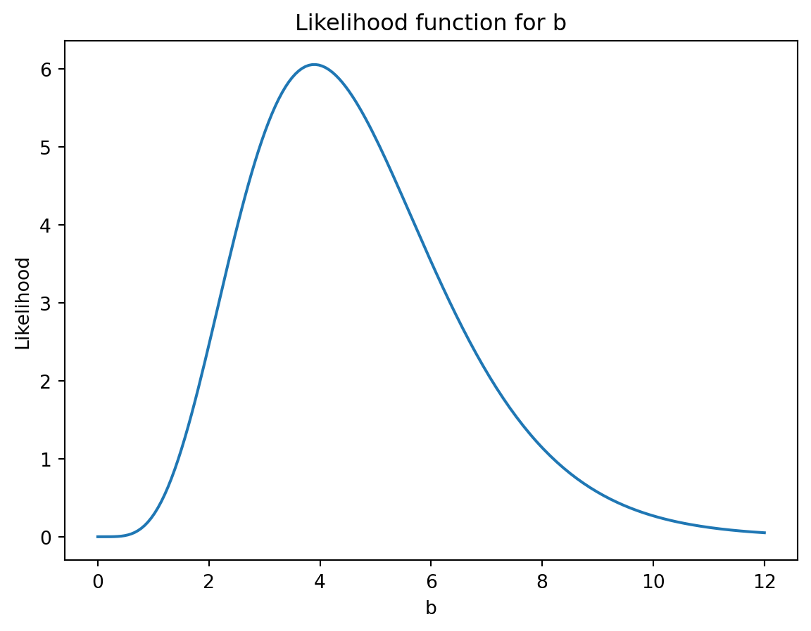
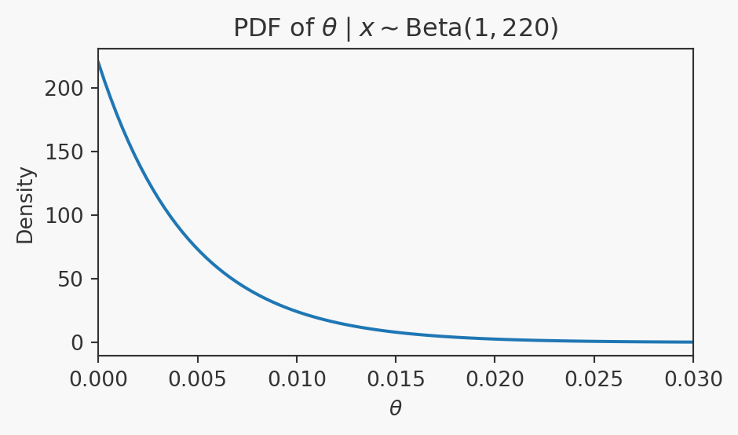
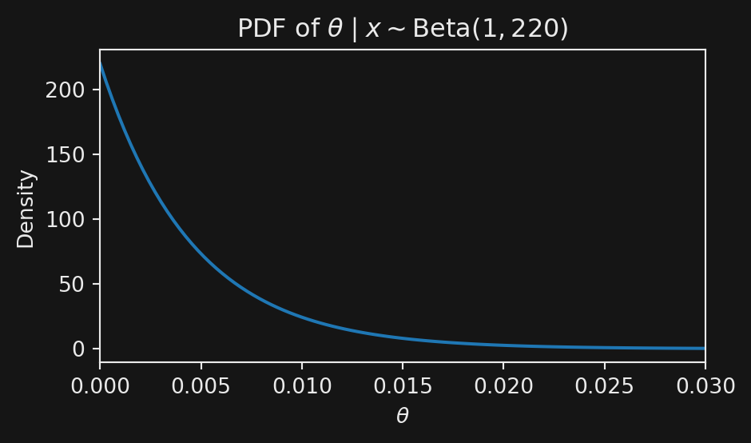

Question Bank
TipChoose a practice route
| If you are… | Start with… | Then move to… |
|---|---|---|
| checking the foundations | foundations at Easy or Medium |
expectation, estimator, then bias, variance, mse |
| checking your understanding | interpretation at Easy or Medium |
calculation questions on the same topic |
| revising estimation | likelihood and mle at Medium |
fisher-information, consistency, asymptotic-mle |
| revising uncertainty and tests | confidence-interval and hypothesis-test at Medium |
t-test, lrt, then exam-style |
| revising Bayesian methods | bayes and conjugacy at Medium |
map, hdi, then exam-style |
Use Challenge questions for extension or after you can complete the core route unaided. Some questions include coding because it can help you explore the ideas; writing or interpreting code is not required in the exam.
The 12 foundation questions build from events and conditional probability to distributions, dependence, and sample means. For a short diagnostic, try events, conditional probabilities, Bayes’ theorem, densities, and sample means. Probability is assumed background for the assessed inference topics, rather than a separate exam topic.
The 9 interpretation questions connect the calculations to their meaning. Start with estimators and estimates and choosing a method, then check your understanding of intervals, p-values, and power.
The filters below combine tags using AND: selecting bayes and binomial shows questions carrying both tags. Difficulty runs from Easy through Challenge.
{
for (const el of allQuestions) {
// --- Tagbar (unchanged) ---
if (!el.querySelector('.tagbar')) {
const tags = (el.dataset.tags || "").split(/\s+/).filter(Boolean);
const bar = document.createElement('div');
bar.className = 'tagbar';
bar.append(...tags.map(t => Object.assign(document.createElement('span'), {
className: 'tag', textContent: t
})));
el.appendChild(bar);
}
// --- Difficulty peppers in header (RHS) ---
const header = el.querySelector('.callout-header');
if (header && !header.querySelector('.difficulty-peppers')) {
const level = Number(el.dataset.difficulty ?? 0);
// Always show, but only add peppers if >0
const span = document.createElement('span');
span.className = `difficulty-peppers level-${level}`;
span.setAttribute('role', 'img');
const difficultyName = ["Easy", "Medium", "Hard", "Challenge"][level] ?? "Unrated";
span.setAttribute('aria-label', `Difficulty: ${difficultyName}`);
span.textContent = level > 0 ? `(${ "🌶".repeat(level) })` : "( )";
header.appendChild(span);
}
}
return html`` // silence
}viewof typed = {
// --- DOM
const wrapper = html`<div class="token-autocomplete"></div>`;
const labelEl = html`<label class="token-label" for="question-tag-filter">Filter by tags (type, space-separated):</label>`;
const input = html`<input id="question-tag-filter" class="token-input" type="text" placeholder="e.g. bayes probability">`;
wrapper.append(labelEl, input);
// --- PORTAL: suggestions list lives at document.body so it can overlay everything
const list = html`<div class="token-suggestions" role="listbox" hidden></div>`;
document.body.appendChild(list);
// Make sure it floats above all content
list.style.position = "fixed";
list.style.zIndex = "9999"; // high z-index to overlay everything
// --- value plumbing
Object.defineProperty(wrapper, "value", {
get() { return input.value; },
set(v) { input.value = v ?? ""; }
});
// --- helpers
const TAGS = () => (typeof allTags !== "undefined" ? allTags : []);
const tokens = () => input.value.split(/\s+/).filter(Boolean);
const lastToken = () => (input.value.match(/(?:^|\s)(\S*)$/)?.[1]) ?? "";
const pretty = t => t.replace(/-/g, " ").replace(/\b\w/g, c => c.toUpperCase());
// Position portal directly below the input, matching its width
const alignList = () => {
const r = input.getBoundingClientRect();
list.style.left = `${r.left}px`;
list.style.top = `${r.bottom + 4}px`;
list.style.width = `${r.width}px`;
};
// --- render suggestions
let selectedIndex = -1;
const applyActiveStyles = () => {
const items = Array.from(list.children);
items.forEach((el, i) => el.classList.toggle("active", i === selectedIndex));
};
function renderSuggestions() {
const q = lastToken().toLowerCase();
const already = new Set(tokens().map(s => s.toLowerCase()));
const tags = TAGS();
const candidates = q
? tags.filter(t => t.toLowerCase().startsWith(q) && !already.has(t.toLowerCase()))
: [];
list.innerHTML = "";
if (candidates.length === 0) { list.hidden = true; return; }
for (const t of candidates.slice(0, 8)) {
const item = html`<div class="token-suggestion" role="option" data-token="${t}">${pretty(t)}</div>`;
item.addEventListener("mousedown", (e) => { e.preventDefault(); acceptSuggestion(t); });
list.appendChild(item);
}
selectedIndex = -1;
applyActiveStyles();
list.hidden = false;
alignList(); // ensure correct position when shown
}
function commit() {
const parts = tokens();
input.value = parts.join(" ") + (parts.length ? " " : "");
wrapper.dispatchEvent(new Event("input", { bubbles: true }));
}
function acceptSuggestion(tag) {
const parts = input.value.split(/\s+/);
if (/\S/.test(input.value)) parts.pop(); // replace last token
const set = new Set(parts.filter(Boolean).map(s => s.toLowerCase()));
if (!set.has(tag.toLowerCase())) parts.push(tag);
input.value = parts.filter(Boolean).join(" ") + " ";
list.hidden = true;
commit();
input.focus();
}
function moveSelection(delta) {
const items = Array.from(list.children);
if (items.length === 0) return;
selectedIndex = (selectedIndex + delta + items.length) % items.length;
applyActiveStyles();
if (selectedIndex >= 0) items[selectedIndex].scrollIntoView({ block: "nearest" });
}
// --- events
input.addEventListener("input", renderSuggestions);
input.addEventListener("focus", () => { alignList(); }); // realign on focus
input.addEventListener("keydown", (e) => {
if (!list.hidden && (e.key === "ArrowDown" || e.key === "ArrowUp")) {
e.preventDefault(); moveSelection(e.key === "ArrowDown" ? +1 : -1); return;
}
if (e.key === "Enter") {
if (!list.hidden && selectedIndex >= 0) {
e.preventDefault();
const choice = list.children[selectedIndex]?.dataset.token;
if (choice) acceptSuggestion(choice);
} else {
commit();
}
} else if (e.key === "Escape") {
list.hidden = true;
}
});
// Delay blur to allow mousedown on suggestion to fire first
input.addEventListener("blur", () => {
setTimeout(() => { list.hidden = true; commit(); }, 200);
});
// Close when clicking outside (remember list is outside wrapper now)
const onDocClick = (e) => {
if (e.target !== input && !list.contains(e.target)) list.hidden = true;
};
document.addEventListener("click", onDocClick, true);
// Reposition on any scroll/resize (capture scrolls from nested containers)
const onViewportChange = () => { if (!list.hidden) alignList(); };
window.addEventListener("resize", onViewportChange, { passive: true });
window.addEventListener("scroll", onViewportChange, true);
// Initial alignment
queueMicrotask(alignList);
// Cleanup when the cell re-runs
wrapper.dispose = () => {
document.removeEventListener("click", onDocClick, true);
window.removeEventListener("resize", onViewportChange, { passive: true });
window.removeEventListener("scroll", onViewportChange, true);
list.remove();
};
// Initial render
renderSuggestions();
return wrapper;
}{
// Sync checkboxes to the committed text tokens
const lcMap = new Map(allTags.map(t => [t.toLowerCase(), t])); // lower → original
const typedNow = (typed || "").split(/\s+/).filter(Boolean).map(s => s.toLowerCase());
const selected = typedNow.map(s => lcMap.get(s)).filter(Boolean);
const el = viewof chosen;
if (el && Array.isArray(el.value)) {
// compare sets to avoid churn
const cur = new Set(el.value);
let equal = selected.length === cur.size && selected.every(v => cur.has(v));
if (!equal) {
el.value = selected;
el.dispatchEvent(new Event("input", {bubbles:true}));
}
}
return html``;
}{
const typedSet = new Set((typed || "").split(/\s+/).filter(Boolean));
const chosenSet = new Set(chosen || []);
const required = new Set([...typedSet, ...chosenSet]); // AND over tags
const chosenLv = new Set(levels || []); // allowed levels
let shown = 0;
for (const el of allQuestions) {
// tags check
const elTags = new Set((el.dataset.tags || "").split(/\s+/).filter(Boolean));
const passTags = required.size === 0 || [...required].every(t => elTags.has(t));
// difficulty check (0 default)
const level = Number(el.dataset.difficulty ?? 0);
const passDiff = chosenLv.has(level);
const show = passTags && passDiff;
el.style.display = show ? "" : "none";
if (show) shown += 1;
}
return html`<div><strong>Showing ${shown}</strong> of ${allQuestions.length} questions.</div>`
}
Important 1: Events: at least one, exactly one, or neither
For a randomly selected student, let A be the event that they attend a revision session and B the event that they complete a practice paper. Suppose \mathrm{Pr}(A)=0.60,\qquad \mathrm{Pr}(B)=0.45,\qquad \mathrm{Pr}(A\cap B)=0.25.
- Find the probability that the student does at least one of these activities.
- Find the probability that they do neither activity.
- Find the probability that they do exactly one activity. Explain why this differs from part (a).
Solution
(a) Inclusion–exclusion gives \mathrm{Pr}(A\cup B)=0.60+0.45-0.25=0.80. The union includes students who do both activities.
(b) Neither activity is the complement of the union, so its probability is 1-0.80=0.20.
(c) The two disjoint possibilities are attending only and completing only: \mathrm{Pr}(A\cap B^c)+\mathrm{Pr}(A^c\cap B) =(0.60-0.25)+(0.45-0.25)=0.55. Exactly one excludes the intersection. As a check, the four probabilities for attending only, completing only, both, and neither sum to 0.35+0.20+0.25+0.20=1.
Important 2: Conditional probabilities from a two-way table
A group of 100 students is classified as follows. Select one student uniformly at random. Let R mean that they used a revision resource and P that they passed a short quiz.
| Resource use | Passed | Did not pass | Total |
|---|---|---|---|
| Used the resource | 36 | 24 | 60 |
| Did not use the resource | 14 | 26 | 40 |
| Total | 50 | 50 | 100 |
- Find \mathrm{Pr}(R\cap P) and \mathrm{Pr}(P).
- Find \mathrm{Pr}(P\mid R) and \mathrm{Pr}(R\mid P).
- Are R and P independent? Does the table establish that using the resource causes a higher chance of passing?
Solution
(a) Both probabilities use all 100 students as the denominator: \mathrm{Pr}(R\cap P)=\frac{36}{100}=0.36,\qquad \mathrm{Pr}(P)=\frac{50}{100}=0.50.
(b) Conditioning changes the group over which we calculate the proportion: \mathrm{Pr}(P\mid R)=\frac{36}{60}=0.60,\qquad \mathrm{Pr}(R\mid P)=\frac{36}{50}=0.72. Reversing the conditioning does not generally give the same probability.
(c) They are not independent because \mathrm{Pr}(P\mid R)=0.60 differs from \mathrm{Pr}(P)=0.50. Equivalently, 0.36\ne(0.60)(0.50). This is an association in the group. The table alone does not establish causation; for example, students who chose the resource might also have spent more time revising.
Important 3: Sampling without replacement
A bag contains 3 red counters and 2 blue counters. Two counters are drawn uniformly at random, one after the other, without replacement. Let R_1 and R_2 denote a red counter on the first and second draws respectively.
- Find \mathrm{Pr}(R_1\cap R_2).
- Find the probability of exactly one red counter.
- Use the law of total probability to find \mathrm{Pr}(R_2). Are R_1 and R_2 independent?
Solution
(a) After drawing one red counter, 2 of the remaining 4 counters are red: \mathrm{Pr}(R_1\cap R_2) =\mathrm{Pr}(R_1)\mathrm{Pr}(R_2\mid R_1) =\frac35\frac24=\frac3{10}.
(b) Red then blue and blue then red are disjoint outcomes, giving \mathrm{Pr}(\text{exactly one red}) =\frac35\frac24+\frac25\frac34=\frac35.
(c) Partitioning by the colour of the first counter, \mathrm{Pr}(R_2) =\frac35\frac24+\frac25\frac34=\frac35. The marginal red probability is the same on each draw, but \mathrm{Pr}(R_2\mid R_1)=1/2\ne3/5. The draws are dependent. Equal marginal distributions do not imply independence, and multiplying (3/5)(3/5) would give the wrong answer to part (a).
Important 4: Independent or mutually exclusive?
Roll a fair six-sided die. Define A=\{2,4,6\},\qquad B=\{1,2,3,4\},\qquad C=\{1,3,5\}.
- Show that A and B are independent. Are they mutually exclusive?
- Are A and C mutually exclusive, exhaustive, or independent?
- Can two events of positive probability be both independent and mutually exclusive? Justify your answer.
Solution
(a) Since A\cap B=\{2,4\}, \mathrm{Pr}(A\cap B)=\frac26=\frac13 =\frac12\frac23=\mathrm{Pr}(A)\mathrm{Pr}(B). They are independent but not mutually exclusive: both occur on outcomes 2 and 4.
(b) The events A and C are mutually exclusive and exhaustive: exactly one occurs on every roll. They are not independent because \mathrm{Pr}(A\cap C)=0\ne\frac14 =\mathrm{Pr}(A)\mathrm{Pr}(C).
(c) No. Mutual exclusivity requires an intersection of probability zero, whereas independence of two positive-probability events requires a strictly positive intersection probability. Knowing one such disjoint event occurred rules out the other.
Important 5: Total probability across three suppliers
A shop obtains 50\% of its items from supplier A, 30\% from B, and 20\% from C. Their respective defect probabilities are 0.02, 0.04, and 0.05. Select one item uniformly at random from the shop’s stock, and let D denote a defect.
- Find \mathrm{Pr}(D). Explain why simply averaging the three defect probabilities is inappropriate.
- Given that the item is defective, find the probability that it came from supplier C.
Solution
(a) Supplier identity partitions the stock, so \mathrm{Pr}(D) =(0.50)(0.02)+(0.30)(0.04)+(0.20)(0.05)=0.032. The rates need weights equal to the suppliers’ shares of the stock. An unweighted average would instead describe equal shares from all three suppliers.
(b) Bayes’ theorem gives \mathrm{Pr}(C\mid D) =\frac{\mathrm{Pr}(D\mid C)\mathrm{Pr}(C)}{\mathrm{Pr}(D)} =\frac{(0.05)(0.20)}{0.032}=\frac5{16}=0.3125. Supplier C accounts for 20\% of all items but 31.25\% of defective items.
Important 6: Bayes’ theorem and a rare fault
A fault is present in 1\% of components. An automated check flags 90\% of faulty components, but also flags 5\% of components without a fault. Let F denote a fault and A a flag.
- Find the probability that a component is flagged.
- Find \mathrm{Pr}(F\mid A). Explain why it is not 0.90.
- Check your answer using the expected numbers of faulty and non-faulty flagged components in a batch of 10{,}000.
Solution
(a) By total probability, \mathrm{Pr}(A)=(0.90)(0.01)+(0.05)(0.99)=0.0585.
(b) Bayes’ theorem gives \mathrm{Pr}(F\mid A)=\frac{(0.90)(0.01)}{0.0585} =\frac2{13}\approx0.1538. The value 0.90 is \mathrm{Pr}(A\mid F), the probability of a flag given a fault. Here we need the reverse conditioning. Most components have no fault, so false flags can outnumber true flags despite a relatively small false-flag rate.
(c) The expected numbers are 100 faulty and 9{,}900 non-faulty components. Of these, 90 and 495, respectively, are expected to be flagged. The ratio 90/(90+495)=2/13 agrees with part (b). These are expected counts, not a claim that every batch has exactly those counts.
Important 7: A discrete distribution from probabilities to moments
A random variable X has probability mass function p_X(x)=c(x+1),\qquad x\in\{0,1,2,3\}, and zero probability elsewhere.
- Find c.
- Write the full cumulative distribution function F_X(x).
- Find \mathrm{Pr}(1<X\le3) and \mathrm{Pr}(1\le X\le3).
- Find \mathrm{E}[X] and \mathrm{Var}(X).
Solution
(a) The probabilities must sum to one: c(1+2+3+4)=1, so c=1/10.
(b) The CDF includes all probability at or below its argument: F_X(x)= \begin{cases} 0,&x<0,\\ 0.1,&0\le x<1,\\ 0.3,&1\le x<2,\\ 0.6,&2\le x<3,\\ 1,&x\ge3. \end{cases} It is right-continuous, with a jump of size p_X(x) at each support point.
(c) We have \mathrm{Pr}(1<X\le3)=0.3+0.4=0.7, \qquad \mathrm{Pr}(1\le X\le3)=0.2+0.3+0.4=0.9. Equivalently, the first is F_X(3)-F_X(1). Including the lower endpoint adds the probability mass \mathrm{Pr}(X=1)=0.2.
(d) The first two moments are \mathrm{E}[X]=\frac{0+2+6+12}{10}=2,\qquad \mathrm{E}[X^2]=\frac{0+2+12+36}{10}=5. Thus \mathrm{Var}(X)=5-2^2=1.
Important 8: A density is not a point probability
A continuous random variable X has CDF F_X(x)= \begin{cases} 0,&x<0,\\ 4x^2,&0\le x\le\tfrac12,\\ 1,&x>\tfrac12. \end{cases}
- Find a probability density function for X and check that it integrates to one.
- Find \mathrm{Pr}(1/4<X\le1/2) and \mathrm{Pr}(X=1/4).
- Find f_X(1/4). Is a density value greater than one a problem?
- Find the median of X.
Solution
(a) Differentiating the CDF on the interior of the support gives f_X(x)=8x\quad(0<x<1/2), with density zero outside this interval. Its values at the two endpoints may be chosen arbitrarily without changing probabilities. It is non-negative and \int_0^{1/2}8x\,\mathrm{d}x=[4x^2]_0^{1/2}=1.
(b) Probabilities come from CDF differences, or areas under the density: \mathrm{Pr}(1/4<X\le1/2)=F_X(1/2)-F_X(1/4)=1-\frac14=\frac34. There is no jump at 1/4, so \mathrm{Pr}(X=1/4)=0. Changing an interval endpoint from strict to non-strict makes no difference here.
(c) The density value is f_X(1/4)=2. This is allowed: a density is a height, not a probability. Areas must lie between zero and one; individual density values need not.
(d) Solve F_X(m)=1/2: 4m^2=1/2, giving m=1/(2\sqrt2)\approx0.3536. Half the probability lies on each side of this value; the midpoint of the support need not be the median.
Important 9: Joint, marginal, and conditional probabilities
The joint probability mass function of X and Y is given below. All other pairs have probability zero.
| X\backslash Y | 0 | 1 | 2 |
|---|---|---|---|
| 0 | 0.10 | 0.20 | 0.10 |
| 1 | 0.20 | 0.10 | 0.30 |
- Find both marginal PMFs.
- Find \mathrm{Pr}(X=1\mid Y=2).
- Find the conditional PMF of Y given X=0, and hence \mathrm{E}[Y\mid X=0].
- Are X and Y independent?
Solution
(a) Row sums give p_X(0)=0.40 and p_X(1)=0.60. Column sums give p_Y(0)=0.30, p_Y(1)=0.30, and p_Y(2)=0.40. Each marginal PMF sums to one.
(b) Restricting to the column Y=2, \mathrm{Pr}(X=1\mid Y=2)=\frac{p_{X,Y}(1,2)}{p_Y(2)} =\frac{0.30}{0.40}=0.75.
(c) Dividing the X=0 row by its total 0.40 gives \mathrm{Pr}(Y=0\mid X=0)=0.25,\quad \mathrm{Pr}(Y=1\mid X=0)=0.50,\quad \mathrm{Pr}(Y=2\mid X=0)=0.25. Therefore \mathrm{E}[Y\mid X=0]=0(0.25)+1(0.50)+2(0.25)=1. Using the original row without normalising would not give a conditional PMF.
(d) No. For example, p_{X,Y}(0,0)=0.10\ne(0.40)(0.30)=p_X(0)p_Y(0). Independence requires this factorisation for every pair; one counterexample is enough to rule it out.
Important 10: Zero correlation does not imply independence
Let X take the values -1, 0, and 1, each with probability 1/3, and define Y=X^2.
- Find \mathrm{E}[X], \mathrm{E}[Y], and \mathrm{E}[XY].
- Find the covariance and correlation of X and Y. You may use \mathrm{Var}(X)=2/3 and \mathrm{Var}(Y)=2/9.
- Show that X and Y are nevertheless dependent.
Solution
(a) Direct summation gives \mathrm{E}[X]=\frac{-1+0+1}{3}=0,\qquad \mathrm{E}[Y]=\frac{1+0+1}{3}=\frac23. Since XY=X^3, \mathrm{E}[XY]=(-1+0+1)/3=0.
(b) Thus \mathrm{Cov}(X,Y)=\mathrm{E}[XY]-\mathrm{E}[X]\mathrm{E}[Y]=0. Both variances are positive, so the correlation is defined and equals zero.
(c) If X=0, then Y=0 with certainty, whereas \mathrm{Pr}(Y=0)=1/3: \mathrm{Pr}(Y=0\mid X=0)=1\ne\mathrm{Pr}(Y=0). Zero correlation excludes a linear association as measured by covariance; it does not exclude a nonlinear relationship such as Y=X^2.
Important 11: Counting events with indicator variables
Four components have fault probabilities p_1=0.1, p_2=0.2, p_3=0.3, and p_4=0.4. Define I_i=1 if component i is faulty and I_i=0 otherwise. Let N=I_1+I_2+I_3+I_4 be the number of faulty components.
- Find \mathrm{E}[N] without assuming independence.
- Now assume the fault indicators are independent. Find \mathrm{Var}(N).
- Explain why N is not Binomial with parameters 4 and 0.25, even though the average fault probability is 0.25.
- Without independence, what additional information would be needed to find \mathrm{Var}(N)?
Solution
(a) Each I_i is Bernoulli with mean p_i. Linearity of expectation gives \mathrm{E}[N]=\sum_{i=1}^4p_i=1. This calculation does not need independence.
(b) Under independence, the covariances vanish, so \mathrm{Var}(N)=\sum_{i=1}^4p_i(1-p_i) =0.09+0.16+0.21+0.24=0.70.
(c) A Binomial model assumes a common success probability as well as independent trials. Here the probabilities differ. In particular, a \mathrm{Binomial}(4,0.25) variable would have variance 4(0.25)(0.75)=0.75, which differs from part (b).
(d) The pairwise covariances, or equivalent joint fault probabilities, are needed because in general \mathrm{Var}(N)=\sum_i p_i(1-p_i)+2\sum_{i<j}\mathrm{Cov}(I_i,I_j). The four marginal fault probabilities alone are insufficient.
Important 12: One observation versus a sample mean
Let X_1,\ldots,X_{25} be independent \mathcal N(50,100) measurements, where the second Normal parameter is the variance. Let \bar X be their mean. You may use \Phi(0.4)=0.6554 and \Phi(2)=0.9772, where \Phi is the standard Normal CDF.
- State the standard deviations of X_1 and \bar X.
- Find \mathrm{Pr}(X_1>54) and \mathrm{Pr}(\bar X>54).
- Is the Normal distribution of \bar X exact or a CLT approximation here?
Solution
(a) One measurement has standard deviation \sqrt{100}=10. Independence gives \mathrm{Var}(\bar X)=100/25=4, so the standard deviation of the mean (its standard error) is 2.
(b) Standardise with the standard deviation of the quantity in question: \mathrm{Pr}(X_1>54)=1-\Phi\!\left(\frac{54-50}{10}\right) =1-0.6554=0.3446, whereas \mathrm{Pr}(\bar X>54)=1-\Phi\!\left(\frac{54-50}{2}\right) =1-0.9772=0.0228. Averaging reduces variability, so the same distance above the mean is much less likely for \bar X.
(c) It is exact: a linear combination of independent Normal random variables is Normal, so \bar X\sim\mathcal N(50,4). A large-sample approximation is unnecessary under this model.
ImportantProbability of heads
A fair coin is tossed 10 times. What is the probability of exactly 6 heads?
Solution
Work it via the Binomial: \mathrm{Pr}(X=6)=\binom{10}{6} (1/2)^{10}.
ImportantNewspaper subscriptions
In a certain city, 50\% of families subscribe to the morning newspaper, 65\% subscribe to the afternoon newspaper, and 30\% subscribe to both.
What proportion of families subscribe to at least one newspaper?
Solution
Let M = “morning” and A = “afternoon”.
By the addition rule of probability:
\mathrm{Pr}(M \cup A) \;=\; \mathrm{Pr}(M) + \mathrm{Pr}(A) - \mathrm{Pr}(M \cap A).
Substituting:
0.5 + 0.65 - 0.3 \;=\; 0.85.
So, 85\% of families subscribe to at least one newspaper.
Important 13: Normal Data MLE
Let X_1,\dots,X_n \stackrel{iid}{\sim} \mathcal{N}(\mu,1). Find the MLE of \mu.
Solution
The likelihood is
L(\mu ; \underline{x}) = \prod_{i=1}^n \frac{1}{\sqrt{2\pi}} \exp\!\left(-\tfrac{1}{2}(x_i - \mu)^2\right) = (2\pi)^{-n/2} \exp\left( -\frac{1}{2}\sum_{i=1}^n (x_i - \mu)^2 \right) .
Taking logs:
\ell(\mu) = -\tfrac{n}{2}\log(2\pi) - \tfrac{1}{2}\sum_{i=1}^n (x_i - \mu)^2.
Differentiate with respect to \mu:
\frac{\partial \ell}{\partial \mu} = \sum_{i=1}^n (x_i - \mu).
Setting equal to 0:
\sum_{i=1}^n (x_i - \mu) = 0 \quad\Longrightarrow\quad \hat\mu_{\mathrm{obs}} = \frac{1}{n}\sum_{i=1}^n x_i = \bar x.
So the MLE is the sample-mean estimator \bar X; for these observed data its value is \bar x.
ImportantConverting mean and standard deviation
October temperatures in Newcastle (daily maximum) have population mean 13^\circC and population standard deviation 3^\circC.
What would the population mean and standard deviation be if temperature was measured in ^\circF?
Note: If X is in ^\circC then Y = 1.8X + 32 is in ^\circF.
Solution
Using linearity of expectation:
\mathrm{E}[Y] \;=\; 1.8\,\mathrm{E}[X] + 32 \;=\; 1.8 \times 13 + 32 \;=\; 55.4^\circ \text{F}.
For the standard deviation, the shift does not matter and the scale multiplies:
\mathrm{SD}(Y) \;=\; 1.8 \, \mathrm{SD}(X) \;=\; 1.8 \times 3 \;=\; 5.4^\circ \text{F}.
ImportantPDF, normalisation constant, and CDF
The random variable X has PDF f(x) = \begin{cases} kx(1-x), & 0 \leq x \leq 1, \\ 0, & \text{otherwise}, \end{cases} where k is a constant.
- Find the value of k.
- Roughly sketch f(x). State, without calculation, the value of \mathrm{E}[X].
- Find and roughly sketch the CDF F(x) = \mathrm{Pr}(X \leq x).
Solution
a. Since the area under a PDF is 1: 1 = \int_{-\infty}^\infty f(x)\,dx = \int_0^1 k(x - x^2)\,dx = k \left[ \tfrac{x^2}{2} - \tfrac{x^3}{3} \right]_0^1 = \tfrac{k}{6}.
So k=6.
b. The PDF is symmetric about x = \tfrac{1}{2}, so \mathrm{E}[X] = \tfrac{1}{2}.
c. For 0 \leq x \leq 1: F(x) = \int_0^x 6(t - t^2)\,dt = 6\left[\tfrac{t^2}{2} - \tfrac{t^3}{3}\right]_0^x = x^2(3 - 2x).
So the full CDF is: F(x) = \begin{cases} 0, & x < 0, \\ x^2(3 - 2x), & 0 \leq x \leq 1, \\ 1, & x > 1. \end{cases}
xs = d3.range(-0.1, 1.1, 0.01)
// PDF
PDF = xs.map(x => ({
x: x,
y: (x >= 0 && x <= 1) ? 6*x*(1-x) : 0,
which: "PDF f(x)"
}))
// CDF
CDF = xs.map(x => {
let y;
if (x < 0) y = 0;
else if (x > 1) y = 1;
else y = x**2 * (3 - 2*x);
return {x: x, y: y, which: "CDF F(x)"};
})
viewof chart = Plot.plot({
height: 300,
width: 500,
style: { background: "var(--plot-bg)",
color: "var(--plot-fg)",
fontSize: 14,
fontFamily: bodyFont, },
y: {domain: [0,1.8]},
marks: [
Plot.line(PDF, {x: "x", y: "y", stroke: "var(--plot-series-1)"}),
Plot.line(CDF, {x: "x", y: "y", stroke: "var(--plot-series-2)"}),
Plot.ruleY([0]),
],
color: {legend: true}
})
ImportantLinear combinations of independent random variables
Suppose that X_1 and X_2 are independent random variables with
\mathrm{E}[X_1] = 4, \mathrm{Var}(X_1) = 5, \mathrm{E}[X_2] = 3, \mathrm{Var}(X_2) = 1.
Let
Y_1 = 2X_1 + X_2, \qquad Y_2 = X_1 - 2X_2.
Find:
- \mathrm{E}[Y_1], \ \mathrm{Var}(Y_1)
- \mathrm{E}[Y_2], \ \mathrm{Var}(Y_2)
- \mathrm{Cov}(Y_1,Y_2) and the correlation between Y_1 and Y_2.
Solution
a.
\mathrm{E}[Y_1] = 2\mathrm{E}[X_1] + \mathrm{E}[X_2] = 2 \times 4 + 3 = 11.
\mathrm{Var}(Y_1) = 4\mathrm{Var}(X_1) + \mathrm{Var}(X_2)
= 4 \times 5 + 1 = 21.
b.
\mathrm{E}[Y_2] = \mathrm{E}[X_1] - 2\mathrm{E}[X_2] = 4 - 6 = -2.
\mathrm{Var}(Y_2) = \mathrm{Var}(X_1) + 4\mathrm{Var}(X_2)
= 5 + 4 \times 1 = 9.
c.
\begin{align*} \mathrm{Cov}(Y_1,Y_2) &= \mathrm{Cov}(2X_1+X_2, \, X_1-2X_2) \\ &= 2\mathrm{Var}(X_1) - 2\mathrm{Var}(X_2) + (-4+1)\mathrm{Cov}(X_1,X_2). \end{align*}
Since X_1 and X_2 are independent, \mathrm{Cov}(X_1,X_2)=0. So \mathrm{Cov}(Y_1,Y_2) = 2 \times 5 - 2 \times 1 = 8.
Finally, the correlation is \mathrm{Corr}(Y_1,Y_2) = \frac{\mathrm{Cov}(Y_1,Y_2)}{\sqrt{\mathrm{Var}(Y_1)\mathrm{Var}(Y_2)}} = \frac{8}{\sqrt{21 \times 9}} \approx 0.582.
ImportantLinear combinations of dependent random variables
Suppose that X_1 and X_2 are dependent random variables with
\mathrm{E}[X_1] = 4, \mathrm{Var}(X_1) = 5, \mathrm{E}[X_2] = 3, \mathrm{Var}(X_2) = 1
and
\mathrm{Cov}(X_1, X_2) = 2.
Let
Y_1 = 2X_1 + X_2, \qquad Y_2 = X_1 - 2X_2.
Find:
- \mathrm{E}[Y_1], \ \mathrm{Var}(Y_1)
- \mathrm{E}[Y_2], \ \mathrm{Var}(Y_2)
- \mathrm{Cov}(Y_1,Y_2) and the correlation between Y_1 and Y_2.
Solution
a.
\mathrm{E}[Y_1] = 2\mathrm{E}[X_1] + \mathrm{E}[X_2] = 11.
\begin{align*} \mathrm{Var}(Y_1) &= \mathrm{Var}(2X_1) + \mathrm{Var}(X_2) + 2\mathrm{Cov}(2X_1,X_2) \\ &= 4\mathrm{Var}(X_1) + \mathrm{Var}(X_2) + 4\mathrm{Cov}(X_1,X_2) \\ &= 4\times 5 + 1 + 4\times 2 = 29. \end{align*}
b.
\mathrm{E}[Y_2] = \mathrm{E}[X_1] - 2\mathrm{E}[X_2] = -2.
\begin{align*} \mathrm{Var}(Y_2) &= \mathrm{Var}(X_1) + \mathrm{Var}(2X_2) - 2\mathrm{Cov}(X_1,2X_2) \\ &= \mathrm{Var}(X_1) + 4\mathrm{Var}(X_2) - 4\mathrm{Cov}(X_1,X_2) \\ &= 5 + 4 - 8 = 1. \end{align*}
c.
\begin{align*} \mathrm{Cov}(Y_1,Y_2) &= \mathrm{Cov}(2X_1+X_2, \, X_1-2X_2) \\ &= 2\mathrm{Var}(X_1) - 2\mathrm{Var}(X_2) + (-4+1)\mathrm{Cov}(X_1,X_2) \\ &= 10 - 2 - 6 = 2. \end{align*}
So the correlation is \mathrm{Corr}(Y_1,Y_2) = \frac{\mathrm{Cov}(Y_1,Y_2)}{\sqrt{\mathrm{Var}(Y_1)\mathrm{Var}(Y_2)}} = \frac{2}{\sqrt{29 \times 1}} \approx 0.371.
ImportantMinimiser of \mathrm{E}[(X-c)^2]
Suppose that X is a continuous random variable. Show that \mathrm{E}[(X-c)^2] is minimised when c is the population mean. State any assumptions.
Solution
As X is continuous, \mathrm{E}[(X-c)^2] = \int_{-\infty}^\infty (x-c)^2 f(x)\,dx.
We assume we can interchange differentiation with respect to c and integration with respect to x. Then \frac{\partial}{\partial c}\,\mathrm{E}[(X-c)^2] = \mathrm{E}\!\left[\frac{\partial}{\partial c}(X-c)^2\right] = \int_{-\infty}^\infty \frac{\partial}{\partial c}(x-c)^2 f(x)\,dx.
Differentiating: \frac{\partial}{\partial c}\,\mathrm{E}[(X-c)^2] = -2\int_{-\infty}^\infty (x-c) f(x)\,dx = -2\{\mathrm{E}[X] - c\}.
This derivative is zero when c = \mathrm{E}[X].
The second derivative is positive, so this is indeed a minimum.
ImportantMinimiser of \mathrm{E}[|X-c|]
Suppose that X is a continuous random variable. Show that \mathrm{E}[|X-c|] is minimised when c is the population median. State any assumptions.
Hint: The derivative of |X-c| with respect to c is -1 when x>c and +1 when x<c.
Solution
We assume the technical conditions allowing us to interchange differentiation with respect to c and integration with respect to x.
Using the hint: \frac{\partial}{\partial c}\,\mathrm{E}[|X-c|] = \mathrm{E}\!\left[\frac{\partial}{\partial c}|X-c|\right] = \mathrm{E}[I(X \leq c) - I(X > c)], where I(\cdot) is the indicator function.
So, \frac{\partial}{\partial c}\,\mathrm{E}[|X-c|] = \mathrm{Pr}(X \leq c) - \mathrm{Pr}(X > c).
Since \mathrm{Pr}(X > c) = 1 - \mathrm{Pr}(X \leq c), this simplifies to \frac{\partial}{\partial c}\,\mathrm{E}[|X-c|] = 2\mathrm{Pr}(X \leq c) - 1.
This derivative is zero when \mathrm{Pr}(X \leq c) = \tfrac{1}{2}, i.e. when c is the median of the distribution of X.
(Aside: this argument ignores the non-differentiability of |X-c| at x=c — a more careful treatment requires subgradients.)
ImportantBinomial Probabilities
Suppose X \sim \mathrm{Bin}(n,p).
When n=6 and p=0.3, find, either by hand or using R or Python, each of:
- \mathrm{Pr}(X < 2)
- \mathrm{Pr}(1 < X \leq 2)
- \mathrm{Pr}(X > 1)
- \mathrm{Pr}(X < 2)
When n=10 and p=0.75, find the probability that X is within one of its population mean.
Solution
a.
As X is binomial, it can only take the values 0,1,2,\ldots,6.
i. \mathrm{Pr}(X<2) = \mathrm{Pr}(X=0) + \mathrm{Pr}(X=1).
\mathrm{Pr}(X=0) = \binom{6}{0} (0.3)^0 (0.7)^6 = 0.7^6.
\mathrm{Pr}(X=1) = \binom{6}{1} (0.3)^1 (0.7)^5 = 6 \times 0.3 \times 0.7^5.
So, \mathrm{Pr}(X<2) = 0.7^6 + 6 \times 0.3 \times 0.7^5 \approx 0.4202.
ii.
\mathrm{Pr}(1 < X \leq 2) = \mathrm{Pr}(X=2)
= \binom{6}{2} (0.3)^2 (0.7)^4
= 15 \times 0.09 \times 0.2401
\approx 0.3241.
iii.
\mathrm{Pr}(X > 1) = 1 - \mathrm{Pr}(X \leq 1) = 1 - \mathrm{Pr}(X<2).
So, \mathrm{Pr}(X>1) = 1 - 0.4202 = 0.5798.
b.
For X \sim \mathrm{Bin}(10,0.75):
- The mean is \mathrm{E}[X] = np = 10 \times 0.75 = 7.5.
- “Within one of the mean” means 6.5 \leq X \leq 8.5.
Since X is integer-valued, this corresponds to X \in \{7,8\}.
\mathrm{Pr}(6.5 \leq X \leq 8.5) = \mathrm{Pr}(X=7) + \mathrm{Pr}(X=8).
\mathrm{Pr}(X=7) = \binom{10}{7}(0.75)^7(0.25)^3,
\mathrm{Pr}(X=8) = \binom{10}{8}(0.75)^8(0.25)^2.
Numerically, \mathrm{Pr}(X=7) \approx 0.2503, \quad \mathrm{Pr}(X=8) \approx 0.2816.
So, \mathrm{Pr}(6.5 \leq X \leq 8.5) \approx 0.2503 + 0.2816 = 0.5319.
In R or Python:
Show code
from math import comb
from scipy.stats import binom
# Part (a): n=6, p=0.3
n, p = 6, 0.3
pr_less_2 = binom.cdf(1, n, p) # P(X < 2)
pr_eq_2 = binom.pmf(2, n, p) # P(X = 2)
pr_greater_1 = 1 - pr_less_2 # P(X > 1)
# Part (b): n=10, p=0.75
n, p = 10, 0.75
pr_within_mean = binom.pmf(7, n, p) + binom.pmf(8, n, p)
print(
f"Pr(X < 2) = {pr_less_2:.4f}\n"
f"Pr(1 < X <= 2) = {pr_eq_2:.4f}\n"
f"Pr(X > 1) = {pr_greater_1:.4f}\n"
f"Pr(X within 1 of mean) = {pr_within_mean:.4f}"
)Pr(X < 2) = 0.4202
Pr(1 < X <= 2) = 0.3241
Pr(X > 1) = 0.5798
Pr(X within 1 of mean) = 0.5318#| echo: true
#| code-fold: true
#| code-summary: "Show code"
# Part (a): n=6, p=0.3
n <- 6; p <- 0.3
pr_less_2 <- pbinom(1, n, p) # P(X < 2)
pr_eq_2 <- dbinom(2, n, p) # P(X = 2)
pr_greater_1 <- 1 - pr_less_2 # P(X > 1)
# Part (b): n=10, p=0.75
n <- 10; p <- 0.75
pr_within_mean <- dbinom(7, n, p) + dbinom(8, n, p)
cat(
"Pr(X < 2) =", round(pr_less_2,4), "\n",
"Pr(1 < X <= 2) =", round(pr_eq_2,4), "\n",
"Pr(X > 1) =", round(pr_greater_1,4), "\n",
"Pr(X within 1 of mean) =", round(pr_within_mean,4), "\n"
)
ImportantMean and Standard Deviation of Linear Combinations
Suppose X \sim \mathcal{N}(3,2) and, independently, Y \sim \mathcal{N}(-2,7).
Find the population mean and standard deviation of:
- 3X + 2
- 5 - Y
- 3X + 7 - Y
Solution
a.
\mathrm{E}[3X+2] = 3\mathrm{E}[X] + 2 = 3 \times 3 + 2 = 11.
\mathrm{Var}(3X+2) = 3^2 \mathrm{Var}(X) = 9 \times 2 = 18.
So the standard deviation is \sqrt{18} \approx 4.2426.
b.
\mathrm{E}[5-Y] = 5 - \mathrm{E}[Y] = 5 - (-2) = 7.
\mathrm{Var}(5-Y) = (-1)^2 \mathrm{Var}(Y) = 1 \times 7 = 7.
So the standard deviation is \sqrt{7} \approx 2.6458.
(c)
\mathrm{E}[3X+7-Y] = 3\mathrm{E}[X] + 7 - \mathrm{E}[Y] = 3 \times 3 + 7 - (-2) = 18.
Since X and Y are independent, \mathrm{Var}(3X+7-Y) = 3^2\mathrm{Var}(X) + (-1)^2 \mathrm{Var}(Y) = 9 \times 2 + 1 \times 7 = 25.
So the standard deviation is \sqrt{25} = 5.
ImportantExpectation with a Poisson Distribution
The number of breakdowns per week in a computer cluster is a random variable Y having a Poisson distribution with population mean \mu.
The weekly cost of repairing breakdowns is
C = 3Y + Y^2.
Find \mathrm{E}[C].
Solution
We have \mathrm{E}[C] = \mathrm{E}[3Y + Y^2] = 3\mathrm{E}[Y] + \mathrm{E}[Y^2].
Since Y \sim \mathrm{Poisson}(\mu):
- \mathrm{E}[Y] = \mu
- \mathrm{Var}(Y) = \mu
- Recall that \mathrm{Var}(Y) = \mathrm{E}[Y^2] - (\mathrm{E}[Y])^2, so \mathrm{E}[Y^2] = \mu + \mu^2.
Therefore, \mathrm{E}[C] = 3\mu + (\mu + \mu^2) = 4\mu + \mu^2.
ImportantDistribution of a Squared Normal Variable
Suppose Z \sim \mathcal{N}(0,1).
Find the PDF of Y = Z^2.
Hint: start by finding a formula for the CDF F_Y(y) = \mathrm{Pr}(Y \leq y) for any y > 0.
Solution
For y > 0: F_Y(y) = \mathrm{Pr}(Y \leq y) = \mathrm{Pr}(Z^2 \leq y).
This is equivalent to F_Y(y) = \mathrm{Pr}(-\sqrt{y} \leq Z \leq \sqrt{y}) = \mathrm{Pr}(Z \leq \sqrt{y}) - \mathrm{Pr}(Z \leq -\sqrt{y}).
Using the standard normal CDF \Phi, F_Y(y) = \Phi(\sqrt{y}) - \Phi(-\sqrt{y}).
Differentiate to find the PDF:
f_Y(y) = \frac{\partial}{\partial y} \Big[ \Phi(\sqrt{y}) - \Phi(-\sqrt{y}) \Big].
By the chain rule: f_Y(y) = \phi(\sqrt{y}) \cdot \frac{1}{2\sqrt{y}} + \phi(-\sqrt{y}) \cdot \frac{1}{2\sqrt{y}}.
Since \phi (the standard normal PDF) is symmetric, f_Y(y) = \frac{1}{\sqrt{y}} \, \phi(\sqrt{y}).
Substitute \phi(z) = \tfrac{1}{\sqrt{2\pi}} e^{-z^2/2}: f_Y(y) = \frac{1}{\sqrt{2\pi y}} e^{-y/2}, \quad y > 0.
For y \leq 0, f_Y(y)=0.
Aside.
This is exactly the PDF of a \chi^2_1 distribution.
ImportantCustomer Waiting Times
Customer waiting times at a call centre can be assumed to be Gamma Gamma random variables with mean 3 minutes and standard deviation 2 minutes.
What proportion of customers are expected to wait more than 5 minutes?
Hint: you will need R or Python for this.
Solution
Let the waiting time be X \sim \mathrm{Gamma}(\alpha, \lambda), with shape \alpha and rate \lambda.
From the formulas:
\mathrm{E}[X] = \frac{\alpha}{\lambda},
\qquad \mathrm{Var}(X) = \frac{\alpha}{\lambda^2}.
We are told: \mathrm{E}[X] = 3, \qquad \mathrm{SD}[X] = 2 \ \Rightarrow \ \mathrm{Var}(X) = 4.
So: \frac{\alpha}{\lambda} = 3, \qquad \frac{\alpha}{\lambda^2} = 4.
Divide the second equation by the first: \frac{\alpha/\lambda^2}{\alpha/\lambda} = \frac{4}{3} \quad \Rightarrow \quad \frac{1}{\lambda} = \frac{4}{3}.
Hence: \lambda = 0.75, \quad \alpha = 3\lambda = 2.25.
We want: \mathrm{Pr}(X > 5) = 1 - F_X(5).
ImportantExact Binomial Confidence Interval (Clopper–Pearson)
Suppose we have a single Binomial Binomial observation
X \mid p \sim \mathrm{Binomial}(n,p).
Following the general strategy General Recipe, construct an exact two-sided (1-\alpha) confidence interval for p.
Note on exact (discrete) coverage. In the discrete case, an “exact” interval [L(X), U(X)] means, for every 0\leq p \leq 1,
\operatorname{Pr}\!\big(L(X) \leq p \leq U(X)\big) \ge 1-\alpha, \quad\text{where }X \sim \text{Binomial}(n,p).
Because of discreteness, equality for all p is impossible; the interval is conservative.
Solution
1. Choose a statistic. Take T=X. Its sampling distribution is
X \mid p \sim \mathrm{Binomial}(n,p),\qquad f(x\mid p)=\binom{n}{x}p^x(1-p)^{n-x}.
2–3. Form a pivot via tail probabilities and fix central mass. Denote F_p(y) = \mathrm{Pr}(Y \leq y) where Y\sim \mathrm{Binomial}(n,p) and denote \mathrm{Pr}_{p}(X\le x) = F_p(x). For a given observed x, define endpoints by equating the two tails to \alpha/2:
\mathrm{Pr}_{p_L}(X\le x-1)=\frac{\alpha}{2},\qquad \mathrm{Pr}_{p_U}(X\ge x+1)=\frac{\alpha}{2}.
(Edge cases: if x=0 set p_L=0; if x=n set p_U=1.)
4. Invert (Clopper–Pearson). These tail equalities are exactly equivalent to Beta quantiles, giving closed-form endpoints:
\boxed{\; p_L = B^{-1}\!\left(\tfrac{\alpha}{2};\, x,\; n-x+1\right),\qquad p_U = B^{-1}\!\left(1-\tfrac{\alpha}{2};\, x+1,\; n-x\right)\; }
where B^{-1}(q;a,b) is the q-quantile of \mathrm{Beta}(a,b). With the edge-case conventions above:
p_L= \begin{cases} 0, & x=0,\\ B^{-1}\!\left(\tfrac{\alpha}{2};\, x,\; n-x+1\right), & x\ge 1, \end{cases} \quad p_U= \begin{cases} B^{-1}\!\left(1-\tfrac{\alpha}{2};\, x+1,\; n-x\right), & x\le n-1,\\ 1, & x=n. \end{cases}
We obtain the Clopper–Pearson interval [p_L,\,p_U], which is an exact (conservative) two-sided (1-\alpha) CI for p.
ImportantProbability Integral Transform
Suppose X is a continuous random variable with CDF F(x).
Define the random variable
U = F(X),
that is, the CDF evaluated at a random argument.
Show that U \sim U(0,1).
Aside. This result is fundamental in simulation: if we can generate uniform random variables U \sim U(0,1), then we can simulate X by setting X = F^{-1}(U).
Solution
Because F(\cdot) is continuous and strictly increasing, its inverse F^{-1}(\cdot) exists and is also strictly increasing.
Define the CDF of U as G(u) = \operatorname{Pr}(U \leq u).
Since U = F(X) always lies in [0,1], we have: G(u) = 0 \quad \text{for } u \leq 0, \qquad G(u) = 1 \quad \text{for } u \geq 1.
Now consider u \in (0,1): G(u) = \operatorname{Pr}(U \leq u) = \operatorname{Pr}(F(X) \leq u).
Because F is increasing, \operatorname{Pr}(F(X) \leq u) = \operatorname{Pr}(X \leq F^{-1}(u)).
By definition of the CDF F, \operatorname{Pr}(X \leq F^{-1}(u)) = F(F^{-1}(u)) = u.
Thus the CDF of U is G(u) = \begin{cases} 0, & u \leq 0, \\ u, & 0 < u \leq 1, \\ 1, & u > 1. \end{cases}
This is exactly the CDF of the \mathrm{Uniform}(0,1) distribution.
Therefore,
U \sim U(0,1).
ImportantMoment Generating Function of the Exponential
We have seen that properties of a random variable X can be described by the CDF, PMF, or PDF.
Another way is through the moment generating function (MGF) M(t), defined by
M(t) = \mathrm{E}[e^{tX}],
provided the expectation is finite (which is not always the case).
If the MGF exists, it is unique: two random variables have the same MGF if and only if they have the same distribution.
Suppose X \sim \mathrm{Exp}(\lambda), with PDF f(x) = \lambda e^{-\lambda x}, \quad x \geq 0.
Show that the MGF of X is M(t) = \frac{\lambda}{\lambda - t}, \qquad 0 \leq t < \lambda.
Solution
Choose t with 0 \leq t < \lambda to ensure convergence. Then M(t) = \mathrm{E}[e^{tX}] = \int_0^\infty e^{tx} \lambda e^{-\lambda x} \, dx.
Combine exponents: M(t) = \int_0^\infty \lambda e^{-(\lambda - t)x} \, dx.
Factor out (\lambda - t): M(t) = \frac{\lambda}{\lambda - t} \int_0^\infty (\lambda - t) e^{-(\lambda - t)x} \, dx.
But the integrand is the PDF of \mathrm{Exp}(\lambda - t), so the integral equals 1.
Therefore: M(t) = \frac{\lambda}{\lambda - t}, \qquad 0 \leq t < \lambda.
Important 14: Estimating \lambda from Independent Poisson Samples
Suppose X \sim \mathrm{Poisson}(\lambda) and, independently, Y \sim \mathrm{Poisson}(2\lambda).
Classify the following as parameters, statistics, or neither:
- X + 2Y
- \hat{\lambda} = (X+Y)/3
- \lambda / \hat{\lambda}
- \operatorname{Pr}(\lambda > \hat{\lambda})
- X + 2Y
Find the bias and MSE of each of the following estimators of \lambda. Which would you recommend?
- X
- Y-X
- (X+Y)/3
- X
Consider a general estimator w_1 X + w_2 Y. What values of w_1 and w_2 would you recommend?
Solution
a. Classification.
- A statistic is a function of data (random variables).
- A parameter depends only on the population.
- Neither means it involves both.
- X+2Y: Statistic
- (X+Y)/3: Statistic
- \lambda/\hat{\lambda}: Neither
- \operatorname{Pr}(\lambda > \hat{\lambda}): Parameter (depends on the distribution, not directly observable)
b. Bias and MSE.
Recall: for Poisson(\mu), \mathrm{E}[X]=\mathrm{Var}(X)=\mu.
- X \sim \mathrm{Poisson}(\lambda), so \mathrm{E}[X]=\lambda, \mathrm{Var}(X)=\lambda.
- Y \sim \mathrm{Poisson}(2\lambda), so \mathrm{E}[Y]=2\lambda, \mathrm{Var}(Y)=2\lambda.
- Independence: \mathrm{Var}(aX+bY) = a^2\mathrm{Var}(X) + b^2\mathrm{Var}(Y).
\text{Bias}(\hat{\theta}) = \mathrm{E}[\hat{\theta}] - \lambda, \qquad \mathrm{MSE}(\hat{\theta}) = \mathrm{Var}(\hat{\theta}) + \text{Bias}(\hat{\theta})^2.
X:
\mathrm{E}[X] = \lambda \;\Rightarrow\; \text{Bias}=0.
\mathrm{MSE} = \mathrm{Var}(X) = \lambda.Y-X:
\mathrm{E}[Y-X] = 2\lambda - \lambda = \lambda \;\Rightarrow\; \text{Bias}=0.
\mathrm{Var}(Y-X) = \mathrm{Var}(Y)+\mathrm{Var}(X) = 2\lambda + \lambda = 3\lambda.
\mathrm{MSE}=3\lambda.(X+Y)/3:
\mathrm{E}[(X+Y)/3] = (\lambda+2\lambda)/3 = \lambda \;\Rightarrow\; \text{Bias}=0.
\mathrm{Var}[(X+Y)/3] = \tfrac{1}{9}(\lambda+2\lambda) = \tfrac{\lambda}{3}.
\mathrm{MSE} = \tfrac{\lambda}{3}.
Recommendation: (X+Y)/3 has the smallest MSE.
c. General estimator w_1X + w_2Y.
Expectation: \mathrm{E}[w_1X+w_2Y] = (w_1 + 2w_2)\lambda.
For unbiasedness, require w_1+2w_2=1, i.e. w_1=1-2w_2.
Variance:
\begin{align*} \mathrm{Var}((1-2w_2)X + w_2Y) &= (1-2w_2)^2\lambda + 2w_2^2\lambda \\ &= (6w_2^2 - 4w_2 + 1)\lambda. \end{align*}
This quadratic in w_2 is minimised at w_2=\tfrac{1}{3}, giving w_1=\tfrac{1}{3}.
Thus the optimal unbiased estimator is: \hat{\lambda} = \tfrac{1}{3}(X+Y), matching part (b).
ImportantBias, Variance, and MSE of Estimators
A random variable X has expected value \mathrm{E}[X] = 2\theta + 6 and variance \mathrm{Var}(X) = 2\theta^2.
A random variable Y has expected value \mathrm{E}[Y] = 3\theta - 12 and variance \mathrm{Var}(Y) = 6\theta^2 + 1.
Assume X and Y are independent.
Compute the bias, variance, and MSE of the following estimators of \theta:
- \hat{\theta}_1 = 5X - 3Y - 65
- \hat{\theta}_2 = (X+Y)/5
- \hat{\theta}_3 = Y/6 + X/4 + 1/2
- \hat{\theta}_1 = 5X - 3Y - 65
Let \hat{\theta} = aX + bY + c be an estimator of \theta. Derive a system of linear equations involving a, b, c that ensures \hat{\theta} is unbiased for any value of \theta.
Suppose \hat{\theta} = aX + bY + c is an unbiased estimator of \theta. Find the values of a, b, c that minimise the mean squared error of \hat{\theta} when the true value of \theta = 1.
Solution
a. Bias, variance, and MSE.
\text{Bias}(\hat{\theta}) = \mathrm{E}[\hat{\theta}] - \theta, \qquad \text{MSE}(\hat{\theta}) = \mathrm{Var}(\hat{\theta}) + \text{Bias}(\hat{\theta})^2.
Using independence of X and Y:
\mathrm{Var}(aX+bY+c) = a^2\mathrm{Var}(X) + b^2\mathrm{Var}(Y).
\begin{array}{c|c|c|c|c} \text{Estimator } \hat{\theta} & \mathrm{E}[\hat{\theta}] & \mathrm{Var}[\hat{\theta}] & \text{Bias} & \text{MSE} \\ \hline 5X - 3Y - 65 & \theta+1 & 104\theta^2+9 & 1 & 104\theta^2+10 \\ (X+Y)/5 & \theta-\tfrac{6}{5} & \tfrac{8\theta^2+1}{25} & -\tfrac{6}{5} & \tfrac{8\theta^2+37}{25} \\ Y/6 + X/4 + 1/2 & \theta & \tfrac{7}{24}\theta^2 + \tfrac{1}{36} & 0 & \tfrac{7}{24}\theta^2 + \tfrac{1}{36} \\ \end{array}
b. Unbiasedness condition.
\mathrm{E}[\hat{\theta}] = a\,\mathrm{E}[X] + b\,\mathrm{E}[Y] + c = a(2\theta+6) + b(3\theta-12) + c.
For unbiasedness: \mathrm{E}[\hat{\theta}] = \theta for all \theta.
So (2a+3b-1)\theta + (6a - 12b + c) = 0.
This gives the system: 2a+3b=1, \qquad 6a - 12b + c = 0.
c. Minimising MSE when \theta=1.
For an unbiased estimator, MSE = variance:
\mathrm{Var}[\hat{\theta}] = a^2 \mathrm{Var}(X) + b^2 \mathrm{Var}(Y) = 2a^2 \theta^2 + b^2(6\theta^2+1).
At \theta=1: \mathrm{Var}[\hat{\theta}] = 2a^2 + 7b^2.
From part (b): a = \tfrac{1-3b}{2}, c = 12b - 6a.
Substitute a=(1-3b)/2: \mathrm{Var}[\hat{\theta}] = 2\Big(\tfrac{1-3b}{2}\Big)^2 + 7b^2 = \tfrac{(1-3b)^2}{2} + 7b^2 = \tfrac{23}{2}b^2 - 3b + \tfrac{1}{2}.
Minimise by setting derivative =0:
23b - 3 = 0 \quad \Rightarrow \quad b = \tfrac{3}{23}.
Then a = \tfrac{1-3b}{2} = \tfrac{7}{23}, \qquad c = 12b - 6a = -\tfrac{6}{23}.
Final recommended estimator: \hat{\theta} = \frac{7X + 3Y - 6}{23}.
Important 15: Properties of Poisson Estimators
Suppose that X_1, X_2, \ldots, X_n, for n \geq 1, are independent \mathrm{Poisson}(\lambda) random variables.
Two possible estimators of \lambda are: \hat{\lambda}_1 = \frac{1}{n} \sum_{i=1}^n X_i, \qquad \hat{\lambda}_2 = \frac{1}{n^2} \sum_{i=1}^n X_i.
Show that \hat{\lambda}_1 is unbiased but \hat{\lambda}_2 is not.
Show that \mathrm{Var}(\hat{\lambda}_1) = \frac{\lambda}{n}, \qquad \mathrm{Var}(\hat{\lambda}_2) = \frac{\lambda}{n^3}.
For each estimator, determine whether it can be shown to be consistent using its mean and variance.
Solution
a. Unbiasedness.
\mathrm{E}[\hat{\lambda}_1] = \frac{1}{n}\sum_{i=1}^n \mathrm{E}[X_i] = \frac{1}{n} \cdot n\lambda = \lambda.
So \hat{\lambda}_1 is unbiased.
\mathrm{E}[\hat{\lambda}_2] = \frac{1}{n^2}\sum_{i=1}^n \mathrm{E}[X_i] = \frac{1}{n^2} \cdot n\lambda = \frac{\lambda}{n}.
So \hat{\lambda}_2 is biased.
b. Variances.
Since X_i \sim \mathrm{Poisson}(\lambda), \mathrm{Var}(X_i) = \lambda.
\mathrm{Var}(\hat{\lambda}_1) = \frac{1}{n^2}\sum_{i=1}^n \mathrm{Var}(X_i) = \frac{1}{n^2} \cdot n\lambda = \frac{\lambda}{n}.
\mathrm{Var}(\hat{\lambda}_2) = \frac{1}{n^4}\sum_{i=1}^n \mathrm{Var}(X_i) = \frac{1}{n^4} \cdot n\lambda = \frac{\lambda}{n^3}.
c. Consistency.
- \hat{\lambda}_1: unbiased and \mathrm{Var}(\hat{\lambda}_1)\to 0 as n\to\infty, so \hat{\lambda}_1 is consistent.
- \hat{\lambda}_2: \mathrm{E}[\hat{\lambda}_2] = \lambda/n \to 0 as n\to\infty, so it does not converge to \lambda. Therefore it is not consistent.
Important 16: MLE for the Gamma Distribution
Suppose that X_1,\ldots,X_n is random sample from a \mathrm{Gamma}(1, b) distribution.
Show that the log-likelihood takes the form \ell(b;\underline{x}) = n\log(b) - b\sum_{i=1}^n x_i.
Using R or Python, plot the likelihood function of b given the data x_1 = 0.043,\quad x_2 = 0.060,\quad x_3 = 0.011,\quad x_4 = 0.142,\quad x_5 = 1.027.
Derive the maximum likelihood estimate \hat{b} of b. You do not need to verify it is a maximum.
Solution
a. Likelihood and log-likelihood.
The PDF of the \mathrm{Gamma}(1,b) distribution is
f(x \mid b) = b e^{-bx}, \quad x > 0.
Thus
L(b;\underline{x}) = \prod_{i=1}^n f(x_i;b) = \prod_{i=1}^n b e^{-bx_i} = b^n \exp\!\left(-b\sum_{i=1}^n x_i\right).
Therefore
\ell(b;\underline{x}) = \log L(b;\underline{x}) = n\log(b) - b\sum_{i=1}^n x_i.
b. Plotting.
Show code
import numpy as np
import matplotlib.pyplot as plt
x = np.array([0.043, 0.060, 0.011, 0.142, 1.027])
n = len(x)
def likelihood(b):
return b**n * np.exp(-b * np.sum(x))
b_mesh = np.linspace(0, 12, 200)
lik_values = [likelihood(b) for b in b_mesh]
plt.plot(b_mesh, lik_values)
plt.xlabel("b")
plt.ylabel("Likelihood")
plt.title("Likelihood function for b")
plt.show()
#| echo: true
#| code-fold: true
#| code-summary: "Show code"
#| fig-align: center
x = c(0.043, 0.060, 0.011, 0.142, 1.027)
likelihood = function(b) {
n = length(x)
return(b^n * exp(-b * sum(x)))
}
b_mesh = seq(0, 12, length.out = 100)
plot(b_mesh, likelihood(b_mesh), type = "l",
xlab = "b", ylab = "Likelihood")c. Maximum likelihood estimate.
Differentiate the log-likelihood:
\frac{\partial}{\partial b}\ell(b;\underline{x}) = \frac{n}{b} - \sum_{i=1}^n x_i.
Set equal to 0:
\frac{n}{b} = \sum_{i=1}^n x_i \quad \Rightarrow \quad \hat{b} = \frac{1}{\bar{x}}.
So the MLE is \hat{b} = 1/\bar{x}.
ImportantDeriving the Student-t distribution
Let X_1,\ldots, X_n \stackrel{\text{i.i.d.}}{\sim} \mathcal{N}(\mu,\sigma^2). From Proposition 4.2 and Proposition 4.3, we saw that
- \bar{X} \sim \mathcal{N}(\mu, \sigma^2/n),
- \dfrac{(n-1)S^2}{\sigma^2} \;\sim\; \chi^2_{\,n-1}, and
- The sample variance S^2 was independent of the sample mean \bar{X}.
Derive the PDF of the random variable T = \frac{\bar{X} - \mu}{S / \sqrt{n}}.
Solution
Set Z \;=\; \frac{\bar{X}-\mu}{\sigma/\sqrt{n}} \sim \mathcal{N}(0,1), \qquad U \;=\; \frac{(n-1)S^2}{\sigma^2} \sim \chi^2_{\,n-1}, with Z independent of U. Then T \;=\; \frac{\sigma Z}{\sqrt{(\sigma^2 U)/(n-1)}} \;=\; \frac{Z}{\sqrt{U/\nu}}, \qquad \nu := n-1.
Conditional distribution. Conditioning on U=u, T \mid U=u \;=\; \frac{Z}{\sqrt{u/\nu}} \;\sim\; \mathcal{N}\!\left(0,\; \frac{\nu}{u}\right), so its conditional density is f_{T\mid U}(t\mid u) = \sqrt{\frac{u}{2\pi\nu}}\;\exp\!\left(-\frac{u}{2\nu}t^2\right), \qquad t\in\mathbb{R}.
Mixture over U. The marginal PDF of T is f_T(t) = \int_0^\infty f_{T\mid U}(t\mid u)\, f_U(u)\, \mathrm{d}u,
where f_U(u) = \dfrac{1}{2^{\nu/2}\Gamma(\nu/2)}\,u^{\nu/2-1} e^{-u/2} for u>0. Thus
\begin{align*} f_T(t) &= \int_0^\infty \left[\sqrt{\frac{u}{2\pi\nu}}\;e^{-\frac{u}{2\nu}t^2}\right] \left[\frac{1}{2^{\nu/2}\Gamma(\nu/2)}\,u^{\nu/2-1} e^{-u/2}\right] \mathrm{d}u \\ &= \frac{1}{\sqrt{2\pi\nu}\,2^{\nu/2}\Gamma(\nu/2)} \int_0^\infty u^{\frac{\nu+1}{2}-1} \exp\!\left\{-\frac{1}{2}\!\left(1+\frac{t^2}{\nu}\right)u\right\} \,\mathrm{d}u. \end{align*}
Use the Gamma integral \displaystyle \int_0^\infty u^{a-1} e^{-b u}\,\mathrm{d}u = \Gamma(a)\,b^{-a} with a=\frac{\nu+1}{2} and b=\frac{1}{2}\!\left(1+\frac{t^2}{\nu}\right):
\begin{align*} f_T(t) &= \frac{1}{\sqrt{2\pi\nu}\,2^{\nu/2}\Gamma(\nu/2)} \cdot \Gamma\!\left(\frac{\nu+1}{2}\right) \left[\frac{1}{2}\!\left(1+\frac{t^2}{\nu}\right)\right]^{-\frac{\nu+1}{2}} \\ &= \frac{\Gamma\!\left(\frac{\nu+1}{2}\right)}{\sqrt{\nu\pi}\,\Gamma\!\left(\frac{\nu}{2}\right)} \left(1+\frac{t^2}{\nu}\right)^{-\frac{\nu+1}{2}}, \qquad t\in\mathbb{R}. \end{align*}
This is the Student-t density with \nu=n-1 degrees of freedom: T \sim t_\nu \quad \text{with} \quad f_T(t) = \frac{\Gamma\!\left(\frac{\nu+1}{2}\right)}{\sqrt{\nu\pi}\,\Gamma\!\left(\frac{\nu}{2}\right)} \left(1+\frac{t^2}{\nu}\right)^{-\frac{\nu+1}{2}}.
ImportantSample Mean and Standard Deviation
Emergency admissions to 10 hospitals were recorded on a particular day.
The summary statistics were:
- n = 10
- \sum_{i=1}^n x_i = 207
- \sum_{i=1}^n x_i^2 = 4501
Find the sample mean \bar{x} and the sample standard deviation s.
Solution
The sample mean is \bar{x} = \frac{1}{n}\sum_{i=1}^n x_i = \frac{207}{10} = 20.7.
To find the sample variance, s^2 = \frac{1}{n-1}\left(\sum_{i=1}^n x_i^2 - n \bar{x}^2\right).
Substituting the values: s^2 = \frac{1}{9}\left(4501 - 10 \times (20.7)^2\right) = \frac{1}{9}(4501 - 4284.9) = 24.011.
Taking the square root gives the sample standard deviation: s = \sqrt{24.011} \approx 4.900.
Important 17: Central Limit Theorem Approximation
The scores that responders give on a questionnaire can be assumed to be independent random variables, each with the following probability distribution:
| Score | 1 | 2 | 3 | 4 | 5 |
|---|---|---|---|---|---|
| Probability | 0.3 | 0.1 | 0.2 | 0.1 | 0.3 |
Use the Central Limit Theorem 4.1 to approximate the probability that the average score from n = 100 responders lies in the range (2.8,\,3.2).
Solution
Let X be the score for a randomly selected responder.
We first compute the moments.
Expected value: \mathrm{E}[X] = \sum_{i=1}^5 i \Pr(X=i) = 1(0.3) + 2(0.1) + 3(0.2) + 4(0.1) + 5(0.3) = 3.
Second moment: \mathrm{E}[X^2] = \sum_{i=1}^5 i^2 \Pr(X=i) = 1^2(0.3) + 2^2(0.1) + 3^2(0.2) + 4^2(0.1) + 5^2(0.3) = 11.6.
Variance: \operatorname{Var}(X) = \mathrm{E}[X^2] - (\mathrm{E}[X])^2 = 11.6 - 9 = 2.6.
Let \bar{X} be the sample mean. By the Central Limit Theorem, \bar{X} \overset{\text{approx.}}{\sim} \mathcal{N}\!\left(3,\; \frac{2.6}{100}\right).
We want: \Pr(2.8 < \bar{X} < 3.2) = \Pr\!\left(\frac{2.8-3}{\sqrt{2.6/100}} < Z < \frac{3.2-3}{\sqrt{2.6/100}}\right), where Z \sim N(0,1).
Compute the bounds: \frac{2.8-3}{\sqrt{0.026}} = -1.24, \qquad \frac{3.2-3}{\sqrt{0.026}} = 1.24.
Thus, \Pr(-1.24 < Z < 1.24) = \Pr(Z < 1.24) - \Pr(Z < -1.24).
Using R, Python or referring to the standard normal tables: \Pr(Z < 1.24) = 0.8925, \qquad \Pr(Z < -1.24) = 0.1075.
So, \Pr(2.8 < \bar{X} < 3.2) \approx 0.8925 - 0.1075 = 0.785.
Important 18: Normal Approximation to the Binomial
Use the Central Limit Theorem 4.1 to justify the Normal approximation to the Binomial Binomial.
That is, if X \sim \mathrm{Bin}(n,p), show that for large n (with p \neq 0,1), X \overset{\text{approx.}}{\sim} \mathcal{N} \big(np,\; np(1-p)\big).
Solution
The Binomial distribution counts the number of successes in n independent Bernoulli trials.
For trial i, define the indicator I_i = \begin{cases} 1, & \text{if success}, \\ 0, & \text{if failure}. \end{cases}
Each I_i has \mathrm{E}[I_i] = p, \qquad \operatorname{Var}(I_i) = p(1-p).
The total number of successes is X = \sum_{i=1}^n I_i.
By the Central Limit Theorem, the sum of independent, identically distributed random variables is approximately Normal when n is large. Therefore, X \overset{\text{approx.}}{\sim} \mathcal{N} \big(np,\; np(1-p)\big).
Important 19: Properties of an Estimator I
Suppose X_1, X_2, X_3 are independent random variables, each with expectation
\mathrm{E}[X] = 2\theta + 1 and variance \operatorname{Var}(X) = \theta^2/12, where \theta is an unknown parameter.
Consider the estimator \hat{\theta} of \theta, where \hat{\theta} = 2X_1 - X_2 + X_3.
Answer the following:
- Find the expectation of the estimator \hat{\theta}.
- Find the variance of the estimator \hat{\theta}.
- Determine the bias of the estimator \hat{\theta}.
Solution
(a) Expectation \mathrm{E}[\hat{\theta}] = \mathrm{E}[2X_1 - X_2 + X_3] = 2\mathrm{E}[X_1] - \mathrm{E}[X_2] + \mathrm{E}[X_3]. Since each X_i has the same mean \mathrm{E}[X] = 2\theta + 1, \mathrm{E}[\hat{\theta}] = 2(2\theta+1) - (2\theta+1) + (2\theta+1) = 4\theta + 2.
(b) Variance \operatorname{Var}(\hat{\theta}) = \operatorname{Var}(2X_1 - X_2 + X_3). Since the X_i are independent, \operatorname{Var}(\hat{\theta}) = 4\operatorname{Var}(X_1) + \operatorname{Var}(X_2) + \operatorname{Var}(X_3). Each has variance \theta^2/12, so \operatorname{Var}(\hat{\theta}) = (4+1+1)\frac{\theta^2}{12} = \frac{\theta^2}{2}.
(c) Bias \operatorname{Bias}(\hat{\theta}) = \mathrm{E}[\hat{\theta}] - \theta = (4\theta + 2) - \theta = 3\theta + 2.
Important 20: Properties of an Estimator II
Suppose X_1, X_2, X_3, X_4 are independent random variables, each with
\mathrm{E}[X] = 3\theta and \operatorname{Var}(X) = \theta^2/9, where \theta is an unknown parameter.
Consider the estimator \hat{\theta} = X_1 + 2X_2 - X_3 + X_4.
Answer the following:
- Find the expectation of the estimator \hat{\theta}.
- Find the variance of the estimator \hat{\theta}.
- Determine the bias of the estimator \hat{\theta}.
Solution
(a) Expectation \mathrm{E}[\hat{\theta}] = \mathrm{E}[X_1] + 2\mathrm{E}[X_2] - \mathrm{E}[X_3] + \mathrm{E}[X_4]. Each has mean 3\theta, so \mathrm{E}[\hat{\theta}] = 3\theta + 2(3\theta) - 3\theta + 3\theta = 9\theta.
(b) Variance \operatorname{Var}(\hat{\theta}) = \operatorname{Var}(X_1) + 4\operatorname{Var}(X_2) + \operatorname{Var}(X_3) + \operatorname{Var}(X_4). Each has variance \theta^2/9, so \operatorname{Var}(\hat{\theta}) = (1+4+1+1)\frac{\theta^2}{9} = \frac{7\theta^2}{9}.
(c) Bias \operatorname{Bias}(\hat{\theta}) = \mathrm{E}[\hat{\theta}] - \theta = 9\theta - \theta = 8\theta.
Important 21: Properties of an Estimator III
Suppose X_1, X_2, X_3 are independent random variables, each with
\mathrm{E}[X_i] = \theta - 5,
\qquad
\mathrm{Var}(X_i) = 2\theta^2,
where \theta is an unknown parameter.
Consider the estimator \hat{\theta} = X_1 + 2X_2 - 4X_3.
Answer the following:
- Find the expectation of the estimator \hat{\theta}.
- Find the variance of the estimator \hat{\theta}.
- Determine the bias of the estimator \hat{\theta}.
Solution
(a) Expectation
Using linearity of expectation: \mathrm{E}[\hat{\theta}] = \mathrm{E}[X_1] + 2\,\mathrm{E}[X_2] - 4\,\mathrm{E}[X_3] = (\theta - 5) + 2(\theta - 5) - 4(\theta - 5) = -\,(\theta - 5) = 5 - \theta.
(b) Variance
Because X_1, X_2, X_3 are independent, \mathrm{Var}(\hat{\theta}) = \mathrm{Var}(X_1) + 4\,\mathrm{Var}(X_2) + 16\,\mathrm{Var}(X_3) = (1 + 4 + 16)\,2\theta^2 = 42\theta^2.
(c) Bias
The bias is \mathrm{Bias}(\hat{\theta}) = \mathrm{E}[\hat{\theta}] - \theta = (5 - \theta) - \theta = 5 - 2\theta.
Hence the estimator is biased, and the bias depends linearly on \theta.
Important 22: Properties of the Poisson distribution
A hospital records the number of patients arriving at the emergency department per hour.
Suppose X \sim \mathrm{Poisson}(\lambda), where \lambda is the (unknown) mean arrival rate.
Compute \mathrm{E}[X] and \mathrm{Var}(X).
We estimate \lambda by the sample mean \hat{\lambda} = \tfrac{1}{n}\sum_{i=1}^n X_i from n independent hours of observation.
Show that \mathrm{E}[\hat{\lambda}] = \lambda and compute \mathrm{Var}(\hat{\lambda}).Suppose in one hour you observe x=7 arrivals.
- Compute the estimate \hat{\lambda}_{\text{obs}}.
- Using \hat{\lambda}_{\text{obs}} as \lambda, compute the pmf value p(X=7 \mid \hat{\lambda}_{\text{obs}}).
- Compute F(7 \mid \lambda = \hat{\lambda}_\text{obs} = \mathrm{Pr}(X \leq 7 \mid \hat{\lambda}_\text{\text{obs}}) using \hat{\lambda}_{\text{obs}}.
- Compute the estimate \hat{\lambda}_{\text{obs}}.
Solution
For X \sim \mathrm{Poisson}(\lambda), \mathrm{E}[X] = \lambda, \quad \mathrm{Var}(X) = \lambda.
If \hat{\lambda} = \tfrac{1}{n}\sum_{i=1}^n X_i, then \mathrm{E}[\hat{\lambda}] = \frac{1}{n}\sum_{i=1}^n \mathrm{E}[X_i] = \lambda, so \hat{\lambda} is unbiased.
Since \mathrm{Var}(X_i) = \lambda and the X_i are independent, \mathrm{Var}(\hat{\lambda}) = \frac{\lambda}{n}.With x=7,
- \hat{\lambda}_{\text{obs}} = 7.
- The PMF value is \mathrm{Pr}(X=7 \mid \lambda=7) = \frac{7^7 e^{-7}}{7!}.
- The CDF value is \mathrm{Pr}(X \leq 7 \mid \lambda=7) = \sum_{k=0}^7 \frac{7^k e^{-7}}{k!}.
- \hat{\lambda}_{\text{obs}} = 7.
In Python:
Show code
Part (ii) answer: 0.14900277967433773
Part (iii) answer: 0.5987138355230368
ImportantVariance of an Estimator (with dependence)
Let X_1,\dots,X_n be random variables with the same variance and same pairwise covariance: \operatorname{Var}(X_i)=\sigma^2,\qquad \operatorname{Cov}(X_i,X_j)=\tau\quad (i\neq j), where \sigma^2>0 and \tau are known constants (no independence is assumed).
For fixed weights a_1,\dots,a_n\in\mathbb{R}, consider the linear estimator \hat{\theta}=\sum_{i=1}^n a_i X_i.
Compute \operatorname{Var}(\hat{\theta}) in terms of {a_i}, \sigma^2, and \tau.
Solution
Using \operatorname{Var}\left(\sum_i a_i X_i\right)=\sum_i\sum_j a_i a_j\operatorname{Cov}(X_i,X_j) and the structure of the covariances: \operatorname{Var}(\hat{\theta}) = \sum_{i=1}^n a_i^2 \sigma^2 + \sum_{i\neq j} a_i a_j \tau = \sigma^2\sum_{i=1}^n a_i^2 + \tau \left[\Big(\sum_{i=1}^n a_i\Big)^2-\sum_{i=1}^n a_i^2\right]. Hence a compact form is \boxed{\operatorname{Var}(\hat{\theta})=(\sigma^2-\tau)\sum_{i=1}^n a_i^2 + \tau\Big(\sum_{i=1}^n a_i\Big)^2.}
If the X_i were independent, then \tau=0 and we recover \operatorname{Var}(\hat{\theta})=\sigma^2\sum_i a_i^2.
Important 23: Proving Consistency I
Let X_1,\dots,X_n \overset{\text{i.i.d.}}{\sim} \mathrm{Distribution}(\mu, \sigma^2) be a random sample such that each \operatorname{E}[X_i]=\mu,\qquad \operatorname{Var}(X_i)=\sigma^2. Consider the following family of estimators of the mean \mu: \hat{\mu}_n = \frac{1}{n + c} \sum_{i=1}^n X_i, where c\in\mathbb{R} is a constant.
Show that \hat{\mu}_n is a consistent estimator of \mu for all c\in\mathbb{R}.
Solution
Bias: We have
\begin{align*} \mathrm{E}[\hat{\mu}_n] &= \mathrm{E}\left[\frac{1}{n + c} \sum_{i=1}^n X_i\right] \\ &= \frac{1}{n+c} \sum_{i=1}^n \mathrm{E}[X_i] \\ &= \frac{1}{n+c} \sum_{i=1}^n \mu \\ &= \frac{n \mu }{n + c}. \end{align*}
Therefore, the bias is \mathrm{Bias}(\hat{\mu}_n) = \frac{n \mu }{n + c} - \mu = \frac{n\mu}{n+c} - \frac{(n+c)\mu}{n+c} = -\frac{c \mu}{n + c}.
Variance: Due to independence of the X_i, we have
\begin{align*} \mathrm{Var}[\hat{\mu}_n] &= \mathrm{Var}\left[\frac{1}{n + c} \sum_{i=1}^n X_i\right] \\ &= \frac{1}{(n+c)^2} \sum_{i=1}^n \mathrm{Var}[X_i] \\ &= \frac{1}{(n+c)^2} \sum_{i=1}^n \sigma^2 \\ &= \frac{n \sigma^2 }{(n + c)^2}. \end{align*}
Consistency: To show consistency, we use Proposition 4.5. From the computed bias, we have (for any value of c\in\mathbb{R}): \mathrm{Bias}(\hat{\mu}_n) = -\frac{c \mu}{n + c} \rightarrow 0, \quad \text{as } n\rightarrow \infty. Therefore, the estimator is asymptotically unbiased. Similarly, the variance converges to 0 for all c\in\mathbb{R}: \mathrm{Var}(\hat{\mu}_n) = \frac{n \sigma^2 }{(n + c)^2} \rightarrow 0, \quad \text{as } n\rightarrow \infty. Therefore, \hat{\mu}_n is a consistent estimator of \mu for all c\in\mathbb{R}.
Important 24: Computing Likelihoods I
Let X_1,\dots,X_n \overset{\text{i.i.d.}}{\sim} \mathrm{Geometric}(p) be a random sample.
Derive the likelihood function.
Solution
For independent and identically distributed data, the likelihood function 5.1 takes the form L(p ; \underline{x}) = f(\underline{x} \mid p) = \prod_{i=1}^n f(x_i \mid p), where f(x_i\mid p) is PMF of the geometric distribution Geometric: f(x_i \mid p) = p(1-p)^{x_i - 1}. Therefore, the likelihood takes the form \begin{align*} L(p; \underline{x}) &= \prod_{i=1}^n p(1-p)^{x_i - 1} \\ &= p(1-p)^{x_1-1}\times p(1-p)^{x_2-1}\times \ldots \times p(1-p)^{x_n-1} \\ &= p^n(1-p)^{\sum_{i=1}^n (x_i - 1)} \\ &= p^n(1-p)^{n(\bar{x} - 1)}, \end{align*} where \bar{x} is the sample mean 4.1.
Important 25: Computing Likelihoods II
Let X_1,\dots,X_n \overset{\text{i.i.d.}}{\sim} \mathcal{N}(\mu, 1) be a random sample.
Derive the likelihood function.
Solution
For independent and identically distributed data, the likelihood function 5.1 takes the form L(\mu ; \underline{x}) = f(\underline{x} \mid \mu) = \prod_{i=1}^n f(x_i \mid \mu), where f(x_i\mid \mu) is PDF of the normal distribution Normal (with variance \sigma^2=1): f(x_i \mid \mu) = \frac{1}{\sqrt{2\pi}} \exp\left\{ -\frac{(x_i - \mu)^2}{2} \right\}. Therefore, the likelihood takes the form \begin{align*} L(\mu; \underline{x}) &= \prod_{i=1}^n \frac{1}{\sqrt{2\pi}} \exp\left\{ -\frac{(x_i - \mu)^2}{2} \right\} \\ &= \frac{1}{\sqrt{2\pi}} \exp\left\{ -\frac{(x_1 - \mu)^2}{2} \right\} \times \ldots \times \frac{1}{\sqrt{2\pi}} \exp\left\{ -\frac{(x_n - \mu)^2}{2} \right\} \\ &= (2\pi)^{-n/2} \exp\left\{ \sum_{i=1}^n -\frac{(x_i - \mu)^2}{2} \right\} \\ &= (2\pi)^{-n/2} \exp\left\{ -\frac{1}{2 }\sum_{i=1}^n (x_i - \mu)^2 \right\}. \end{align*}
Important 26: Computing Likelihoods III
Suppose we have n i.i.d. log normal Lognormal observations X_1,\dots,X_n \overset{\text{i.i.d.}}{\sim} \mathrm{LogNormal}(\mu, \gamma).
Derive the likelihood function.
Solution
For independent and identically distributed data, the likelihood function 5.1 takes the form L(\mu, \gamma ; \underline{x}) = f(\underline{x} \mid \mu, \gamma) = \prod_{i=1}^n f(x_i \mid \mu, \gamma), where f(x_i\mid \mu, \gamma) is PDF of the log normal distribution Lognormal (with \sigma^2 = \gamma): f(x_i \mid \mu, \gamma) = \frac{1}{x_i\sqrt{2\pi\gamma}} \exp\!\left(-\frac{(\log(x_i)-\mu)^2}{2\gamma}\right). Therefore, the likelihood takes the form \begin{align*} L(\mu, \gamma; \underline{x}) &= \prod_{i=1}^n \frac{1}{x_i\sqrt{2\pi\gamma}} \exp\!\left(-\frac{(\log(x_i)-\mu)^2}{2\gamma}\right) \\ &= (2\pi\gamma)^{-n/2} \exp\left\{-\frac{1}{2\gamma}\sum_{i=1}^n (\log(x_i) - \mu)^2\right\} \left(\prod_{i=1}^n x_i\right)^{-1}. \end{align*}
Important 27: Fisher Information for a Binomial Observation
Suppose we have a single Binomial Binomial observation: X \sim \mathrm{Binomial}(n, \theta), Derive the expected Fisher information 5.7 \mathcal I(\theta) and the observed information 5.10 j(\theta;x). Evaluate both at the MLE when 0<x<n.
Solution
We compute \mathcal I(\theta)=-\mathrm E_\theta[\ell''(\theta;X)] and j(\theta;x)=-\ell''(\theta;x). The former averages over possible data; the latter is the curvature of the realised log-likelihood.
Step 1: Compute log-likelihood
Since we have a single observation, the likelihood is just the Binomial PMF: L(\theta ; x) = \binom{n}{x} \theta^x(1-\theta)^{n-x}. Therefore, the log-likelihood takes the form \ell(\theta; x) = \log L(\theta ; x) = \log\left(\binom{n}{x}\right) + x \log \theta + (n-x)\log(1-\theta).
Step 2: Compute Derivatives
We compute the first and second derivatives of the log-likelihood with respect to \theta: \begin{align*} \frac{\partial}{\partial \theta} \ell(\theta; x) &= \frac{x}{\theta} - \frac{n-x}{1-\theta} \\ \frac{\partial^2}{\partial \theta^2} \ell(\theta; x) &= -\frac{x}{\theta^2} - \frac{n-x}{(1-\theta)^2}. \end{align*}
Step 3: Compute Fisher Information
We have \mathcal{I}(\theta) = -\mathrm{E}\left[\frac{\partial^2}{\partial\theta^2} \ell(\theta; X)\right] = -\mathrm{E}\left[-\frac{X}{\theta^2} - \frac{n-X}{(1-\theta)^2}\right], where the random component of the expectation is X\sim\mathrm{Binomial}(n, \theta). Therefore, manipulating the expectation: \begin{align*} \mathcal{I}(\theta) &= \mathrm{E}\left[\frac{X}{\theta^2} + \frac{n-X}{(1-\theta)^2}\right] \\ &= \frac{1}{\theta^2}\mathrm{E}[X] + \frac{1}{(1-\theta)^2} \mathrm{E}[n - X] \\ &= \frac{n\theta}{\theta^2} + \frac{n - n\theta}{(1-\theta)^2}, \end{align*} using the fact that \mathrm{E}[X] = n\theta. Continuing: \begin{align*} \mathcal{I}(\theta) &= \frac{n}{\theta} + \frac{n}{1-\theta} \\ &= \frac{n(1-\theta) + n\theta}{\theta(1-\theta)} \\ &= \frac{n}{\theta(1-\theta)}. \end{align*}
The observed information is therefore j(\theta;x)=\frac{x}{\theta^2}+\frac{n-x}{(1-\theta)^2}.
Step 4: Compute MLE
For 0<x<n, the interior MLE solves: \begin{align*} \frac{\partial}{\partial \theta} \ell(\theta; x) &= 0 \\ \frac{x}{\theta} - \frac{n-x}{1-\theta} &= 0 \\ x(1-\theta) &= \theta(n-x) \\ x &= n\theta \\ \Rightarrow \hat{\theta}_{\mathrm{MLE}} &= \frac{x}{n}. \end{align*}
Step 5: Evaluate both information measures at the MLE
The plug-in expected information is \begin{align*} \mathcal{I}(\hat{\theta}_{\mathrm{MLE}}) &= \frac{n}{\hat{\theta}_{\mathrm{MLE}}(1-\hat{\theta}_{\mathrm{MLE}})} \\ &= \frac{n}{x/n(1-x/n)} \\ &= \frac{n^3}{x(n - x)}. \end{align*} In this model the observed information happens to agree at the MLE: j(\hat\theta_{\mathrm{MLE}};x) =\frac{x}{(x/n)^2}+\frac{n-x}{(1-x/n)^2} =\frac{n^3}{x(n-x)}. This equality is model-specific; the two definitions should not be conflated.
Important 28: Fisher Information for Geometric Data
Suppose we have a random Geometric Geometric sample: X_1,\ldots, X_n \stackrel{\text{i.i.d.}}{\sim} \mathrm{Geom}(\theta). Derive the expected Fisher information 5.7 for one observation and for the whole sample. Also derive the observed information 5.10 for the realised sample and evaluate it at the MLE.
Solution
Since the observations are i.i.d., expected information is additive: \mathcal I_n(\theta)=n\mathcal I_1(\theta). We first work with the whole sample, then retain the realised curvature for the observed information.
Step 1: Compute log-likelihood
For i.i.d. Geometric data, we have \begin{align*} L(\theta; \underline{x}) &= \prod_{i=1}^n \theta(1-\theta)^{x_i - 1} \\ &= \theta^n(1-\theta)^{\sum_{i=1}^n (x_i - 1)} \\ &= \theta^n(1-\theta)^{n(\bar{x} - 1)}. \end{align*} Therefore, the log-likelihood takes the form \ell(\theta; \underline{x}) = \log L(\theta ; \underline{x}) = n\log(\theta) + n(\bar{x}-1)\log(1-\theta).
Step 2: Compute Derivatives
We compute the first and second derivatives of the log-likelihood with respect to \theta: \begin{align*} \frac{\partial}{\partial \theta} \ell(\theta; \underline{x}) &= \frac{n}{\theta} - \frac{n(\bar{x} - 1)}{1-\theta} \\ \frac{\partial^2}{\partial \theta^2} \ell(\theta; \underline{x}) &= -\frac{n}{\theta^2} - \frac{n(\bar{x} - 1)}{(1-\theta)^2}. \end{align*}
Step 3: Compute Fisher Information
We have \mathcal{I}_n(\theta) = -\mathrm{E}\left[\frac{\partial^2}{\partial\theta^2} \ell(\theta; \underline{X})\right] = -\mathrm{E}\left[-\frac{n}{\theta^2} - \frac{n(\bar{X} - 1)}{(1-\theta)^2}\right], where the random component of the expectation is X_i\sim\mathrm{Geom}(\theta). Therefore, manipulating the expectation: \begin{align*} \mathcal{I}_n(\theta) &= \mathrm{E}\left[\frac{n}{\theta^2} + \frac{n(\bar{X} - 1)}{(1-\theta)^2}\right] \\ &= \frac{n}{\theta^2} + \frac{n}{(1-\theta)^2} \mathrm{E}[\bar{X}] - \frac{n}{(1-\theta)^2} \\ &= \frac{n}{\theta^2} + \frac{n}{(1-\theta)^2} \frac{1}{\theta} - \frac{n}{(1-\theta)^2}, \end{align*} where we used the fact that \mathrm{E}[\bar{X}] = \frac{1}{n}\sum_{i=1}^n \mathrm{E}[X_i] = \frac{1}{n}\sum_{i=1}^n \frac{1}{\theta} = \frac{1}{\theta}, and \mathrm{E}[X_i] = \tfrac{1}{\theta}. Continuing: \begin{align*} \mathcal{I}_n(\theta) &= \frac{n (1-\theta)^2}{\theta^2(1-\theta)^2} + \frac{n\theta}{\theta^2(1-\theta)^2} - \frac{n\theta^2}{\theta^2(1-\theta)^2}\\ &= \frac{n(1-\theta) +n\theta}{\theta^2(1-\theta)} \\ &= \frac{n}{\theta^2(1-\theta)}. \end{align*} This immediately implies the Fisher information for a single observation is \mathcal{I}_1(\theta) = \frac{1}{\theta^2(1-\theta)}.
For the realised sample, the observed information is j_n(\theta;\underline x) =-\ell''(\theta;\underline x) =\frac{n}{\theta^2} +\frac{n(\bar x-1)}{(1-\theta)^2}. For one realised observation x, this reduces to j_1(\theta;x)=\theta^{-2}+(x-1)(1-\theta)^{-2}.
Step 4: Compute MLE
The interior MLE solves: \begin{align*} \frac{\partial}{\partial \theta} \ell(\theta; \underline{x}) &= 0 \\ \frac{n}{\theta} - \frac{n(\bar{x} - 1)}{1-\theta} &= 0 \\ n(1-\theta) &= n \theta (\bar{x} - 1) \\ 1 &= \theta \bar{x} \\ \Rightarrow \hat{\theta}_{\mathrm{MLE}} &= \frac{1}{\bar{x}}. \end{align*}
Step 5: Evaluate the information at the MLE
The plug-in expected information is \begin{align*} \mathcal{I}_n(\hat{\theta}_{\mathrm{MLE}}) &= \frac{n}{\hat{\theta}_{\mathrm{MLE}}^2(1-\hat{\theta}_{\mathrm{MLE}})} \\ &= \frac{n}{\bar{x}^{-2}(1-\bar{x}^{-1})}. \\ &= \frac{n \bar{x}^3}{\bar{x} - 1}. \end{align*} Substitution in the realised curvature gives the same value here: j_n(\hat\theta_{\mathrm{MLE}};\underline x) =\frac{n\bar x^3}{\bar x-1}. The corresponding average information per observation is this quantity divided by n; it is not the observed information from one separately observed Geometric variable.
Important 29: Fisher Information of the Variance of Normal Data
Suppose we have a random Normal Normal sample: X_1,\ldots, X_n \stackrel{\text{i.i.d.}}{\sim} \mathcal{N}(\mu, \gamma), where \mu is a known value and \gamma is unknown.
Derive the expected Fisher information 5.7 and the observed information 5.10 for \gamma using the whole random sample. Evaluate both at the MLE.
Solution
We compute \mathcal I_n(\gamma)=-\mathrm E_\gamma[\ell''(\gamma;\underline X)] and j_n(\gamma;\underline x)=-\ell''(\gamma;\underline x) separately.
Step 1: Compute log-likelihood
Since we have n i.i.d. \mathcal{N}(\mu, \gamma) with \mu known, the likelihood function is \begin{align*} L(\gamma;\underline{x}) &= \prod_{i=1}^n \frac{1}{\sqrt{2\pi\gamma}} \exp\left\{-\frac{(x_i - \mu)^2}{2\gamma}\right\} \\ &= (2 \pi)^{-n/2} \gamma^{-n/2} \exp\left\{-\frac{1}{2\gamma}\sum_{i=1}^n (x_i - \mu)^2\right\}. \end{align*} Therefore, the log-likelihood takes the form \ell(\gamma; \underline{x}) = -\frac{n}{2}\log(2\pi) - \frac{n}{2}\log(\gamma) - \frac{1}{2\gamma}\sum_{i=1}^n (x_i - \mu)^2.
Step 2: Compute Derivatives
We compute the first and second derivatives of the log-likelihood with respect to \gamma: \begin{align*} \frac{\partial}{\partial \gamma} \ell(\gamma; \underline{x}) &= -\frac{n}{2\gamma} + \frac{1}{2\gamma^2}\sum_{i=1}^n (x_i - \mu)^2, \\ \frac{\partial^2}{\partial \gamma^2} \ell(\gamma; \underline{x}) &= \frac{n}{2\gamma^2} - \frac{1}{\gamma^3}\sum_{i=1}^n (x_i - \mu)^2. \end{align*} Step 3: Compute Fisher Information
We have \mathcal{I}(\gamma) = -\mathrm{E}\left[\frac{\partial^2}{\partial\gamma^2} \ell(\gamma; \underline{X})\right] = -\mathrm{E}\left[\frac{n}{2\gamma^2} - \frac{1}{\gamma^3}\sum_{i=1}^n (X_i - \mu)^2\right], where the random component of the expectation is the random data X_i\sim\mathcal{N}(\mu, \gamma). Therefore, manipulating the expectation: \begin{align*} \mathcal{I}(\gamma) &= -\frac{n}{2\gamma^2} + \frac{1}{\gamma^3}\sum_{i=1}^n \mathrm{E}[(X_i - \mu)^2] \\ &= -\frac{n}{2\gamma^2} + \frac{1}{\gamma^3}\sum_{i=1}^n \gamma, \end{align*} using the fact that each X_i - \mu \sim \mathcal{N}(0, \gamma) and so \mathrm{E}[(X_i - \mu)^2] = \mathrm{Var}(X_i) = \gamma. Continuing: \begin{align*} \mathcal{I}(\gamma) &= -\frac{n}{2\gamma^2} + \frac{n\gamma}{\gamma^3} \\ &= \frac{n}{2\gamma^2} \end{align*}
For the realised data, the observed information is j_n(\gamma;\underline x) =-\frac{n}{2\gamma^2} +\frac{1}{\gamma^3}\sum_{i=1}^n(x_i-\mu)^2.
Step 4: Compute MLE
The interior MLE solves: \begin{align*} \frac{\partial}{\partial \gamma} \ell(\gamma; \underline{x}) &= 0 \\ -\frac{n}{2\gamma} + \frac{1}{2\gamma^2}\sum_{i=1}^n (x_i - \mu)^2 &= 0 \\ \Rightarrow \hat{\gamma}_{\mathrm{MLE}} &= \frac{1}{n}\sum_{i=1}^n (x_i - \mu)^2 \end{align*}
Step 5: Evaluate the information at the MLE
The plug-in expected information is \begin{align*} \mathcal{I}(\hat{\gamma}_{\mathrm{MLE}}) &= \frac{n}{2\hat{\gamma}_{\mathrm{MLE}}^2} \\ &= \frac{n^3}{2\left(\sum_{i=1}^n (x_i - \mu)^2\right)^2}. \end{align*} Because \sum_i(x_i-\mu)^2=n\hat\gamma_{\mathrm{MLE}}, evaluating the observed information also gives j_n(\hat\gamma_{\mathrm{MLE}};\underline x) =-\frac{n}{2\hat\gamma_{\mathrm{MLE}}^2} +\frac{n\hat\gamma_{\mathrm{MLE}}}{\hat\gamma_{\mathrm{MLE}}^3} =\frac{n}{2\hat\gamma_{\mathrm{MLE}}^2}.
Important 30: Asymptotic Posterior for the Variance Parameter
Suppose we have an independent and identically distributed sample \underline{x} = (x_1, x_2, \ldots, x_n)^\top from a distribution with PDF f(x \mid \gamma) = \frac{1}{\sqrt{2\pi \gamma}}\exp\!\left[-\frac{x^2}{2\gamma}\right], \qquad \gamma > 0.
Determine the asymptotic posterior distribution for \gamma.
Solution
Step 1: Likelihood
f(\underline{x} \mid \gamma) = \prod_{i=1}^n \frac{1}{\sqrt{2\pi \gamma}} \exp\!\left[-\frac{x_i^2}{2\gamma}\right] = (2\pi \gamma)^{-n/2} \exp\!\left[-\frac{1}{2\gamma}\sum_{i=1}^n x_i^2\right].
Step 2: Log-likelihood
\ell(\gamma; \underline{x}) = -\frac{n}{2}\log(2\pi) - \frac{n}{2}\log(\gamma) - \frac{1}{2\gamma}\sum_{i=1}^n x_i^2.
Step 3: Derivatives
\frac{\partial \ell}{\partial \gamma} = -\frac{n}{2\gamma} + \frac{1}{2\gamma^2}\sum_{i=1}^n x_i^2,
\frac{\partial^2 \ell}{\partial \gamma^2} = \frac{n}{2\gamma^2} - \frac{1}{\gamma^3}\sum_{i=1}^n x_i^2.
Let
a = \sum_{i=1}^n x_i^2.
Step 4: MLE
Solving \partial \ell / \partial \gamma = 0:
-\frac{n}{2\gamma} + \frac{a}{2\gamma^2} = 0 \quad\Rightarrow\quad \hat{\gamma} = \frac{a}{n} = \frac{1}{n}\sum_{i=1}^n x_i^2.
Step 5: Fisher Information
For one observation:
\ell(\gamma) = -\tfrac12\log(2\pi\gamma) - \tfrac{x^2}{2\gamma}, and so \frac{\partial^2 \ell}{\partial \gamma^2} = \frac{1}{2\gamma^2} - \frac{x^2}{\gamma^3}.
Taking expectation under X \sim \mathcal{N}(0,\gamma):
\mathcal{I}(\gamma) = -\mathrm{E}\!\left[\frac{\partial^2 \ell}{\partial \gamma^2}\right] = -\left(\frac{1}{2\gamma^2} - \frac{\gamma}{\gamma^3}\right) = \frac{1}{2\gamma^2}.
Thus for n observations:
\mathcal{I}_n(\gamma) = \frac{n}{2\gamma^2}.
Evaluated at the MLE:
\mathcal{I}_n(\hat{\gamma}) = \frac{n}{2\hat{\gamma}^2}.
Step 6: Asymptotic posterior
By Theorem 6.2
\gamma \mid \underline{x} \approx \mathcal{N}\!\left( \hat{\gamma},\; I_n(\hat{\gamma})^{-1} \right) = \mathcal{N}\!\left( \hat{\gamma},\; \frac{2\hat{\gamma}^2}{n} \right).
That is,
\boxed{ \gamma \mid \underline{x} \overset{\text{approx.}}{\sim} \mathcal{N}\!\left( \frac{1}{n}\sum_{i=1}^n x_i^2,\; \frac{2}{n}\left(\frac{1}{n}\sum_{i=1}^n x_i^2\right)^2 \right). }
Important 31: Asymptotic Posterior for Poisson Data
Suppose we have independent Poisson Poisson observations X_1,\ldots, X_n \mid \lambda \sim \mathrm{Pois}(\lambda)
- Determine the general asymptotic posterior distribution 6.2 for \lambda.
- Suppose we observe n = 100 data points with sample mean \bar{x} = 3.21. Compute the asymptotic posterior distribution.
Solution
- General Asymptotic Posterior.
- Log-Likelihood: Since each observation is independent X_i \mid \lambda \sim \mathrm{Pois}(\lambda), we have \begin{align*} f(\underline{x} \mid \lambda) &= \prod_{i=1}^n \frac{\lambda^{x_i} e^{-\lambda}}{x_i!} \\ &= \lambda^{n\bar{x}} e^{-n\lambda} \left(\prod_{i=1}^n x_i! \right)^{-1}. \end{align*} Therefore, the log-likelihood is \log f(\underline{x} \mid \lambda) = n\bar{x} \log(\lambda) - n\lambda - \sum_{i=1}^n \log(x_i!).
- Derivatives: The derivatives of the log-likelihood are \begin{align*} \frac{\partial}{\partial \lambda} \log f(\underline{x} \mid \lambda) &= \frac{n\bar{x}}{\lambda} - n \\ \frac{\partial^2}{\partial \lambda^2} \log f(\underline{x} \mid \lambda) &= -\frac{n\bar{x}}{\lambda^2}. \end{align*}
- MLE: Solving \frac{n\bar{x}}{\lambda} - n = 0 yields the maximum likelihood estimator \hat{\lambda} = \bar{X}.
- Fisher Information: The Fisher information 5.7 for the whole sample is thus \begin{align*} \mathcal{I}_n(\lambda) &= -\mathrm{E}\left[-\frac{n\bar{X}}{\lambda^2}\right] \\ &= \frac{n}{n\lambda^2}\sum_{i=1}^n\mathrm{E}\left[X_i\right] \\ &= \frac{n}{\lambda}, \end{align*} since each \mathrm{E}[X_i] = \lambda.
- Plug in the MLE: The expected Fisher information evaluated at the MLE is \mathcal{I}_n(\hat{\lambda}) = \frac{n}{\bar{x}}. (For the Poisson model, the observed information evaluated at the MLE happens to have the same value.)
- Asymptotic Posterior Distribution: The asymptotic posterior distribution 6.2 is thus \lambda \mid \underline{x} \overset{\text{approx.}}{\sim} \mathcal{N}\left(\bar{x}, \frac{\bar{x}}{n}\right)
- Plug in data. Using the derived result from the first part and the provided summaries of the data n = 100 and \bar{x} = 3.21, we have \lambda \mid \underline{x} \overset{\text{approx.}}{\sim} \mathcal{N}\left(3.21, 0.0321\right)
Important 32: Asymptotic Posterior for Exponential Data
Suppose we have independent Exponential observations with rate parameter \lambda: X_1,\ldots,X_n \mid \lambda \sim \mathrm{Exp}(\lambda).
- Determine the general asymptotic posterior distribution 6.2 for \lambda.
- Suppose we observe n = 200 data points with sample mean \bar{x} = 7.14. Compute the asymptotic posterior distribution.
Solution
General Asymptotic Posterior
- Likelihood and log-likelihood
The density of each X_i is f(x_i \mid \lambda) = \lambda e^{-\lambda x_i}.
Thus the likelihood is f(\underline{x} \mid \lambda) = \prod_{i=1}^n \lambda e^{-\lambda x_i} = \lambda^n \exp\!\left(-\lambda\sum_{i=1}^n x_i\right).
The log-likelihood is \ell(\lambda; \underline{x}) = n\log\lambda - \lambda\sum_{i=1}^n x_i = n\log\lambda - n\lambda \bar{x}.
- Derivatives
\frac{\partial}{\partial \lambda} \ell(\lambda; \underline{x}) = \frac{n}{\lambda} - n\bar{x}, \qquad \frac{\partial^2}{\partial \lambda^2} \ell(\lambda; \underline{x}) = -\frac{n}{\lambda^2}.
- MLE
Solve \frac{n}{\lambda} - n\bar{x} = 0, which gives the maximum likelihood estimator \hat{\lambda} = \frac{1}{\bar{X}}.
- Fisher information
The Fisher information 5.7 for the whole sample is thus \mathcal{I}_n(\lambda) = -\mathrm{E}\left[-\frac{n}{\lambda^2}\right] = \frac{n}{\lambda^2}.
Evaluating the expected Fisher information at the MLE gives \mathcal{I}_n(\hat{\lambda}) = \frac{n}{\hat{\lambda}^2} = n\bar{x}^2. Here the observed information is j_n(\lambda;\underline x)=n/\lambda^2, so it agrees with expected information for every \lambda.
- Asymptotic posterior distribution
By Theorem 6.2 \lambda \mid \underline{x} \overset{\text{approx.}}{\sim} \mathcal{N}\!\left( \hat{\lambda},\; \mathcal{I}_n(\hat{\lambda})^{-1} \right) = \mathcal{N}\!\left( \frac{1}{\bar{x}},\; \frac{1}{n\bar{x}^{2}} \right).
Plugging in data
For n = 200 and \bar{x} = 7.14, \hat{\lambda} = \frac{1}{ 7.14} \approx 0.14, and the variance is \frac{1}{n\bar{x}^2} = \frac{1}{200 \cdot 7.14^2} \approx 9.807 \times 10^{-5}.
Thus the asymptotic posterior is \lambda \mid \underline{x} \approx \mathcal{N}\!\left(0.14,\; 9.807 \times 10^{-5}\right).
ImportantBayesian Inference for the Click-through Rate on Instagram
Software engineers at Meta are interested in the click-through rate \theta of a new method of displaying advertisements on Instagram. The click-through rate is the proportion of clicks out of the total number of impressions of an online advertisement.
They test the new method on users of their website, obtaining a total of 20 impressions. From prior experience, they specify \theta \sim \mathrm{Beta}(1,200).
- Let X \mid \theta denote the number of clicks out of the total number of impressions. What is an appropriate model for X \mid \theta?
- After running the test, the posterior obtained was
\theta \mid x \sim \mathrm{Beta}(1,220).
Determine the number of successful clicks x.
- Construct a 90\% highest density interval (HDI) for \theta.
Hint: The following plot may be helpful.
Show code
import matplotlib.pyplot as plt
import numpy as np
from scipy.stats import beta
set_plot_theme("light")
theta_grid = np.linspace(0, 0.03, 100)
beta_pdf = beta.pdf(theta_grid, 1, 220)
plt.figure(figsize=(5,3))
plt.plot(theta_grid, beta_pdf)
plt.xlabel(r"$\theta$")
plt.ylabel("Density")
plt.title(r"PDF of $\theta \mid x \sim \mathrm{Beta}(1,220)$")
plt.xlim(0, 0.03)
plt.tight_layout()
plt.show()
set_plot_theme("dark")
plt.figure(figsize=(5,3))
plt.plot(theta_grid, beta_pdf)
plt.xlabel(r"$\theta$")
plt.ylabel("Density")
plt.title(r"PDF of $\theta \mid x \sim \mathrm{Beta}(1,220)$")
plt.xlim(0, 0.03)
plt.tight_layout()
plt.show() 

Solution
1. Likelihood model
An appropriate model is the Binomial: X \mid \theta \sim \mathrm{Binomial}(n=20,\ \theta).
2. Recovering x from the posterior
We have \begin{align*} \pi(\theta|x) &\propto \theta^x(1-\theta)^{20-x} \times \theta^0 (1-\theta)^{199} \\ &\propto \theta^{x + 1 -1}(1-\theta)^{220-x - 1}. \end{align*} The posterior being \theta \mid x \sim \textrm{Beta}(1, 220) implies x = 0.
3. A 90\% highest density interval for \theta
From the provided plot, a 90\% highest density interval would be of the form 0 < \theta < c, where c is the solution of the equation \int_0^c \pi(\theta|x)\,\mathrm{d}\theta = 0.9. Note that \frac{\Gamma(220 + 1)}{\Gamma(1) \Gamma(220)} = \frac{220!}{219!} = 220. Therefore, \begin{align*} \int_0^c \pi(\theta|x)\,\mathrm{d}\theta &= \int_0^c 220(1-\theta)^{219}\,\mathrm{d}\theta \\ &= \left[-(1-\theta)^{220}\right]_{0}^c \\ &= 1-(1-c)^{220}. \end{align*} Therefore, we seek c such that \begin{align*} 1-(1-c)^{220} &= 0.9 \\ (1-c)^{220} &= 0.1 \\ c &= 1 - 0.1^{1/220} = 0.01041 \text{ (4 s.f.)}. \end{align*} So, the 90\% highest density interval is \theta \in (0, 0.01041).
Important 33: Approximate MLE-based Confidence Interval for Geometric Data
Suppose we have n i.i.d. geometric Geometric observations X_1,\dots,X_n \overset{\text{i.i.d.}}{\sim} \mathrm{Geometric}(p).
- Using the asymptotic distribution of the MLE 5.9, construct a general 100(1-\alpha)\% approximate CI 7.5 for p.
- Suppose we observe a random sample of size n = 100 from a geometric distribution, and the sample mean is \bar{x} = 9.84. Using the asymptotic normal approximation of the MLE, compute an approximate 95\% confidence interval for the parameter p.
Solution
- Approximate CI. Note that, in order to compute the approximate CI we require both the MLE of p and the Fisher information.
- Step 1: Compute Log Likelihood For i.i.d. geometric data, the likelihood is \begin{align*} L(p; \underline{x}) &= \prod_{i=1}^n p(1-p)^{x_i - 1} \\ &= p^n(1-p)^{n(\bar{x} - 1)}. \end{align*} The log-likelihood is thus \ell(p; \underline{x}) = n \log p + n(\bar{x} - 1) \log(1-p).
- Step 2: Compute Derivates of Log-Likelihood The derivatives of the log-likelihood are \begin{align*} \frac{\partial}{\partial p} \ell(p; \underline{x}) &= \frac{n}{p} - \frac{n(\bar{x} - 1)}{1 - p}, \\ \frac{\partial^2}{\partial p^2} \ell(p; \underline{x}) &= -\frac{n}{p^2} - \frac{n(\bar{x} - 1)}{(1 - p)^2}. \end{align*}
- Step 3: Compute MLE We compute the MLE by solving \begin{align*} \frac{n}{p} - \frac{n(\bar{x} - 1)}{1 - p} &= 0 \\ n(1-p) - n(\bar{x} - 1)p &= 0 \\ n\bar{x} p &= n \\ \Rightarrow \hat{p}_{\mathrm{MLE}} &= \frac{1}{\bar{x}}. \end{align*}
- Step 4: Compute Fisher Information The Fisher information for the whole sample is: \begin{align*} \mathcal{I}_n(p) &= -\mathrm{E}\left[-\frac{n}{p^2} - \frac{n(\bar{X} - 1)}{(1 - p)^2}\right] \\ &= \frac{n}{p^2} - \frac{n}{(1-p)^2} + \frac{n}{(1-p)^2}\mathrm{E}[\bar{X}] \\ &= \frac{n}{p^2} - \frac{n}{(1-p)^2} + \frac{n}{p(1-p)^2}, \end{align*} since \mathrm{E}[X_i] = 1/p and so \frac{1}{n}\sum_{i=1}^n \mathrm{E}[X_i] = 1/p. Simplifying further, we obtain \mathcal{I}_n(p) = n\frac{(1-p)^2 - p^2 + p}{p^2(1-p)^2} = \frac{n}{p^2(1-p)}. Substituting p = \hat{p}_{\mathrm{MLE}} = 1/\bar{x} into the expected Fisher information gives \mathcal{I}_n(\hat{p}_{\mathrm{MLE}}) = \frac{n \bar{x}^2}{(1-1/\bar{x})} = \frac{n\bar{x}^3}{\bar{x} - 1}. For this model, the realised observed information evaluated at the MLE has the same value, but the two definitions are conceptually distinct.
- Step 5: Compute Approximate CI The asymptotic distribution of the MLE 5.9 implies that, for large n, \hat{p}_{\mathrm{MLE}} \overset{\text{approx.}}{\sim} \mathcal{N}(p, \mathcal{I}_n(\hat{p}_{\mathrm{MLE}})^{-1}). Therefore, an approximate 100(1-\alpha)\% confidence interval takes the form: \frac{1}{\bar{x}} \pm z_{1-\alpha/2} \sqrt{\frac{\bar{x} - 1}{n \bar{x}^3}}.
- Compute the Approximate CI using data. Using the derived formula from the first part \frac{1}{\bar{x}} \pm z_{1-\alpha/2} \sqrt{\frac{\bar{x} - 1}{n \bar{x}^3}}. we plug in the given values \bar{x} = 9.84 and n=100. The relevant quantile is z_{0.975} = 1.96. Therefore, we obtain 0.1016 \pm 1.96×0.0096≈0.1016±0.0189. Therefore, an approximate 95\% confidence interval for p is \boxed{ (0.083, 0.121), \quad \text{(to three decimal places)}. }
Important 34: Asymptotic Distribution of the Exponential MLE
Suppose X_1, X_2, \dots, X_n is an i.i.d. random sample from an \mathrm{Exp}(\lambda) distribution, with density f(x \mid \lambda) = \lambda e^{-\lambda x}, \qquad x \ge 0.
The maximum likelihood estimator for \lambda is known to be \hat{\lambda}_{\mathrm{MLE}} = \frac{1}{\bar{X}}. Compute the approximate sampling distribution 5.9 of \hat{\lambda}_{\mathrm{MLE}}.
Solution
Step 1: Recall the general asymptotic MLE result
From the asymptotic normality of the MLE, for regular models: \hat{\lambda}_{\mathrm{MLE}} \;\overset{\text{approx.}}{\sim}\; \mathcal{N}\!\left( \lambda,\; \mathcal{I}_n(\lambda)^{-1} \right), \quad \text{for large } n, where \mathcal{I}_n(\lambda) is the Fisher information for the whole sample.
Step 2: Compute the Fisher information
The log-likelihood is \ell(\lambda; \underline{x}) = n\log \lambda - n\lambda \bar{x}.
Differentiate: \frac{\partial}{\partial \lambda} \ell(\lambda; \underline{x}) = \frac{n}{\lambda} - n\bar{x}, \qquad \frac{\partial^2 }{\partial \lambda^2} \ell(\lambda; \underline{x}) = -\frac{n}{\lambda^2}.
So the Fisher information for the whole sample is \mathcal{I}_n(\lambda) = -\mathrm{E}\left[-\frac{n}{\lambda^2}\right] = \frac{n}{\lambda^2}.
Thus \mathcal{I}_n(\lambda)^{-1} = \frac{\lambda^2}{n}.
Step 3: Asymptotic distribution of the MLE
Plugging this into the general asymptotic MLE result: \hat{\lambda}_{\mathrm{MLE}} \;\overset{\text{approx.}}{\sim}\; \mathcal{N}\!\left( \lambda,\; \frac{\lambda^2}{n} \right), \quad \text{as } n \to \infty.
In practice, since \lambda is unknown, we use the plug-in \hat{\lambda}_{\mathrm{MLE}} = 1/\bar{x} into the Fisher information, resulting in: \hat{\lambda}_{\mathrm{MLE}} \;\overset{\text{approx.}}{\sim}\; \mathcal{N} \left( \lambda,\; \frac{1}{n\bar{x}^2} \right),
Important 35: Normal Data: Asymptotic Distribution of the MLE of the variance
Suppose X_1,\ldots, X_n \overset{\text{i.i.d.}}{\sim} \mathcal{N}(\mu, \gamma), with mean \mu known.
The maximum likelihood estimator for \gamma is known to be \hat{\gamma}_{\mathrm{MLE}} = \frac{1}{n}\sum_{i=1}^n (x_i - \mu)^2. Compute the approximate sampling distribution 5.9 of \hat{\gamma}_{\mathrm{MLE}}.
Solution
Step 1: Recall the general asymptotic MLE result
From the asymptotic normality of the MLE, for regular models: \hat{\gamma}_{\mathrm{MLE}} \;\overset{\text{approx.}}{\sim}\; \mathcal{N}\!\left( \gamma,\; \mathcal{I}_n(\gamma)^{-1} \right), \quad \text{for large } n, where \mathcal{I}_n(\gamma) is the Fisher information for the whole sample.
Step 2: Compute the Fisher information
The log-likelihood is \ell(\gamma; \underline{x}) = -\frac{n}{2} \log(2\pi\gamma) - \frac{1}{2\gamma}\sum_{i=1}^n (x_i - \mu)^2
Differentiate: \frac{\partial}{\partial \gamma} \ell(\gamma; \underline{x}) = -\frac{n}{2\gamma} + \frac{1}{2\gamma^2} \sum_{i=1}^n (x_i - \mu)^2 \qquad \frac{\partial^2 }{\partial \gamma^2} \ell(\gamma; \underline{x}) = \frac{n}{2\gamma^2} - \frac{1}{\gamma^3} \sum_{i=1}^n (x_i - \mu)^2.
So the Fisher information for the whole sample is \begin{align*} \mathcal{I}_n(\gamma) &= -\mathrm{E}\left[\frac{n}{2\gamma^2} - \frac{1}{\gamma^3} \sum_{i=1}^n (X_i - \mu)^2\right] \\ &= -\frac{n}{2\gamma^2} + \frac{1}{\gamma^3}\sum_{i=1}^n \mathrm{E}[(X_i - \mu)^2] \\ &= \frac{n}{2\gamma^2}, \end{align*} since \mathrm{E}[(X_i - \mu)^2] = \mathrm{Var}(X_i) = \gamma.
Thus \mathcal{I}_n(\lambda)^{-1} = \frac{2\gamma^2}{n}.
Step 3: Asymptotic distribution of the MLE
Plugging this into the general asymptotic MLE result: \hat{\gamma}_{\mathrm{MLE}} \;\overset{\text{approx.}}{\sim}\; \mathcal{N}\!\left( \gamma,\; \frac{2\gamma^2}{n} \right).
In practice, since \gamma is unknown, we use the plug-in \hat{\gamma}_{\mathrm{MLE}} = \frac{1}{n}\sum_{i=1}^n (x_i - \mu)^2 into the Fisher information, resulting in: \hat{\gamma}_{\mathrm{MLE}} \;\overset{\text{approx.}}{\sim}\; \mathcal{N} \left( \gamma,\; \frac{2(\hat{\gamma}_{\mathrm{MLE}})^2}{n} \right) = \mathcal{N} \left( \gamma,\; \frac{2\left(\sum_{i=1}^n (x_i - \mu)^2\right)^2}{n^3} \right),
Important 36: Large-Sample Approximate Confidence Interval for a Proportion
A university careers office surveys a random sample of n = 200 graduates to estimate the proportion who found full-time employment within 3 months of graduation. Out of the 200 respondents, 146 report being in full-time employment.
Assuming a Binomial model Binomial X \sim \mathrm{Binomial}(n = 200 , \, p), where p is the true employment rate, use the Central Limit Theorem 4.1 to construct an approximate 95% confidence interval for p.
Solution
Step 1: Model and estimator
The sample proportion is \hat{p} = \frac{X}{n} = \frac{146}{200} = 0.73.
Step 2: Approximate distribution (CLT)
For large n, \hat{p} \overset{\text{approx.}}{\sim} \mathcal{N}\!\left(p,\, \frac{p(1-p)}{n}\right). Replacing p by \hat{p} gives the estimated standard error \mathrm{SE}(\hat{p}) = \sqrt{\frac{\hat{p}(1-\hat{p})}{n}} = \sqrt{\frac{0.73(0.27)}{200}} \approx 0.0317.
Step 3: Construct 95% confidence interval
Using the Normal quantile z_{0.975} = 1.96, \hat{p} \pm z_{0.975}\,\mathrm{SE}(\hat{p}) = 0.73 \pm 1.96(0.0317) = (0.668,\, 0.792).
Step 4: Interpretation
We are approximately 95% confident that the true proportion of graduates in full-time employment within 3 months lies between 66.8% and 79.2%.
Important 37: Large-Sample Hypothesis Test for a Proportion
A public health agency claims that at least 70% of adults in a city receive an annual flu vaccination. To assess this claim, a random sample of n = 180 adults is surveyed. Of these, 117 report having received a flu vaccination in the past year.
Assuming a Binomial model Binomial X \sim \mathrm{Binomial}(n = 180,\, p), where p is the true proportion of adults who receive an annual flu vaccination, use the Central Limit Theorem 4.1 to perform a 5% significance level hypothesis test of the agency’s claim.
Solution
The sample proportion is \hat{p} = \frac{X}{n} = \frac{146}{200} = 0.73,
and, for large n, the CLT gives us \hat{p} \overset{\text{approx.}}{\sim} \mathcal{N}\!\left(p,\, \frac{p(1-p)}{n}\right).
Step 1: State the hypotheses
The claim “at least 70%” corresponds to H_0: p = 0.70, \qquad H_1: p < 0.70. This is a one-sided (left-tailed) test.
Step 2: Compute the test statistic
The sample proportion is \hat{p} = \frac{117}{180} = 0.65.
Under the null hypothesis, the standard error is \mathrm{SE}_0 = \sqrt{\frac{p_0(1-p_0)}{n}} = \sqrt{\frac{0.7(0.3)}{180}} \approx 0.0342.
The observed test statistic is T_{\mathrm{obs}}= \frac{\hat{p} - p_0}{\mathrm{SE}_0} = \frac{0.65 - 0.70}{0.0342} \approx -1.46.
Step 3: Determine the rejection region / p-value
At the 5% significance level for a one-sided test, the critical value is z_{0.05} = -1.645.
Since -1.46 > -1.645, the test statistic does not fall in the rejection region.
Equivalently, the p-value is \mathrm{Pr}(Z \le -1.46) \approx 0.072, which is greater than 0.05.
Step 4: Conclusion
There is insufficient evidence at the 5% significance level to reject the agency’s claim. The data do not provide strong enough evidence to conclude that fewer than 70% of adults receive an annual flu vaccination.
Important 38: Large-Sample Hypothesis Test for a Poisson Rate
A city council claims that the average number of pothole reports received per day is at least 12. To assess this claim, the number of pothole reports is recorded for a random sample of n = 50 days. Across these 50 days, a total of X = 540 pothole reports are logged.
Assuming a Poisson model Poisson X_i \stackrel{\text{iid}}{\sim} \mathrm{Poisson}(\lambda), \qquad i=1,\dots,n, where \lambda is the true mean number of pothole reports per day, use the Central Limit Theorem 4.1 to perform a 5% significance level hypothesis test of the council’s claim.
Solution
Let X_1,\dots,X_n be the daily counts. The observed sample mean is \bar{x} = \frac{1}{n}\sum_{i=1}^n x_i = \frac{540}{50} = 10.8.
For a Poisson random variable, \mathrm{E}[X_i]=\lambda and \mathrm{Var}(X_i)=\lambda. For large n, the CLT gives \bar{X} \overset{\text{approx.}}{\sim} \mathcal{N} \left(\lambda, \frac{\lambda}{n}\right).
Step 1: State the hypotheses
The claim “at least 12 per day” corresponds to H_0: \lambda = 12, \qquad H_1: \lambda < 12. This is a one-sided (left-tailed) test.
Step 2: Compute the test statistic
Under the null, the standard error is \mathrm{SE}_0 = \sqrt{\frac{\lambda_0}{n}} = \sqrt{\frac{12}{50}} \approx 0.490.
The observed test statistic is T_{\mathrm{obs}} = \frac{\bar{X} - \lambda_0}{\mathrm{SE}_0} = \frac{10.8 - 12}{0.490} \approx -2.45.
Step 3: Determine the rejection region / p-value
At the 5% significance level for a one-sided test, the critical value is z_{0.05} = -1.645.
Since -2.45 < -1.645, the test statistic falls in the rejection region.
Equivalently, the p-value is \mathrm{Pr}(Z \le -2.45) \approx 0.007.
Step 4: Conclusion
There is sufficient evidence at the 5% significance level to reject the council’s claim. The data provide evidence that the true mean number of pothole reports per day is less than 12.
Important 39: Large-Sample Two-Sided Hypothesis Test for a Poisson Rate
A call centre manager claims that the average number of customer complaint calls received per hour is 5. To assess this claim, the number of complaint calls is recorded over a random sample of n = 60 one-hour periods. Across these 60 hours, a total of X = 360 complaint calls are received.
Assuming a Poisson model Poisson X_i \stackrel{\text{iid}}{\sim} \mathrm{Poisson}(\lambda), \qquad i=1,\dots,n, where \lambda is the true mean number of complaint calls per hour, use the Central Limit Theorem 4.1 to perform a 1% significance level two-sided hypothesis test of the manager’s claim.
Solution
Let X_1,\dots,X_n be the hourly counts. The sample mean is \bar{X} = \frac{1}{n}\sum_{i=1}^n X_i = \frac{360}{60} = 6.
For a Poisson random variable, \mathrm{E}[X_i]=\lambda and \mathrm{Var}(X_i)=\lambda. For large n, the CLT gives \bar{X} \overset{\text{approx.}}{\sim} \mathcal{N}\left(\lambda, \frac{\lambda}{n}\right).
Step 1: State the hypotheses
The claim “\lambda = 5 per hour” corresponds to H_0: \lambda = 5, \qquad H_1: \lambda \neq 5. This is a two-sided test.
Step 2: Compute the test statistic
Under the null, the standard error is \mathrm{SE}_0 = \sqrt{\frac{\lambda_0}{n}} = \sqrt{\frac{5}{60}} \approx 0.289.
The observed test statistic is T_{\mathrm{obs}} = \frac{\bar{X} - \lambda_0}{\mathrm{SE}_0} = \frac{6 - 5}{0.289} \approx 3.46.
Step 3: Determine the rejection region / p-value
At the 1% significance level for a two-sided test, the critical values are \pm z_{0.995} = \pm 2.576.
Since |3.46| > 2.576, the test statistic falls in the rejection region.
Equivalently, the p-value is 2\,\mathrm{Pr}(Z \ge 3.46) \approx 2(0.00027) \approx 0.00054.
Step 4: Conclusion
There is sufficient evidence at the 1% significance level to reject the manager’s claim. The data provide evidence that the true mean number of complaint calls per hour is different from 5.
Important 40: Large-Sample Two-Sided Hypothesis Test for an Exponential Rate
A hospital administrator claims that the average waiting time for a non-urgent blood test is 20 minutes. To assess this, a random sample of n = 64 waiting times is collected. The sample mean waiting time is \bar{X} = 24.0 minutes.
Assuming an Exponential model Exponential X_i \stackrel{\text{iid}}{\sim} \mathrm{Exponential}(\lambda), \qquad i=1,\dots,n, where \lambda is the rate parameter (so that \mathrm{E}[X_i]=1/\lambda), use the Central Limit Theorem 4.1 to perform a 5% significance level two-sided hypothesis test of the administrator’s claim.
Solution
For an exponential random variable with rate \lambda, \mathrm{E}[X_i] = \frac{1}{\lambda}, \qquad \mathrm{Var}(X_i) = \frac{1}{\lambda^2}.
For large n, the CLT gives \bar{X} \overset{\text{approx.}}{\sim} \mathcal{N}\left(\frac{1}{\lambda}, \frac{1}{n\lambda^2}\right).
Step 1: State the hypotheses
The claim “mean waiting time is 20 minutes” is H_0: \frac{1}{\lambda} = 20 \quad \Longleftrightarrow \quad H_0: \lambda = \lambda_0 = \frac{1}{20} = 0.05, with the two-sided alternative H_1: \lambda \neq 0.05.
Step 2: Compute the test statistic
Under the null hypothesis, the standard error of \bar{X} is \mathrm{SE}_0 = \sqrt{\frac{1}{n\lambda_0^2}} = \frac{1}{\lambda_0\sqrt{n}} = \frac{1}{0.05\sqrt{64}} = \frac{1}{0.05\cdot 8} = 2.5.
The observed test statistic is T_{\mathrm{obs}} = \frac{\bar{X} - 1/\lambda_0}{\mathrm{SE}_0} = \frac{24 - 20}{2.5} = 1.60.
Step 3: Determine the rejection region / p-value
At the 5% significance level for a two-sided test, the critical values are \pm z_{0.975} = \pm 1.96.
Since |1.60| < 1.96, the test statistic does not fall in the rejection region.
Equivalently, the p-value is approximately 2\,\mathrm{Pr}(Z \ge 1.60) \approx 2(0.0548) \approx 0.110.
Step 4: Conclusion
There is insufficient evidence at the 5% significance level to reject the administrator’s claim. The data do not provide strong evidence that the mean waiting time differs from 20 minutes.
Important 41: One-Sample Z-test and t-test for a Normal Mean
A materials scientist is studying the tensile strength (in MPa) of a newly developed polymer. From a random sample of n = 25 specimens, the observed sample mean strength is \bar{X} = 52.4 \text{ MPa}.
It is reasonable to assume that tensile strength measurements are normally distributed and independent: X \sim \mathcal{N}(\mu, \sigma^2), where \mu is the true mean tensile strength.
The manufacturer claims that the mean tensile strength of the polymer is \mu_0 = 50 \text{ MPa}.
You are asked to assess this claim at the 5% significance level under two different assumptions.
(a) Assume that the population variance is known to be \sigma^2 = 16 MPa^2.
(b) Assume instead that the population variance is unknown, and the sample standard deviation is s = 4.5 \text{ MPa}.
In each case, perform an appropriate two-sided hypothesis test of H_0 : \mu = 50, \qquad H_1 : \mu \neq 50.
Solution
(a) Z-test (known variance)
Since \sigma^2 is known and the data are normally distributed, a one-sample Z-test is appropriate.
The standard error of the sample mean is \mathrm{SE} = \frac{\sigma}{\sqrt{n}} = \frac{4}{\sqrt{25}} = 0.8.
The observed Z-statistic is Z_{\mathrm{obs}} = \frac{\bar{X} - \mu_0}{\mathrm{SE}} = \frac{52.4 - 50}{0.8} = 3.00.
At the 5% significance level for a two-sided test, the critical values are \pm z_{0.975} = \pm 1.96.
Since |3.00| > 1.96, we reject H_0.
Equivalently, the p-value is 2\,\mathrm{Pr}(Z \ge 3.00) \approx 0.0027, which is less than 0.05.
Conclusion (Z-test): There is strong evidence that the mean tensile strength differs from 50 MPa.
(b) t-test (unknown variance)
When \sigma^2 is unknown and estimated from the data, we use a one-sample t-test.
The estimated standard error is \widehat{\mathrm{SE}} = \frac{s}{\sqrt{n}} = \frac{4.5}{\sqrt{25}} = 0.9.
The observed t-statistic is T_{\mathrm{obs}} = \frac{\bar{X} - \mu_0}{\widehat{\mathrm{SE}}} = \frac{52.4 - 50}{0.9} \approx 2.67.
Under H_0, this statistic follows a t-distribution with n - 1 = 24 degrees of freedom.
At the 5% significance level for a two-sided test, the critical values are \pm t_{0.975,,24} \approx \pm 2.064.
Since |2.67| > 2.064, we reject H_0.
The p-value is approximately 2\,\mathrm{Pr}(T_{24} \ge 2.67) \approx 0.013, which is less than 0.05.
Conclusion (t-test): There is sufficient evidence to conclude that the mean tensile strength differs from 50 MPa.
Final remark
Both tests lead to rejection of H_0, but the t-test is more conservative, reflecting the additional uncertainty introduced by estimating the variance from the data.
Important 42: VO_2 Max: One-Sided One-Sample Z-Test and t-Test for a Normal Mean
A sports physiologist is evaluating whether a new training programme increases athletes’ VO_2 max (in mL/kg/min). From a random sample of n = 41 athletes who completed the programme, the sample mean VO_2 max is \bar{X} = 47.2 \text{ mL/kg/min}.
It is reasonable to assume the VO_2 max measurements are normally distributed and independent across athletes: X \sim \mathcal{N}(\mu, \sigma^2), where \mu is the true mean VO_2 max after completing the programme.
Previous seasons’ data suggest the historical mean is \mu_0 = 45 \text{ mL/kg/min}.
You are asked to test whether the programme increases mean VO_2 max, using a one-sided test at significance level \alpha = 0.01, under two different assumptions.
(a) Assume the population variance is known to be \sigma^2 = 36 (so \sigma = 6).
(b) Assume instead the population variance is unknown, and the sample standard deviation is s = 6.4.
In each case, perform the appropriate hypothesis test of H_0 : \mu = 45, \qquad H_1 : \mu > 45.
Solution
(a) Z-test (known variance)
With known \sigma, use the one-sample Z-test.
The standard error is \mathrm{SE} = \frac{\sigma}{\sqrt{n}} = \frac{6}{\sqrt{41}} \approx 0.937.
The observed Z-statistic is Z_{\mathrm{obs}} = \frac{\bar{X} - \mu_0}{\mathrm{SE}} = \frac{47.2 - 45}{0.937} \approx 2.35.
At significance level \alpha = 0.01 for a right-tailed test, the critical value is z_{0.99} \approx 2.326.
Since 2.35 > 2.326, we reject H_0.
Equivalently, the p-value is \mathrm{Pr}(Z \ge 2.35) \approx 0.0094, which is less than 0.01.
Conclusion (Z-test): There is sufficient evidence at the 1% level to conclude that the programme increases mean VO_2 max.
(b) t-test (unknown variance)
With unknown \sigma, use the one-sample t-test.
The estimated standard error is \widehat{\mathrm{SE}} = \frac{s}{\sqrt{n}} = \frac{6.4}{\sqrt{41}} \approx 1.00.
The observed t-statistic is T_{\mathrm{obs}} = \frac{\bar{X} - \mu_0}{\widehat{\mathrm{SE}}} = \frac{47.2 - 45}{1.00} \approx 2.20.
Under H_0, this statistic follows a t-distribution with n-1 = 40 degrees of freedom.
At \alpha = 0.01 (right-tailed), the critical value is t_{40,,0.99} \approx 2.423.
Since 2.20 < 2.423, we do not reject H_0.
The p-value is approximately \mathrm{Pr}(T_{40} \ge 2.20) \approx 0.017, which is greater than 0.01.
Conclusion (t-test): There is insufficient evidence at the 1% level to conclude that the programme increases mean VO_2 max.
Final remark
The Z-test rejects while the t-test does not at the 1% level. This illustrates how accounting for uncertainty in the variance (via the t-test use of the sample variance) leads to a more conservative inference.
Important 43: Sodium Content: One-Sided One-Sample Z-Test and t-Test for a Normal Mean
A food manufacturer monitors the average sodium content (in mg) of a packaged soup product. Regulations require that the mean sodium content should not exceed 820 mg per serving. To check compliance, a random sample of n = 40 servings is tested, yielding a sample mean of \bar{X} = 790 \text{ mg}.
It is reasonable to model sodium content as independent normal observations X \sim \mathcal{N}(\mu, \sigma^2), where \mu is the true mean sodium content per serving.
You are asked to test whether the product’s mean sodium content is below the regulatory limit, using a one-sided test at significance level \alpha = 0.01, under two different assumptions.
(a) Assume the population variance is known to be \sigma^2 = 10{,}000 mg^2 (so \sigma = 100 mg).
(b) Assume instead that the population variance is unknown, and the sample standard deviation is s = 110 \text{ mg}.
In each case, perform the appropriate hypothesis test of H_0 : \mu = 820, \qquad H_1 : \mu < 820.
Solution
(a) Z-test (known variance)
With known \sigma, use the one-sample Z-test.
The standard error is \mathrm{SE} = \frac{\sigma}{\sqrt{n}} = \frac{100}{\sqrt{40}} \approx 15.81.
The observed Z-statistic is Z_{\mathrm{obs}} = \frac{\bar{X} - \mu_0}{\mathrm{SE}} = \frac{790 - 820}{15.81} \approx -1.90.
At significance level \alpha = 0.01 for a left-tailed test, the critical value is z_{0.01} \approx -2.326.
Since -1.90 > -2.326, we do not reject H_0.
Equivalently, the p-value is \mathrm{Pr}(Z \le -1.90) \approx 0.029, which is greater than 0.01.
Conclusion (Z-test): There is insufficient evidence at the 1% level to conclude that the mean sodium content is below 820 mg.
(b) t-test (unknown variance)
With unknown \sigma, use the one-sample t-test.
The estimated standard error is \widehat{\mathrm{SE}} = \frac{s}{\sqrt{n}} = \frac{110}{\sqrt{40}} \approx 17.39.
The observed t-statistic is T_{\mathrm{obs}} = \frac{\bar{X} - \mu_0}{\widehat{\mathrm{SE}}} = \frac{790 - 820}{17.39} \approx -1.73.
Under H_0, this statistic follows a t-distribution with n-1 = 39 degrees of freedom.
At \alpha = 0.01 (left-tailed), the critical value is t_{39,\,0.01} \approx -2.426.
Since -1.73 > -2.426, we do not reject H_0.
The p-value is approximately \mathrm{Pr}(T_{39} \le -1.73) \approx 0.046, which is greater than 0.01.
Conclusion (t-test): There is insufficient evidence at the 1% significance level to conclude that the product’s mean sodium content is below the regulatory limit.
Final remark
Both tests lead to the same conclusion. The t-test is slightly more conservative due to the additional uncertainty in estimating the variance.
Important 44: MAP Estimation in a Defect-Rate Problem
A factory produces electronic components, each of which may be defective with some unknown probability p.
To assess the defect rate, engineers inspect a random sample of n = 40 components and find that
x = 7
are defective.
To incorporate previous experience, the quality-control team places a prior distribution
p \sim \mathrm{Beta}(a,b), \qquad a = 2,\; b = 8.
You may assume the data follow the model X \mid p \sim \mathrm{Binomial}(n,p).
- Derive the posterior distribution \pi(p \mid x).
- Compute the Maximum a Posteriori (MAP) estimator \hat{p}_{\mathrm{MAP}}.
- Interpret your MAP estimate in the context of the defect-rate problem.
Solution
Posterior Distribution
The likelihood is f(x \mid p) = \binom{n}{x} p^{\,x} (1-p)^{\,n-x}.
The prior is \pi(p) = \frac{\Gamma(a+b)}{\Gamma(a)\Gamma(b)} p^{\,a-1}(1-p)^{\,b-1}.
Therefore the posterior (dropping constants not depending on p) is \pi(p \mid x) \propto p^{\,x+a-1} (1-p)^{\,n-x+b-1}.
This is recognised as a Beta distribution: p \mid x \sim \mathrm{Beta}(a + x,\; b + n - x) = \mathrm{Beta}(2 + 7,\; 8 + 40 - 7) = \mathrm{Beta}(9,\; 41).
MAP Estimator
For a \mathrm{Beta}(\alpha,\beta) distribution with \alpha>1 and \beta>1, the mode is provided in closed form, yielding the MAP: \hat{p}_{\mathrm{MAP}} = \frac{\alpha - 1}{\alpha + \beta - 2}.
Here \alpha = 9 and \beta = 41, so \hat{p}_{\mathrm{MAP}} = \frac{9 - 1}{9 + 41 - 2} = \frac{8}{48} = \frac{1}{6} \approx 0.1667.
Alternatively, we can derive this using the approach outlined here 6.4:
We have \pi(p \mid x) \propto p^{\,x+a-1} (1-p)^{\,n-x+b-1}. Taking logs: \log \pi(p \mid x) = (x + a - 1)\log p + (n - x + b - 1)\log(1 - p) + C, for some p-independent constant C.
Differentiating with respect to p: \frac{\partial}{\partial p} \log \pi(p \mid x) = \frac{x + a - 1}{p} - \frac{n - x + b - 1}{1 - p}.
Setting this equal to 0 and solving for p: \begin{align*} \frac{x + a - 1}{p} - \frac{n - x + b - 1}{1 - p} &= 0 \\[4pt] \frac{x + a - 1}{p} &= \frac{n - x + b - 1}{1 - p} \\[4pt] (x + a - 1)(1 - p) &= (n - x + b - 1)p \\[4pt] x + a - 1 &= (n - x + b - 1)p + (x + a - 1)p \\[4pt] x + a - 1 &= (n + a + b - 2)p \\[4pt] \Rightarrow\quad \hat{p}_{\text{MAP}} &= \frac{x + a - 1}{n + a + b - 2}. \end{align*}
Plugging in n = 40,\; x = 7,\; a = 2,\; b = 8 gives \hat{p}_{\text{MAP}} = \frac{7 + 2 - 1}{40 + 2 + 8 - 2} = \frac{8}{48} = \frac{1}{6} \approx 0.1667.
Interpretation
Based on both prior information and the observed data, the MAP estimator suggests that the defect probability is approximately \hat{p}_{\mathrm{MAP}} \approx 0.17.
This is slightly lower than the raw sample proportion
\frac{x}{n} = \frac{7}{40} = 0.175, reflecting the influence of the prior belief that defects are relatively uncommon.
Important 45: MAP Estimation for a Call-Arrival Rate
A customer support centre receives phone calls according to a Poisson process with unknown rate \lambda (calls per hour).
To model the long-run arrival rate, analysts place a prior distribution \lambda \sim \mathrm{Gamma}(a,b), \qquad a = 3,\; b = 1.5, where we use the shape–rate parameterisation: \lambda \sim \mathrm{Gamma}(a,b) \quad\Longrightarrow\quad \pi(\lambda) \propto \lambda^{a-1} e^{-b\lambda}.
Over a monitoring period of T = 10 hours, they observe a total of y = 47 calls.
Assume that, conditional on \lambda, the total number of calls in T hours follows Y \mid \lambda \sim \mathrm{Poisson}(T\lambda).
- Derive the posterior distribution \pi(\lambda \mid y).
- Compute the Maximum a Posteriori (MAP) estimator \hat{\lambda}_{\mathrm{MAP}}.
- Interpret your MAP estimate in the context of the call-arrival rate (give its units and practical meaning).
Solution
Posterior Distribution
The likelihood for the total number of calls Y in T hours, given \lambda, is f(y \mid \lambda) = \Pr(Y = y \mid \lambda) = \frac{(T\lambda)^y e^{-T\lambda}}{y!}.
The prior is \pi(\lambda) = \frac{b^a}{\Gamma(a)} \lambda^{a-1} e^{-b\lambda}, \qquad a = 3,\; b = 1.5, using the shape–rate parameterisation.
Therefore, the posterior density (dropping constants not depending on \lambda) is \pi(\lambda \mid y) \propto \lambda^{\,y} e^{-T\lambda} \cdot \lambda^{\,a-1} e^{-b\lambda} = \lambda^{\,y+a-1} e^{-(T+b)\lambda}.
This is recognised as a Gamma distribution with updated shape and rate: \lambda \mid y \sim \mathrm{Gamma}(a + y,\; b + T) = \mathrm{Gamma}(3 + 47,\; 1.5 + 10) = \mathrm{Gamma}(50,\; 11.5).
MAP Estimator
For a \mathrm{Gamma}(\alpha,\beta) distribution (shape–rate) with \alpha > 1, the mode is \lambda_{\text{mode}} = \frac{\alpha - 1}{\beta}, which is also the MAP estimator in this conjugate setting: \hat{\lambda}_{\mathrm{MAP}} = \frac{\alpha - 1}{\beta}.
Here \alpha = 50 and \beta = 11.5, so \hat{\lambda}_{\mathrm{MAP}} = \frac{50 - 1}{11.5} = \frac{49}{11.5} \approx 4.26 \;\text{calls per hour}.
Alternatively, we can derive this by maximising the log-posterior directly (as in the general MAP procedure 6.4):
From above, \pi(\lambda \mid y) \propto \lambda^{\,y+a-1} e^{-(T+b)\lambda}. Taking logs, \log \pi(\lambda \mid y) = (y + a - 1)\log \lambda - (T + b)\lambda + C, for some \lambda-independent constant C.
Differentiating with respect to \lambda: \frac{\partial}{\partial \lambda} \log \pi(\lambda \mid y) = \frac{y + a - 1}{\lambda} - (T + b).
Setting this equal to 0 and solving: \begin{align*} \frac{y + a - 1}{\lambda} - (T + b) &= 0 \\[4pt] \frac{y + a - 1}{\lambda} &= T + b \\[4pt] \lambda &= \frac{y + a - 1}{T + b}. \end{align*}
Substituting y = 47,\; a = 3,\; T = 10,\; b = 1.5 gives \hat{\lambda}_{\mathrm{MAP}} = \frac{47 + 3 - 1}{10 + 1.5} = \frac{49}{11.5} \approx 4.26, consistent with the mode formula above.
Interpretation
The MAP estimate suggests that the underlying call-arrival rate is approximately \hat{\lambda}_{\mathrm{MAP}} \approx 4.26 \;\text{calls per hour}.
For comparison, the MLE based only on the data is \hat{\lambda}_{\mathrm{MLE}} = \frac{y}{T} = \frac{47}{10} = 4.7 \;\text{calls per hour}.
The MAP estimate is slightly lower than the MLE, reflecting the influence of the prior belief
(encoded by the \mathrm{Gamma}(3,1.5) prior) that the call rate is somewhat smaller than what the current data alone would suggest.
Important 46: Unbiased Estimation and Efficiency in the Normal Model
Suppose that X_1, \ldots, X_n are independent \mathcal{N}(\mu, \theta) random variables, where \mu is a known constant and \theta is the unknown parameter of interest. Let \bar{X} = \frac{1}{n}\sum_{i=1}^n X_i.
Let \hat{\theta} = \frac{1}{c}\sum_{i=1}^n (X_i - \bar{X})^2 be an estimator of \theta.
Determine the distribution of \bar{X} and hence show that
\mathrm{E}[\bar{X}] = \mu and \mathrm{E}[\bar{X}^2] = \theta/n + \mu^2.Show that \mathrm{E}[X_i^2] = \theta + \mu^2 for any i = 1, \ldots, n.
Using the fact that \mathrm{E}[X_i\bar{X}] = \theta/n + \mu^2 for any i, or by another method,
derive the value of c that ensures \hat{\theta} is unbiased.
Show that for any unbiased estimator \hat{\theta} of \theta, it holds that \mathrm{Var}[\hat{\theta}] \geq \frac{2\theta^2}{n}.
Let \hat{\theta}' = \frac{1}{n+2}\sum_{i=1}^n (X_i - \mu)^2 be another estimator of \theta.
Determine whether \hat{\theta}' has a lower mean-squared error (MSE) than any unbiased estimator of \theta.
Hint: If X \sim \mathcal{N}(\mu, \theta), then \mathrm{Var}[(X-\mu)^2] = 2\theta^2.
Solution
(1a)
Since \bar{X} is the sample mean of i.i.d. normals, it follows that
\bar{X} \sim \mathcal{N}(\mu, \theta/n).
Hence:
\mathrm{E}[\bar{X}] = \mu,
\qquad
\mathrm{E}[\bar{X}^2] = \mathrm{Var}[\bar{X}] + \mathrm{E}[\bar{X}]^2
= \frac{\theta}{n} + \mu^2.
(1b)
For any i,
\mathrm{E}[X_i^2] = \mathrm{Var}[X_i] + \mathrm{E}[X_i]^2 = \theta + \mu^2.
(1c)
We have:
\mathrm{E}[\hat{\theta}]
= \frac{1}{c}\sum_{i=1}^n \mathrm{E}[(X_i - \bar{X})^2]
= \frac{1}{c}\sum_{i=1}^n \Big(\mathrm{E}[X_i^2] - 2\mathrm{E}[X_i\bar{X}] + \mathrm{E}[\bar{X}^2]\Big).
Substituting known expectations: \mathrm{E}[\hat{\theta}] = \frac{1}{c}\sum_{i=1}^n \big(\theta+\mu^2 - 2(\theta/n+\mu^2) + \theta/n + \mu^2\big) = \frac{n-1}{c}\theta.
Thus, \hat{\theta} is unbiased if and only if c = n-1.
(2)
The likelihood is: L(\theta) = (2\pi\theta)^{-n/2} \exp\!\left[-\frac{1}{2\theta}\sum_{i=1}^n (x_i-\mu)^2\right].
Hence the log-likelihood: \ell(\theta) = -\frac{n}{2}\log(2\pi) - \frac{n}{2}\log(\theta) - \frac{1}{2\theta}\sum_{i=1}^n (x_i-\mu)^2.
Differentiating twice: \frac{\partial^2 \ell}{\partial \theta^2} = \frac{n}{2\theta^2} - \frac{1}{\theta^3}\sum_{i=1}^n (x_i - \mu)^2.
The Fisher information is: \mathcal{I}(\theta) = -\mathrm{E}\!\left[\frac{\partial^2 \ell}{\partial \theta^2}\right] = \frac{n}{2\theta^2}.
By the Cramér–Rao inequality: \mathrm{Var}[\hat{\theta}] \ge \frac{1}{\mathcal{I}(\theta)} = \frac{2\theta^2}{n}.
(3)
Compute the bias: \mathrm{E}[\hat{\theta}'] = \frac{1}{n+2}\sum_{i=1}^n \mathrm{E}[(X_i - \mu)^2] = \frac{n\theta}{n+2}, \qquad \text{Bias}(\hat{\theta}') = -\frac{2\theta}{n+2}.
Variance: \mathrm{Var}[\hat{\theta}'] = \frac{1}{(n+2)^2}\sum_{i=1}^n \mathrm{Var}[(X_i - \mu)^2] = \frac{2n\theta^2}{(n+2)^2}.
Hence: \mathrm{MSE}(\hat{\theta}') = \mathrm{Var}[\hat{\theta}'] + \mathrm{Bias}(\hat{\theta}')^2 = \frac{2n\theta^2}{(n+2)^2} + \frac{4\theta^2}{(n+2)^2} = \frac{2\theta^2}{n+2}.
Since
\frac{2\theta^2}{n+2} < \frac{2\theta^2}{n}
for all n > 0,
\hat{\theta}' has a smaller mean-squared error than any unbiased estimator of \theta.
Important 47: Likelihood Ratio Test for Extreme Weather Events
The number of extreme weather events observed over a year is denoted by x,
modelled as a Poisson random variable X \sim \mathrm{Poisson}(\theta).
We wish to test the hypothesis H_0: \theta = 10,
where \theta = 10 represents “standard weather conditions.”
Show that the maximum likelihood estimate for \theta is \hat{\theta} = x.
(You may assume that any local optimum is a global maximum.)Suppose x = 15 extreme weather events are observed. Show that \max_{\theta \in \Theta} L(\theta; x) = \frac{15^{15} e^{-15}}{15!}, \qquad L(\theta = 10; x) = \frac{10^{15} e^{-10}}{15!}, where L(\theta; x) is the likelihood for \theta given x = 15.
Show that the likelihood ratio test statistic is \lambda(x) = e^5 \left(\tfrac{2}{3}\right)^{15}, and compute T_{\mathrm{obs}} = -2\log \lambda(x) to 3 significant figures.
Is there sufficient evidence to reject H_0 at the 10\% significance level?
Solution
1. Maximum likelihood estimate
Since we only have a single \mathrm{Poisson}(\lambda) observation, the likelihood is: L(\theta; x) = \frac{\theta^x e^{-\theta}}{x!}. The log-likelihood: \ell(\theta; x) = x \log \theta - \theta - \log(x!). Differentiating: \frac{\partial }{\partial \theta} \ell(\theta; x) = \frac{x}{\theta} - 1 = 0 \quad \Rightarrow \quad \hat{\theta} = x. Hence, the MLE is \hat{\theta} = x.
2. Evaluate the likelihoods
Given x = 15: \max_{\theta \in \Theta} L(\theta; x) = L(15; x) = \frac{15^{15} e^{-15}}{15!}, \qquad L(\theta = 10) = \frac{10^{15} e^{-10}}{15!}.
3. Likelihood ratio statistic
\lambda(x) = \frac{L(10; x)}{L(15; x)} = \frac{10^{15} e^{-10}}{15^{15} e^{-15}} = e^5 \left(\frac{2}{3}\right)^{15}. Hence: T_{\mathrm{obs}} = -2 \log \lambda = -2[15 \log(2/3) + 5] = 2.16 \quad (\text{3 s.f.}).
4. Hypothesis decision
By Wilk’s theorem, under H_0, the test statistic is approximately T \sim \chi^2_1.
The 10% upper-tail critical value is 2.71.
Since T_{\mathrm{obs}} = 2.16 < 2.71, there is insufficient evidence to reject H_0 at the 10% level.
Therefore, we do not reject the hypothesis of standard weather conditions.
ImportantBias, Variance, and Mean Squared Error
Let \hat{\theta} be an estimator of a parameter \theta. Provide definitions for the following:
- The bias of \hat{\theta}.
- The variance of \hat{\theta}.
- The mean squared error (MSE) of \hat{\theta}.
Is an unbiased estimator always preferred to a biased estimator? Justify your answer.
Prove that the mean squared error of \hat{\theta} is equal to its variance plus its squared bias: \mathrm{MSE}(\hat{\theta}) = \mathrm{Var}(\hat{\theta}) + \mathrm{Bias}(\hat{\theta})^2.
Solution
(1)
- \mathrm{Bias}(\hat{\theta}) = \mathrm{E}[\hat{\theta}] - \theta
- \mathrm{Var}[\hat{\theta}] = \mathrm{E}[(\hat{\theta} - \mathrm{E}[\hat{\theta}])^2]
- \mathrm{MSE}(\hat{\theta}) = \mathrm{E}[(\hat{\theta} - \theta)^2]
(2)
An unbiased estimator is not always preferred.
If a biased estimator has a smaller MSE than an unbiased one, the biased estimator may be preferable because MSE accounts for both variance and bias.
(3)
Let \bar{\theta} = \mathrm{E}[\hat{\theta}]. Then: \begin{align*} \mathrm{E}[(\hat{\theta} - \theta)^2] &= \mathrm{E}[(\hat{\theta} - \bar{\theta} + \bar{\theta} - \theta)^2] \\ &= \mathrm{E}[(\hat{\theta} - \bar{\theta})^2] + 2(\bar{\theta} - \theta)\mathrm{E}[\hat{\theta} - \bar{\theta}] + (\bar{\theta} - \theta)^2. \end{align*}
Since \mathrm{E}[\hat{\theta} - \bar{\theta}] = 0, this simplifies to: \mathrm{E}[(\hat{\theta} - \theta)^2] = \mathrm{Var}[\hat{\theta}] + (\bar{\theta} - \theta)^2 = \mathrm{Var}[\hat{\theta}] + \mathrm{Bias}(\hat{\theta})^2.
Thus, \boxed{\mathrm{MSE}(\hat{\theta}) = \mathrm{Var}(\hat{\theta}) + \mathrm{Bias}(\hat{\theta})^2.}
Important 48: Likelihood Ratio Test for the Lifespan of a Magical Artefact
The time (in years) until a magical artefact loses its power is modelled as an exponential random variable X \sim \mathrm{Exponential}(1/\theta), where \theta > 0 is the mean lifespan.
According to archived lore, an authentic artifact should have mean lifespan \theta_0 = 50 years.
We wish to test the hypothesis
H_0 : \theta = 50
against the alternative that the true lifespan differs.
Show that the maximum likelihood estimate of \theta is \hat{\theta} = x, where x is the observed lifespan.
(You may assume that any critical point is a global maximum.)Suppose a recovered artifact is observed to last x = 60 years. Show that \max_{\theta \in \Theta} L(\theta; x) = \frac{1}{60} e^{-1}, \qquad L(\theta = 50; x) = \frac{1}{50} e^{-60/50}, where L(\theta; x) denotes the likelihood under mean \theta.
Show that the likelihood ratio statistic is \lambda(x) = \frac{5}{6} \, e^{-1/5}, and compute the observed statistic T_{\mathrm{obs}} = -2 \log \lambda(x) to 3 significant figures.
Based on the asymptotic \chi^2_1 distribution of T_{\mathrm{obs}}, is there sufficient evidence to reject H_0 at the 10\% significance level?
Solution
1. Maximum likelihood estimate
Exponential density: f(x \mid \theta) = \frac{1}{\theta} e^{-x/\theta}, \qquad x \ge 0. Likelihood for a single observation: L(\theta; x) = \frac{1}{\theta} e^{-x/\theta}. Log-likelihood: \ell(\theta; x) = -\log \theta - \frac{x}{\theta}. Differentiate: \frac{\partial \ell}{\partial \theta} = -\frac{1}{\theta} + \frac{x}{\theta^2} = 0 \quad \Rightarrow \quad \hat{\theta} = x.
2. Evaluate the likelihoods
At the MLE \theta = 60: L(60; x) = \frac{1}{60} e^{-60/60} = \frac{1}{60} e^{-1}. At \theta = 50: L(50; x) = \frac{1}{50} e^{-60/50} = \frac{1}{50} e^{-6/5}.
3. Likelihood ratio statistic
\lambda(x) = \frac{L(50; x)}{L(60; x)} = \frac{\tfrac{1}{50} e^{-6/5}} {\tfrac{1}{60} e^{-1}} = \frac{60}{50} \, e^{-6/5 + 1} = \frac{6}{5} e^{-1/5}.
Thus: \lambda(x) = \frac{5}{6} e^{-1/5}.
Then: T_{\mathrm{obs}} = -2 \log \lambda(x) = -2\left[\log(5/6) - \frac{1}{5}\right] = 0.514 \quad (\text{3 s.f.}).
4. Hypothesis decision
Under H_0, T \sim \chi^2_1 approximately.
The 10\% upper-tail critical value is 2.71.
Since: T_{\mathrm{obs}} = 0.514 < 2.71, we do not reject H_0 at the 10\% significance level.
There is insufficient evidence that the artifact’s lifespan differs from 50 years.
Important 49: Properties of the Maximum Likelihood Estimator
Let \underline{X} = (X_1, X_2, \ldots, X_n) be a random sample from a continuous random variable X whose probability density function is given by f(x \mid \theta) = \begin{cases} \big(\theta(1 + x)^{\frac{1+\theta}{\theta}} \big)^{-1}, & x \ge 0, \\ 0, & \text{otherwise}, \end{cases} where 0 < \theta < 1.
Answer the following:
Show that the log-likelihood can be written as
\ell(\theta \mid \underline{x}) = -n \log \theta - \frac{1+\theta}{\theta}\sum_{i=1}^n \log(1 + x_i).Show that the maximum likelihood estimator (MLE) of \theta is
\hat{\theta} = \frac{1}{n}\sum_{i=1}^n \log(1 + x_i).Using the fact that \mathrm{E}[\log(1 + X)] = \theta, show that \hat{\theta} is an unbiased estimator for \theta.
Is \hat{\theta} also an asymptotically unbiased estimator for \theta?
Solution
(a) Derivation of the log-likelihood
The likelihood function is
L(\theta; \underline{x}) = \prod_{i=1}^n f(x_i \mid \theta) = \theta^{-n} \prod_{i=1}^n (1 + x_i)^{-\frac{1+\theta}{\theta}}.
Taking logs gives
\ell(\theta \mid \underline{x}) = -n \log \theta - \frac{1+\theta}{\theta}\sum_{i=1}^n \log(1 + x_i).
(b) Finding the MLE
Differentiate with respect to \theta:
\frac{\partial \ell}{\partial \theta} = -\frac{n}{\theta} + \frac{1}{\theta^2}\sum_{i=1}^n \log(1 + x_i).
Setting this equal to zero:
-\frac{n}{\hat{\theta}} + \frac{1}{\hat{\theta}^2}\sum_{i=1}^n \log(1 + x_i) = 0 \quad \Rightarrow \quad \hat{\theta} = \frac{1}{n}\sum_{i=1}^n \log(1 + x_i).
(c) Unbiasedness
Given \mathrm{E}[\log(1 + X)] = \theta,
\mathrm{E}[\hat{\theta}]
= \frac{1}{n}\sum_{i=1}^n \mathrm{E}[\log(1 + X_i)]
= \frac{1}{n} \cdot n\theta
= \theta.
Hence, \hat{\theta} is unbiased.
(d) Asymptotic unbiasedness
Since \hat{\theta} is unbiased for every finite n,
\lim_{n \to \infty} \mathrm{E}[\hat{\theta}] = \theta.
Therefore, \hat{\theta} is also asymptotically unbiased.
Important 50: Estimation from a Uniform Distribution
Suppose that X_1, \ldots, X_n are independent random variables with X_i \sim U(\theta, 1), where \theta is an unknown parameter of interest.
Consider the estimator \hat{\theta} = \min(X_1, \ldots, X_n).
Suppose X \sim U(\theta, 1). Write down the CDF of X.
Show that the CDF of \hat{\theta} is given by F_{\hat{\theta}}(x) = \begin{cases} 0, & x < \theta, \\ 1 - \left( \dfrac{1 - x}{1 - \theta} \right)^n, & \theta \le x \le 1, \\ 1, & x > 1. \end{cases}
Derive the pdf f_{\hat{\theta}}(x) of \hat{\theta}.
Let Y \sim \mathrm{Beta}(1, n).
Show that for Z = (1 - \theta)Y + \theta, the pdf of Z is, for \theta < z < 1, f_Z(z) = n \frac{(1 - z)^{n - 1}}{(1 - \theta)^n}, and hence conclude that f_{\hat{\theta}}(x) = f_Z(x) for all x \in \mathbb{R}.Is \hat{\theta} a consistent estimator of \theta? Justify your answer.
Solution
(1)
The CDF of X \sim U(\theta, 1) is F_X(x) = \begin{cases} 0, & x < \theta, \\ \dfrac{x - \theta}{1 - \theta}, & \theta \le x \le 1, \\ 1, & x > 1. \end{cases}
(2)
\begin{align*} P(\hat{\theta} \le x) &= 1 - P(\hat{\theta} > x) = 1 - P(X_1 > x, \ldots, X_n > x) \\ &= 1 - (1 - F_X(x))^n. \end{align*}
For x \in (\theta, 1): P(\hat{\theta} \le x) = 1 - \left( \frac{1 - x}{1 - \theta} \right)^n.
Hence, F_{\hat{\theta}}(x) = \begin{cases} 0, & x < \theta, \\ 1 - \left( \dfrac{1 - x}{1 - \theta} \right)^n, & \theta \le x \le 1, \\ 1, & x > 1. \end{cases}
(3)
Differentiating the CDF for x \in (\theta, 1): \begin{align*} f_{\hat{\theta}}(x) &= \frac{\partial}{\partial x} F_{\hat{\theta}}(x) = n \frac{(1 - x)^{n - 1}}{(1 - \theta)^n}. \end{align*}
(4)
Let Y \sim \mathrm{Beta}(1, n), and define Z = (1 - \theta)Y + \theta.
Then for z \in (\theta, 1): \begin{align*}
F_Z(z) &= P(Z \le z) = P(Y \le (z - \theta)/(1 - \theta)), \\
f_Z(z) &= \frac{1}{1 - \theta} f_Y\left( \frac{z - \theta}{1 - \theta} \right).
\end{align*}
Since f_Y(y) = n(1 - y)^{n - 1} for 0 < y < 1, \begin{align*} f_Z(z) &= \frac{1}{1 - \theta} n \left( 1 - \frac{z - \theta}{1 - \theta} \right)^{n - 1} \\ &= n \frac{(1 - z)^{n - 1}}{(1 - \theta)^n}. \end{align*}
Thus, f_Z(z) = f_{\hat{\theta}}(z) for all z \in \mathbb{R}, so \hat{\theta} has the same distribution as Z.
(5)
Since Z \overset{d}{=} \hat{\theta}, we have \mathrm{E}[Z] = \mathrm{E}[\hat{\theta}] and \mathrm{Var}[Z] = \mathrm{Var}[\hat{\theta}].
Bias: \begin{align*} \mathrm{E}[\hat{\theta}] &= \mathrm{E}[Z] = \mathrm{E}[(1 - \theta)Y + \theta] = (1 - \theta)\mathrm{E}[Y] + \theta \\ &= (1 - \theta)\frac{1}{n + 1} + \theta. \end{align*}
Hence, \mathrm{Bias}(\hat{\theta}) = (1 - \theta)\frac{1}{n + 1}.
Variance: \begin{align*} \mathrm{Var}[\hat{\theta}] &= \mathrm{Var}[Z] = (1 - \theta)^2 \mathrm{Var}[Y] = (1 - \theta)^2 \frac{n}{(n + 1)^2 (n + 2)}. \end{align*}
As n \to \infty, both the bias and variance tend to 0: \lim_{n \to \infty} \mathrm{Bias}(\hat{\theta}) = 0, \qquad \lim_{n \to \infty} \mathrm{Var}[\hat{\theta}] = 0.
Therefore, \hat{\theta} is a consistent estimator of \theta.
ImportantTwo-Sample t-Test for Difference in Means
Two regions in a country have taken different approaches to promoting healthy lifestyles.
We are interested in comparing the mean systolic blood pressure (in mm Hg) of adult females in the two regions, denoted by \mu_1 and \mu_2.
Data from small independent random samples of adult females yield the following summary statistics:
| Region | n_i | \bar{x}_i | s_i^2 |
|---|---|---|---|
| 1 | 9 | 130.222 | 23.944 |
| 2 | 8 | 125.000 | 45.429 |
Conduct a two-sample t-test (assuming equal variances) with a two-tailed alternative hypothesis to test
H_0: \mu_1 = \mu_2 \quad \text{against} \quad H_1: \mu_1 \neq \mu_2.
Solution
Step 1: Pooled variance
The pooled variance is
s_{\text{pooled}}^2 =
\frac{(n_1 - 1)s_1^2 + (n_2 - 1)s_2^2}{n_1 + n_2 - 2}
= \frac{(9 - 1)(23.944) + (8 - 1)(45.429)}{9 + 8 - 2}
= 33.9704.
Step 2: Test statistic
The test statistic is
t =
\frac{\bar{x}_1 - \bar{x}_2}
{s_{\text{pooled}}\sqrt{\frac{1}{n_1} + \frac{1}{n_2}}}
=
\frac{130.222 - 125.000}
{\sqrt{33.9704}\sqrt{\frac{1}{9} + \frac{1}{8}}}
= 1.844.
Step 3: Degrees of freedom
The degrees of freedom are
\nu = n_1 + n_2 - 2 = 15.
Step 4: Decision and conclusion
From t-tables with \nu = 15, 0.05 < p < 0.10. Thus, we fail to reject H_0 at the 5% significance level.
There is insufficient evidence to conclude that the mean systolic blood pressure differs between the two regions.
ImportantBayesian Reliability Analysis with a Weibull Model
A reliability engineer is studying the lifespan of a machine part under varying stress conditions.
The engineer collects data from a random sample of 5 machine parts. Each data point T_i represents the time to failure (in hours) of part i under stress level d_i.
The time to failure is assumed to follow a Weibull distribution Weibull: T_i \mid \theta \sim \mathrm{Weibull}(\lambda, \theta / d_i), \quad \lambda > 0, \, \theta > 0, where d_i is the known stress level for the ith part, \lambda = 1 is the known scale parameter, and \theta is the unknown shape parameter of interest.
Derive the likelihood function for n independent observations.
Suppose the prior for \theta is Inverse Gamma Inverse Gamma, that is \theta \sim \mathrm{InvGamma}(a, b).
Show that this prior is conjugate within the Inverse Gamma family.
The engineer records the following time-to-failure data (in hours) and stress levels:
Stress level (d_i) 1 5 10 15 20 Time to failure (T_i) 3.1 1.4 0.8 0.6 0.7 Using a = 20 and b = 3, determine the posterior distribution for \theta.
Using the prior and posterior parameters obtained above, complete the following table to summarise the engineer’s updated beliefs about \theta:
Quantity Prior Posterior \mathrm{Mode}(\theta) ? ? \mathrm{E}[\theta] ? ? \mathrm{SD}(\theta) ? ?
Solution
(1)
For n independent observations, \begin{align*} f(\underline{t} \mid \theta) &= \prod_{i=1}^n \frac{\lambda}{\theta / d_i} t_i^{\lambda - 1} \exp\!\left(-\frac{t_i^\lambda}{\theta / d_i}\right) \\ &= \frac{\lambda^n}{\theta^n} \left( \prod_{i=1}^n d_i t_i^{\lambda - 1} \right) \exp\!\left( -\frac{1}{\theta} \sum_{i=1}^n d_i t_i^\lambda \right). \end{align*}
(2)
The prior is \pi(\theta) \propto \theta^{-(a+1)} e^{-b / \theta}.
Combining with the likelihood: \begin{align*} \pi(\theta \mid \underline{t}) &\propto \theta^{-n} \exp\!\left(-\frac{1}{\theta}\sum_{i=1}^n d_i t_i^\lambda\right) \times \theta^{-(a+1)} e^{-b / \theta} \\ &\propto \theta^{-(a + n + 1)} \exp\!\left(-\frac{1}{\theta}\bigg[b + \sum_{i=1}^n d_i t_i^\lambda\bigg]\right). \end{align*}
Hence, \theta \mid \underline{t} \sim \mathrm{InvGamma}\!\left(a + n,\, b + \sum_{i=1}^n d_i t_i^\lambda\right).
Since the posterior is also an Inverse Gamma, the prior is conjugate.
(3)
For the given data: \begin{align*} \sum_{i=1}^n d_i t_i &= 1(3.1) + 5(1.4) + 10(0.8) + 15(0.6) + 20(0.7) = 41.1. \end{align*}
With a = 20 and b = 3, we have \theta \mid \underline{t} \sim \mathrm{InvGamma}(25, 44.1).
(4)
For \theta \sim \mathrm{InvGamma}(a, b): \mathrm{Mode}(\theta) = \frac{b}{a + 1}, \quad \mathrm{E}[\theta] = \frac{b}{a - 1}, \quad \mathrm{SD}(\theta) = \frac{b}{a - 1}\sqrt{\frac{1}{a - 2}}.
Thus:
| Quantity | Prior (a=20,b=3) | Posterior (a=25,b=44.1) |
|---|---|---|
| \mathrm{Mode}(\theta) | 3/21 \approx 0.143 | 44.1/26 \approx 1.696 |
| \mathrm{E}[\theta] | 3/19 \approx 0.158 | 44.1/24 \approx 1.838 |
| \mathrm{SD}(\theta) | \approx 0.037 | \approx 0.383 |
After observing the data, the engineer’s belief shifts toward a larger value of \theta, reflecting an increase in the estimated shape parameter, while uncertainty also grows due to the relatively small sample size.
Important 51: MLE for the Uniform Distribution U(\theta, 2\theta)
Let X_1, X_2, \ldots, X_n be independent and identically distributed random variables from the Uniform distribution Uniform (continuous): X_i \sim U(\theta, 2\theta), \qquad \theta > 0.
Obtain the maximum likelihood estimator \hat{\theta}.
Solution
Step 1: Write down the PDF
The probability density function is
f(x \mid \theta) =
\begin{cases}
\dfrac{1}{\theta}, & \theta \le x \le 2\theta, \\[6pt]
0, & \text{otherwise.}
\end{cases}
Step 2: Construct the likelihood
For a random sample x_1, x_2, \ldots, x_n,
L(\theta; \underline{x})
= \prod_{i=1}^n f(x_i \mid \theta)
=
\begin{cases}
\theta^{-n}, & \theta \le \min(x_i), \; 2\theta \ge \max(x_i), \\[4pt]
0, & \text{otherwise.}
\end{cases}
This condition can be rewritten as
\frac{1}{2}\max(x_i) \le \theta \le \min(x_i).
Step 3: Identify the MLE
Within this interval, L(\theta) = \theta^{-n}, which is a decreasing function of \theta.
Hence, the likelihood is maximized by taking the smallest allowable value of \theta:
\hat{\theta} = \frac{1}{2}\max(X_i).
Step 4: Conclusion
The maximum likelihood estimator is
\boxed{\hat{\theta} = \tfrac{1}{2}\max(X_1, X_2, \ldots, X_n).}
ImportantBias, Mean Squared Error, and Estimator Comparison
Define the bias and mean squared error (MSE) of an estimator \hat{\theta} of a parameter \theta. Given the bias and variance of an estimator, explain how you would find the mean squared error.
Suppose a random variable X has
\mathrm{E}[X] = 2\theta + 1, \quad \mathrm{Var}(X) = 2\theta^2 + 1, and another independent random variable Y has
\mathrm{E}[Y] = 3\theta - 2, \quad \mathrm{Var}(Y) = 3\theta^2. Two estimators of \theta are proposed: \hat{\theta}_1 = \frac{3X - Y - 5}{3}, \qquad \hat{\theta}_2 = \frac{2Y - X + 4}{4}. Which of these estimators would you recommend? Justify your answer.
Solution
(a) Definitions
Bias:
\mathrm{Bias}(\hat{\theta}) = \mathrm{E}[\hat{\theta}] - \thetaMean Squared Error (MSE):
\mathrm{MSE}(\hat{\theta}) = \mathrm{E}[(\hat{\theta} - \theta)^2]Relationship:
\mathrm{MSE}(\hat{\theta}) = \mathrm{Var}(\hat{\theta}) + \mathrm{Bias}(\hat{\theta})^2
(b) Computation of properties
| Estimator | \mathrm{E}[\hat{\theta}] | \mathrm{Var}(\hat{\theta}) | Bias | MSE |
|---|---|---|---|---|
| \hat{\theta}_1 = \dfrac{3X - Y - 5}{3} | \theta | \dfrac{21\theta^2 + 9}{9} | 0 | \dfrac{21\theta^2 + 9}{9} |
| \hat{\theta}_2 = \dfrac{2Y - X + 4}{4} | \theta - \tfrac{1}{4} | \dfrac{14\theta^2 + 1}{16} | -\tfrac{1}{4} | \dfrac{14\theta^2 + 2}{16} |
(c) Recommendation
Comparing the MSEs: \frac{14}{16} < \frac{21}{9}, \qquad \frac{2}{16} < 1, so \hat{\theta}_2 has the smaller MSE for all values of \theta.
Therefore, \hat{\theta}_2 is preferred.
ImportantUnbiasedness of the Sample Variance and Pooled Variance; Hypothesis Test for Means
The sample variance for a random sample X_1, X_2, \ldots, X_n can be written as
S^2 = \frac{1}{n-1} \left( \sum_{i=1}^n X_i^2 - n\bar{X}^2 \right). Show that S^2 is unbiased for the population variance \sigma^2.Suppose we have two Normal random samples, of sizes n_1 and n_2, with the same population variance \sigma^2. The pooled variance estimator is S^2_{\text{pooled}} = \frac{(n_1 - 1)S_1^2 + (n_2 - 1)S_2^2}{n_1 + n_2 - 2}, where S_1^2 and S_2^2 are the two sample variances.
Show that S^2_{\text{pooled}} is unbiased for \sigma^2.Download speeds (in megabits per second) were measured for customers of two internet providers. The summary statistics were:
n_1 = 20, \; \bar{x}_1 = 289.3, \; s_1 = 10.8, \qquad n_2 = 10, \; \bar{x}_2 = 298.1, \; s_2 = 15.7. Assuming Normal random samples and equal population variances, test the hypothesis that the two providers have the same average download speed.
Solution
Unbiasedness of the sample variance
For any random variable X, \mathrm{Var}(X) = \mathrm{E}[X^2] - (\mathrm{E}[X])^2 \quad \Rightarrow \quad \mathrm{E}[X^2] = \mathrm{Var}(X) + (\mathrm{E}[X])^2. Then, \begin{align*} \mathrm{E}[S^2] &= \frac{1}{n-1}\left(\sum_{i=1}^n \mathrm{E}[X_i^2] - n \mathrm{E}[\bar{X}^2]\right) \\ &= \frac{1}{n-1}\left(\sum_{i=1}^n (\sigma^2 + \mu^2) - n\left(\frac{\sigma^2}{n} + \mu^2\right)\right) \\ &= \sigma^2. \end{align*} Hence, S^2 is unbiased for \sigma^2.
Unbiasedness of the pooled variance
Since each sample variance is unbiased: \mathrm{E}[S_1^2] = \sigma^2 \quad \text{and} \quad \mathrm{E}[S_2^2] = \sigma^2. Thus, \mathrm{E}[(n_1 - 1)S_1^2 + (n_2 - 1)S_2^2] = (n_1 + n_2 - 2)\sigma^2, and dividing both sides by (n_1 + n_2 - 2) gives \mathrm{E}[S^2_{\text{pooled}}] = \sigma^2. Therefore, S^2_{\text{pooled}} is unbiased.
Hypothesis test for equality of means
Compute the pooled variance: s^2_{\text{pooled}} = \frac{(n_1 - 1)s_1^2 + (n_2 - 1)s_2^2}{n_1 + n_2 - 2} = \frac{19(10.8)^2 + 9(15.7)^2}{28} = 158.38.
The test statistic is: t = \frac{\bar{x}_1 - \bar{x}_2}{\sqrt{s^2_{\text{pooled}}\left(\frac{1}{n_1} + \frac{1}{n_2}\right)}} = \frac{289.3 - 298.1}{\sqrt{158.38\left(\frac{1}{20} + \frac{1}{10}\right)}} = -1.805.
Degrees of freedom: n_1 + n_2 - 2 = 28.
Since the question does not specify an alternative, use the two-sided test: H_0: \mu_1 = \mu_2, \qquad H_1: \mu_1 \neq \mu_2.
From the t-table: t_{0.9, 28} = 1.701, \quad t_{0.95, 28} = 2.048.
As |t| = 1.805 lies between these values, the difference is significant at the 10% level but not at 5%.
Therefore, there is insufficient evidence at the 5% level to conclude that the providers have different mean download speeds.
ImportantBernoulli Likelihood, Fisher Information, and Inference
Suppose \underline{X} = (X_1, X_2, \ldots, X_n) is a random sample from a Bernoulli distribution with probability mass function
\Pr(X = x \mid \theta) = \theta^x (1 - \theta)^{1 - x}, \quad x = 0, 1, \; 0 < \theta < 1. Write down the log-likelihood function \ell(\theta ; \underline{x}) and derive the maximum likelihood estimator (MLE) \hat{\theta} for \theta.Obtain the Fisher information \mathcal{I}_n(\theta) and hence find the asymptotic variance \mathrm{Var}(\hat{\theta}).
Out of a random sample of 200 people from a population, 30 were found to be left-handed.
Assuming the probability of being left-handed is \theta, obtain an approximate 95% confidence interval for \theta using the asymptotic distribution of the MLE.
Use a likelihood ratio test to assess whether there is evidence against the null hypothesis H_0 : \theta = 0.1.
The odds parameter \pi is a monotonic transformation of \theta, given by
\pi = \frac{\theta}{1 - \theta}.- What is the MLE of \pi for the data in part (c)?
(You do not need to consider the likelihood of \pi, but you should state any property of MLEs used.)
- Give an approximate 95% confidence interval for \pi.
- What is the MLE of \pi for the data in part (c)?
Solution
Log-likelihood and MLE
The likelihood is L(\theta ; \underline{x}) = \prod_{i=1}^n \theta^{x_i}(1 - \theta)^{1 - x_i} = \theta^{\sum x_i}(1 - \theta)^{n - \sum x_i} = \theta^{n\bar{x}}(1 - \theta)^{n(1 - \bar{x})}.
Hence the log-likelihood: \ell(\theta ; \underline{x}) = n\bar{x}\log\theta + n(1 - \bar{x})\log(1 - \theta).
Differentiate: \frac{\partial}{\partial \theta} \ell(\theta;\underline{x}) = \frac{n\bar{x}}{\theta} - \frac{n(1 - \bar{x})}{1 - \theta}. Setting \frac{\partial \ell}{\partial \theta} = 0 gives \hat{\theta} = \bar{x}. The second derivative: \frac{\partial^2}{\partial \theta^2} \ell(\theta;\underline{x}) = -\frac{n\bar{x}}{\theta^2} - \frac{n(1 - \bar{x})}{(1 - \theta)^2}. is negative, so this is indeed a maximum.
Fisher Information and Asymptotic Variance
We have
\begin{align*} \mathcal{I}_n(\theta) &= -\mathrm{E}\!\left[\frac{\partial^2}{\partial \theta^2} \ell(\theta;\underline{x})\right] \\ &= \mathrm{E}\left[\frac{n\bar{x}}{\theta^2} + \frac{n(1 - \bar{x})}{(1 - \theta)^2}\right] \\ &= \frac{n\theta}{\theta^2} + \frac{n(1-\theta)}{(1-\theta)^2} \\ &= \frac{n}{\theta(1-\theta)}. \end{align*}
Hence the asymptotic variance: \mathrm{Var}(\hat{\theta}) = \frac{\theta(1 - \theta)}{n}.
Approximate 95% confidence interval
From the data: \hat{\theta} = \bar{x} = 30/200 = 0.15.
Estimated variance: \widehat{\mathrm{Var}}(\hat{\theta}) = \frac{0.15(0.85)}{200} = 0.0006375. Standard error: \mathrm{SE} = \sqrt{0.0006375} = 0.0253.
Approximate 95% CI: 0.15 \pm 1.96(0.0253) = (0.1005, 0.1995).
Likelihood ratio test
Log-likelihood function: \ell(\theta \mid x) = n\bar{x}\log\theta + n(1 - \bar{x})\log(1 - \theta) = 30\log\theta + 170\log(1 - \theta).
Compute: \ell_A = \ell(\hat{\theta} \mid x) = 30\log(0.15) + 170\log(0.85) = -84.542, \\ \ell_B = \ell(0.1 \mid x) = 30\log(0.1) + 170\log(0.9) = -86.989. Test statistic: D = 2(\ell_A - \ell_B) = 4.894. Under H_0, D \sim \chi^2_1.
Since 4.894 > 3.841 (the 5% critical value), we reject H_0 at the 5% level.
There is evidence that the proportion of left-handed people differs from 0.1.
Odds parameter
By the invariance property of MLEs: \hat{\pi} = \frac{\hat{\theta}}{1 - \hat{\theta}} = \frac{0.15}{0.85} = 0.176.
Since the transformation is monotonic, transform the CI for \theta: (0.1005, 0.1995) \mapsto \left( \frac{0.1005}{0.8995}, \frac{0.1995}{0.8005} \right) = (0.112, 0.249).
Thus, the 95% CI for \pi is (0.112, 0.249).
Important 52: Conjugacy: Binomial Model, Beta Prior
Suppose that we observe a single Binomial Binomial observation X \mid p \sim \mathrm{Binomial}(n,p) Show that choosing a Beta Beta prior p \sim \mathrm{Beta}(a,b) yields the posterior distribution p \mid x \sim \mathrm{Beta}(a + x, b + n - x).
Solution
We compute the posterior using Bayes theorem: \pi(p \mid x) \propto \pi(p) f(x\mid p).
- Prior PDF: Since p \sim \mathrm{Beta}(a,b), its probability density function is \pi(p) = \frac{\Gamma(a+b)}{\Gamma(a) \Gamma(b)} p^{a-1}(1-p)^{b-1}. Ignoring the normalisation constant, this is proportional to \pi(p) \propto p^{a-1}(1-p)^{b-1}.
- Likelihood: Since X\mid p \sim \mathrm{Binomial}(n, p), the likelihood is f(x \mid p) = \binom{n}{x} p^{x}(1-p)^{n-x}. Dropping the factors that do not depend on p, this is proportional to f(x \mid p) \propto p^{x}(1-p)^{n-x}.
- Posterior: Using the prior and likelihood derived above, we have \pi(p \mid x) \propto p^{a-1}(1-p)^{b-1} \times p^{x}(1-p)^{n-x} \propto p^{a + x - 1} (1-p)^{b + n - x}. This takes the form of a Beta density function and thus p \mid x \sim \mathrm{Beta}(a + x, b + n - x), and so the Beta distribution is conjugate 6.3.
Important 53: Conjugacy: Poisson Model, Gamma Prior
Suppose that we observe n i.i.d. Poisson Poisson observations X_i \mid \lambda \; \overset{\text{i.i.d.}}{\sim} \; \mathrm{Poisson}(\lambda) Show that choosing a Gamma Gamma prior \lambda \sim \mathrm{Gamma}(a,b) yields the posterior distribution \lambda \mid \underline{x} \sim \mathrm{Gamma}(a + n\bar{x}, b + n).
Solution
We compute the posterior using Bayes theorem: \pi(\lambda \mid \underline{x}) \propto \pi(\lambda) f(\underline{x}\mid\lambda).
- Prior PDF: Since \lambda \sim \mathrm{Gamma}(a,b), its probability density function is \pi(\lambda) = \frac{b^a}{\Gamma(a)} \lambda^{a-1} e^{-b\lambda}. Ignoring the normalisation constant, this is proportional to \pi(\lambda) \propto \lambda^{a-1} e^{-b\lambda}.
- Likelihood: Since we have n i.i.d. observations X_i \mid \lambda \; \overset{\text{i.i.d.}}{\sim} \; \mathrm{Poisson}(\lambda), the likelihood is \begin{align*} f(\underline{x} \mid \lambda) &= \prod_{i=1}^n \frac{\lambda^{x_i} e^{-\lambda}}{x_i!} \\ &= \lambda^{n\bar{x}} e^{-n\lambda} \left(\prod_{i=1}^n x_i!\right)^{-1}. \end{align*} Dropping the factors that do not depend on \lambda, this is proportional to f(\underline{x} \mid \lambda) \propto \lambda^{n\bar{x}} e^{-n\lambda}.
- Posterior: Using the prior and likelihood derived above, we have \begin{align*} \pi(\lambda \mid \underline{x}) &\propto \lambda^{a-1} e^{-b\lambda} \times \lambda^{n\bar{x}} e^{-n\lambda} \\ &\propto \lambda^{a + n\bar{x} - 1} e^{-(b + n)\lambda}. \end{align*} This takes the form of a Gamma density function and thus \lambda \mid \underline{x} \sim \mathrm{Gamma}(a + n\bar{x}, b + n), and so the Gamma distribution is conjugate 6.3.
Important 54: Conjugacy: Geometric Model, Beta Prior
Suppose that we observe n i.i.d. Geometric Geometric observations X_i \mid p \; \overset{\text{i.i.d.}}{\sim} \; \mathrm{Geom}(p) Show that choosing a Beta Beta prior p \sim \mathrm{Beta}(a,b) yields the posterior distribution p \mid \underline{x} \sim \mathrm{Beta}(a + n, b + n(\bar{x} - 1)).
Solution
We compute the posterior using Bayes theorem: \pi(p \mid \underline{x}) \propto \pi(p) f(\underline{x}\mid p).
- Prior PDF: Since p \sim \mathrm{Beta}(a,b), its probability density function is \pi(p) = \frac{\Gamma(a+b)}{\Gamma(a) \Gamma(b)} p^{a-1}(1-p)^{b-1}. Ignoring the normalisation constant, this is proportional to \pi(p) \propto p^{a-1}(1-p)^{b-1}.
- Likelihood: Since we have n i.i.d. observations X_i \mid p \; \overset{\text{i.i.d.}}{\sim} \; \mathrm{Geom}(p), the likelihood is \begin{align*} f(\underline{x} \mid p) &= \prod_{i=1}^n p(1-p)^{x_i-1}\\ &= p^n (1-p)^{n(\bar{x} - 1)}. \end{align*} Note that there are no factors that do not depend on p.
- Posterior: Using the prior and likelihood derived above, we have \begin{align*} \pi(p \mid \underline{x}) &\propto p^{a-1}(1-p)^{b-1} \times p^n (1-p)^{n(\bar{x} - 1)} \\ &\propto p^{a + n - 1} (1-p)^{b + n(\bar{x} - 1) - 1}. \end{align*} This takes the form of a Beta density function and thus p \mid \underline{x} \sim \mathrm{Beta}(a + n, b + n(\bar{x} - 1)), and so the Beta distribution is conjugate 6.3.
Important 55: Conjugacy: Normal Model with known variance, Normal Prior for mean
Suppose that we observe n i.i.d. Normal Normal observations X_i \mid \mu \; \overset{\text{i.i.d.}}{\sim} \; \mathcal{N}(\mu, \sigma^2), where the observation variance \sigma^2 is a known quantity. Show that choosing a Normal Normal prior \mu \sim \mathcal{N}(\mu_0, \sigma^2_0) yields the posterior distribution \mu \mid \underline{x} \sim \mathcal{N}(M, V), where M = \frac{\frac{\mu_0}{\sigma^2_0} + \frac{n\bar{x}}{\sigma^2}}{ \frac{1}{\sigma^2_0} + \frac{n}{\sigma^2}}, \qquad V = \frac{1}{\frac{1}{\sigma^2_0} + \frac{n}{\sigma^2}}.
Solution
We compute the posterior using Bayes theorem: \pi(\mu \mid \underline{x}) \propto \pi(\mu) f(\underline{x}\mid \mu).
- Prior PDF: Since \mu \sim \mathcal{N}(\mu_0, \sigma^2_0), its probability density function is \pi(\mu) = \frac{1}{\sqrt{2 \pi \sigma^2_0}} \exp\left\{ -\frac{1}{2\sigma^2_0}(\mu - \mu_0)^2 \right\} Ignoring the factors which do not depend on \mu, this is proportional to \begin{align*} \pi(\mu) &\propto \exp\left\{ -\frac{1}{2\sigma^2_0}(\mu - \mu_0)^2 \right\} \\ &\propto \exp\left\{ -\frac{1}{2\sigma^2_0}(\mu^2 - 2\mu \mu_0 + \mu_0^2) \right\} \\ &\propto \exp\left\{ -\frac{1}{2\sigma^2_0}(\mu^2 - 2\mu \mu_0) \right\} \exp\left\{ -\frac{1}{2\sigma^2_0}( \mu_0^2) \right\} \\ &\propto \exp\left\{ -\frac{1}{2\sigma^2_0}(\mu^2 - 2\mu \mu_0) \right\}. \end{align*}
- Likelihood: Since we have n i.i.d. observations X_i \mid \mu \; \overset{\text{i.i.d.}}{\sim} \; \mathcal{N}(\mu, \sigma^2), the likelihood is \begin{align*} f(\underline{x} \mid \mu) &= \prod_{i=1}^n \frac{1}{\sqrt{2\pi\sigma^2}} \exp\left\{-\frac{1}{2\sigma^2}(x_i - \mu)^2\right\} \\ &= (2\pi\sigma^2)^{-n/2} \exp\left\{-\frac{1}{2\sigma^2}\sum_{i=1}^n (x_i - \mu)^2\right\} \end{align*} Dropping the factors that do not depend on \mu, this is proportional to \begin{align*} f(\underline{x} \mid \mu) &\propto \exp\left\{-\frac{1}{2\sigma^2}\sum_{i=1}^n (x_i - \mu)^2\right\} \\ &\propto \exp\left\{-\frac{1}{2\sigma^2}\sum_{i=1}^n (x_i^2 - 2\mu x_i + \mu^2)\right\} \\ &\propto \exp\left\{-\frac{1}{2\sigma^2}\left[ \sum_{i=1}^n \mu^2 - 2\mu \sum_{i=1}^n x_i + \sum_{i=1}^n x_i^2 \right]\right\} \\ &\propto \exp\left\{-\frac{1}{2\sigma^2}\left[ n\mu^2 - 2 \, \mu \, n\bar{x} \right]\right\} \exp\left\{-\frac{1}{2\sigma^2}\left[ \sum_{i=1}^n x_i^2 \right]\right\} \\ &\propto \exp\left\{-\frac{1}{2\sigma^2}\left[ n\mu^2 - 2 \, \mu \, n\bar{x} \right]\right\}. \end{align*}
- Posterior: Using the prior and likelihood derived above, we have \begin{align*} \pi(\mu \mid \underline{x}) &\propto \exp\left\{ -\frac{1}{2\sigma^2_0}(\mu^2 - 2\mu \mu_0) \right\} \exp\left\{-\frac{1}{2\sigma^2}\left[ n\mu^2 - 2 \, \mu \, n\bar{x} \right]\right\} \\ &\propto \exp\left\{ -\frac{1}{2}\left[ \frac{\mu^2}{\sigma^2_0} - 2\mu \frac{\mu_0}{\sigma^2_0} + \mu^2 \frac{n}{\sigma^2} - 2 \mu \frac{n\bar{x}}{\sigma^2} \right] \right\} \\ &\propto \exp\left\{ -\frac{1}{2}\left[ \mu^2\left( \frac{1}{\sigma^2_0} + \frac{n}{\sigma^2}\right) - 2\mu\left(\frac{\mu_0}{\sigma^2_0} + \frac{n\bar{x}}{\sigma^2}\right) \right] \right\} \\ &\propto \exp\left\{ -\frac{1}{2\left( \frac{1}{\sigma^2_0} + \frac{n}{\sigma^2}\right)^{-1}}\left[ \mu^2 - 2\mu \frac{\left(\frac{\mu_0}{\sigma^2_0} + \frac{n\bar{x}}{\sigma^2}\right)}{\left( \frac{1}{\sigma^2_0} + \frac{n}{\sigma^2}\right)} \right] \right\}. \end{align*} This takes the form of a Normal density function and thus \mu \mid \underline{x} \sim \mathcal{N}(M,V), where \begin{align*} M &= \frac{\frac{\mu_0}{\sigma^2_0} + \frac{n\bar{x}}{\sigma^2}}{ \frac{1}{\sigma^2_0} + \frac{n}{\sigma^2}}, \\ V &= \frac{1}{\frac{1}{\sigma^2_0} + \frac{n}{\sigma^2}}. \end{align*} So the Normal distribution is conjugate 6.3.
Important 56: Conjugacy: Normal Model with known mean, Inverse Gamma Prior for variance
Suppose that we observe n i.i.d. Normal Normal observations X_i \mid \gamma \; \overset{\text{i.i.d.}}{\sim} \; \mathcal{N}(\mu, \gamma), where the observation mean \mu is a known quantity. Show that choosing a Inverse Gamma Inverse Gamma prior \gamma \sim \operatorname{InvGamma}(a,b) yields the posterior distribution \gamma \mid \underline{x} \sim \mathrm{InvGamma}\left(a + n/2,\; b + \frac{1}{2}\sum_{i=1}^n (x_i - \mu)^2 \right).
Solution
We compute the posterior using Bayes theorem: \pi(\gamma \mid \underline{x}) \propto \pi(\gamma) f(\underline{x}\mid \gamma).
Prior PDF: Since \gamma \sim \operatorname{InvGamma}(a,b), its probability density function is \pi(\gamma) = \frac{b^a}{\Gamma(a)} \gamma^{-(a+1)} \exp\left(-\frac{b}{\gamma}\right), \qquad \gamma>0. Ignoring the factors which do not depend on \gamma, this is proportional to \pi(\gamma) \propto \gamma^{-(a+1)} \exp\left\{-\frac{b}{\gamma}\right\}.
Likelihood: Since we have n i.i.d. observations X_i \mid \gamma \; \overset{\text{i.i.d.}}{\sim} \; \mathcal{N}(\mu, \gamma), the likelihood is \begin{align*} f(\underline{x} \mid \gamma) &= \prod_{i=1}^n \frac{1}{\sqrt{2\pi\gamma}} \exp\left\{-\frac{1}{2\gamma}(x_i - \mu)^2\right\} \\ &= (2\pi\gamma)^{-n/2} \exp\left\{-\frac{1}{2\gamma}\sum_{i=1}^n (x_i - \mu)^2\right\}. \end{align*} Dropping the factors that do not depend on \gamma, this is proportional to f(\underline{x} \mid \gamma) \propto \gamma^{-n/2} \exp\left\{-\frac{1}{2\gamma}\sum_{i=1}^n (x_i - \mu)^2\right\}.
Posterior: Using the prior and likelihood derived above, we have \begin{align*} \pi(\gamma \mid \underline{x}) &\propto \gamma^{-(a+1)} \exp\left\{-\frac{b}{\gamma}\right\} \; \gamma^{-n/2} \exp\left\{-\frac{1}{2\gamma}\sum_{i=1}^n (x_i - \mu)^2\right\} \\ &\propto \gamma^{-(a + n/2 + 1)} \exp\left\{ -\frac{1}{\gamma}\left( b + \frac{1}{2}\sum_{i=1}^n (x_i - \mu)^2 \right) \right\}. \end{align*} This takes the form of an Inverse Gamma density function and thus \gamma \mid \underline{x} \sim \mathrm{InvGamma}\left(a + \frac{n}{2},\; b + \frac{1}{2}\sum_{i=1}^n (x_i - \mu)^2 \right), so the Inverse Gamma distribution is conjugate 6.3.
Important 57: Conjugacy: Exponential Model, Gamma Prior
Suppose that we observe n i.i.d. Exponential Exponential observations X_i \mid \lambda \; \overset{\text{i.i.d.}}{\sim} \; \mathrm{Exponential}(\lambda). Show that choosing a Gamma Gamma prior \lambda \sim \operatorname{Gamma}(a,b) yields the posterior distribution \lambda \mid \underline{x} \sim \mathrm{Gamma}\left(a + n,\; b + n\bar{x} \right).
Solution
We compute the posterior using Bayes theorem: \pi(\lambda \mid \underline{x}) \propto \pi(\lambda) \, f(\underline{x}\mid \lambda).
Prior PDF: Since \lambda \sim \operatorname{Gamma}(a,b), its probability density function is \pi(\lambda) = \frac{b^a}{\Gamma(a)} \lambda^{a-1} e^{-b\lambda} Ignoring the factors which do not depend on \lambda, this is proportional to \pi(\lambda) \propto \lambda^{a-1} e^{-b\lambda}.
Likelihood: Since we have n i.i.d. observations X_i \mid \lambda \; \overset{\text{i.i.d.}}{\sim} \; \mathrm{Exponential}(\lambda), the likelihood is \begin{align*} f(\underline{x} \mid \lambda) &= \prod_{i=1}^n \lambda \, e^{-\lambda x_i} \\ &= \lambda^n \, \exp\left\{-\lambda \, n\bar{x}\right\} \end{align*} Note that there are no factors that do not depend on \lambda.
Posterior: Using the prior and likelihood derived above, we have \begin{align*} \pi(\lambda \mid \underline{x}) &\propto \lambda^{a-1} e^{-b\lambda} \; \lambda^n \, \exp\left\{-\lambda \, n\bar{x}\right\} \\ &\propto \lambda^{a + n - 1} \exp\left\{ -\lambda(b + n\bar{x}) \right\} \end{align*} This takes the form of a Gamma density function and thus \lambda \mid \underline{x} \sim \mathrm{Gamma}\left(a + n,\; b + n\bar{x} \right), so the Gamma distribution is conjugate 6.3.
Important 58: Conjugacy: Weibull Model with known rate, Inverse Gamma Prior
Suppose that we observe n i.i.d. Weibull Weibull observations X_i \mid \theta \; \overset{\text{i.i.d.}}{\sim} \; \operatorname{Weibull}(\beta,\theta), where the parameter \beta is a known quantity. Show that choosing a Inverse Gamma Inverse Gamma prior \theta \sim \operatorname{InvGamma}(a,b) yields the posterior distribution \theta \mid \underline{x} \sim \mathrm{InvGamma}\left(a + n,\; b + \sum_{i=1}^n x_i^\beta \right).
Solution
We compute the posterior using Bayes theorem: \pi(\theta \mid \underline{x}) \propto \pi(\theta) \, f(\underline{x}\mid \theta).
Prior PDF: Since \theta \sim \operatorname{InvGamma}(a,b), its probability density function is \pi(\theta) = \frac{b^a}{\Gamma(a)} \theta^{-(a+1)} e^{-b\theta^{-1}}. Ignoring the factors which do not depend on \theta, this is proportional to \pi(\theta) \propto \theta^{-(a+1)} \exp\left\{-\frac{b}{\theta}\right\}.
Likelihood: Since we have n i.i.d. observations X_i \mid \theta \; \overset{\text{i.i.d.}}{\sim} \; \mathrm{Weibull}(\beta, \theta), the likelihood is \begin{align*} f(\underline{x} \mid \theta) &= \prod_{i=1}^n \frac{\beta}{\theta}x_i^{\beta - 1} \exp\left(-\frac{x_i^\beta}{\theta}\right) \\ &= \frac{\beta^n}{\theta^n} \exp\left\{- \frac{1}{\theta}\sum_{i=1}^n x_i^\beta\right\} \left(\prod_{i=1}^n x_i \right)^{\beta - 1} \end{align*} Ignoring the factors which do not depend on \theta, this is proportional to f(\underline{x} \mid \theta) \propto \theta^{-n} \exp\left\{- \frac{1}{\theta}\sum_{i=1}^n x_i^\beta\right\} .
Posterior: Using the prior and likelihood derived above, we have \begin{align*} \pi(\theta \mid \underline{x}) &\propto \theta^{-(a+1)} \exp\left\{-\frac{b}{\theta}\right\} \; \theta^{-n} \exp\left\{- \frac{1}{\theta}\sum_{i=1}^n x_i^\beta\right\}\\ &\propto \theta^{-(a + n + 1)} \exp\left\{-\frac{1}{\theta}\left(b + \sum_{i=1}^n x_i^\beta \right)\right\}. \end{align*} This takes the form of an Inverse Gamma density function and thus \theta \mid \underline{x} \sim \mathrm{InvGamma}\left(a + n,\; b + \sum_{i=1}^n x_i^\beta \right), so the Inverse Gamma distribution is conjugate 6.3.
Important 59: Posterior calculation: Normal likelihood, Normal prior
Consider the setup of Conjugacy: Normal Model, Normal Prior 55.
Suppose the observation variance is known and equal to
\sigma^2 = 4,
and the prior for the mean is
\mu \sim \mathcal{N}(\mu_0, \sigma_0^2),
\qquad
\mu_0 = 0, \ \sigma_0^2 = 1.
We observe n = 10 i.i.d. observations with sample mean \bar{x} = 1.5.
Using the closed-form update M = \frac{\frac{\mu_0}{\sigma_0^2} + \frac{n\bar{x}}{\sigma^2}}{ \frac{1}{\sigma_0^2} + \frac{n}{\sigma^2}}, \qquad V = \frac{1}{\frac{1}{\sigma_0^2} + \frac{n}{\sigma^2}}, compute the posterior distribution \mu \mid \underline{x} \sim \mathcal{N}(M, V).
Solution
The prior parameters are \mu_0 = 0 and \sigma^2_0 = 1, the data terms are \sigma^2 = 4, n=10 and \bar{x} = 1.5.
Therefore, we have \begin{align*} M &= \frac{\frac{0}{1} + \frac{10\times 1.5}{4}}{ \frac{1}{1} + \frac{10}{4}} = \frac{15}{14} \\ V &= \frac{1}{ \frac{1}{1} + \frac{10}{4}} = \frac{4}{14}. \end{align*}
Important 60: Model, parameter, estimator, and estimate
Waiting times X_1,\ldots,X_4 are modelled as i.i.d. Exponential random variables with unknown rate \lambda>0, so f(x\mid\lambda)=\lambda e^{-\lambda x},\qquad x>0, \qquad \mathrm{E}[X_i]=1/\lambda. The observed waiting times, in minutes, are 0.5, 1, 1.5, and 3.
- Identify the parameter and its parameter space. What does i.i.d. assume?
- Calculate \bar x and the observed value of the rate estimator \hat\lambda=4/\sum_i X_i. State the units of each.
- Which of \bar X, 4/\sum_i X_i, and \bar X-1/\lambda are statistics? Explain the distinction between an estimator and an estimate.
Solution
(a) The parameter is the rate \lambda, with parameter space (0,\infty). The i.i.d. assumption says the waiting times are mutually independent and all have the same Exponential distribution, including the same rate.
(b) The observed total is 6 minutes, giving \bar x=\frac64=1.5\text{ minutes},\qquad \hat\lambda_{\mathrm{obs}}=\frac46=\frac23\text{ per minute}. The mean waiting time and the rate are different targets, with reciprocal units.
(c) Both \bar X and 4/\sum_i X_i are statistics: their values can be computed from the observations without knowing the parameter. The quantity \bar X-1/\lambda is not a statistic because it depends on the unknown rate. An estimator is a statistic used to estimate a target; it is random before sampling. Its realised numerical value, such as 2/3 per minute, is an estimate.
Important 61: Unbiased and consistent are different properties
Let X_1,\ldots,X_n be i.i.d. \mathcal N(\mu,\sigma^2), where \sigma^2>0. Consider two estimators of \mu: T_n=X_1,\qquad U_n=\bar X+\frac1n.
- Find the bias and variance of each estimator.
- Show directly that T_n is not consistent by considering \mathrm{Pr}(|T_n-\mu|>\varepsilon) for a fixed \varepsilon>0.
- Use the sufficient condition based on bias and variance to show that U_n is consistent. What do these examples show about unbiasedness?
Solution
(a) For every n, \mathrm{Bias}(T_n)=0,\qquad \mathrm{Var}(T_n)=\sigma^2, whereas \mathrm{Bias}(U_n)=\frac1n,\qquad \mathrm{Var}(U_n)=\frac{\sigma^2}{n}. Adding a constant changes the mean but not the variance.
(b) The distribution of T_n does not change with n: \mathrm{Pr}(|T_n-\mu|>\varepsilon) =2\left[1-\Phi\!\left(\frac{\varepsilon}{\sigma}\right)\right]>0. This fixed positive probability cannot tend to zero, so T_n is not consistent. It ignores every observation after the first. Merely failing a sufficient condition would not prove inconsistency; this calculation does.
(c) Both the bias 1/n and variance \sigma^2/n tend to zero, so U_n is consistent. Equivalently, \mathrm{MSE}(U_n)=\frac{\sigma^2}{n}+\frac1{n^2}\longrightarrow0. Thus an unbiased estimator need not be consistent, and an estimator can be biased at every finite sample size yet still be consistent. Unbiasedness concerns the mean at a given sample size; consistency concerns concentration around the target as the sample size grows.
Important 62: Likelihood is not a posterior probability
Four conditionally independent Bernoulli trials produce the ordered outcomes (1,1,1,0). The common success probability \theta can take only the values 1/4 and 3/4.
- Calculate the likelihood at each possible parameter value and their ratio.
- A student says: “The larger likelihood is the probability that \theta=3/4.” Explain the error.
- Now assign prior probabilities \mathrm{Pr}(\theta=1/4)=0.8 and \mathrm{Pr}(\theta=3/4)=0.2. Find the posterior probability of \theta=3/4.
- If only the total number of successes had been recorded, how would the likelihoods and the answer to part (c) change?
Solution
(a) For this ordered sequence the likelihood is L(\theta)=\theta^3(1-\theta): L(1/4)=\frac3{256},\qquad L(3/4)=\frac{27}{256},\qquad \frac{L(3/4)}{L(1/4)}=9. The observed sequence is nine times as probable under \theta=3/4 as under \theta=1/4.
(b) Each likelihood is the probability of the observed data given a parameter value. It is not the probability of that parameter given the data. Likelihood values need not sum to one over parameter values. A Bayesian posterior requires a prior and normalisation.
(c) Multiply by the prior weights and normalise: \mathrm{Pr}(\theta=3/4\mid\underline x) =\frac{(27/256)(0.2)}{(3/256)(0.8)+(27/256)(0.2)} =\frac9{13}\approx0.6923. Normalising the likelihoods alone would give 0.9, which would correspond to equal prior probabilities, not the prior specified here.
(d) The count has a \mathrm{Binomial}(4,\theta) distribution. Both likelihoods acquire the same factor \binom43=4, becoming 3/64 and 27/64. That factor cancels from the ratio and from the posterior, so part (c) is unchanged. The probability of a count differs from that of one ordered sequence.
Important 63: Choosing a method from the assumptions
In each scenario below, the observations form an i.i.d. sample and the target is the population mean \mu. For a confidence interval or a test of H_0:\mu=\mu_0, choose an appropriate method and state whether its calibration is exact or approximate. Give the statistic and reference distribution when available.
- n=12 observations from a Normal population with known variance \sigma^2.
- n=12 observations from a Normal population with unknown variance.
- n=200 observations from a non-Normal population with finite, nonzero variance.
- n=8 observations from a strongly skewed population with unknown variance. Is an exact Normal-theory t procedure justified by the information given?
Solution
(a) Use an exact Normal z procedure. Under H_0, Z=\frac{\bar X-\mu_0}{\sigma/\sqrt n}\sim\mathcal N(0,1). Normality of the observations makes this exact even for n=12.
(b) Use an exact one-sample t procedure. With the usual sample standard deviation S, under H_0, T=\frac{\bar X-\mu_0}{S/\sqrt n}\sim t_{11}. The degrees of freedom are n-1, and replacing \sigma by S introduces uncertainty that the t distribution accounts for.
(c) A CLT-based Normal procedure is a possible large-sample approximation: \frac{\bar X-\mu_0}{S/\sqrt n}\overset{\mathrm{approx.}}{\sim}\mathcal N(0,1) \quad\text{under }H_0. Its finite-sample accuracy depends on the population’s shape, including its tails. A sample size of 200 does not guarantee a good approximation for every finite-variance distribution.
(d) No. An exact t distribution relies on the Normal sampling model, and n=8 with strong skewness gives little support for a CLT approximation. More information about the population model or a different justified method is needed. Unknown variance alone does not make a t procedure exact.
Important 64: What a 95% interval does and does not say
An i.i.d. Normal sample has known population standard deviation \sigma=8, sample size n=64, and observed mean \bar x=15. Use z_{0.975}=1.96.
- Calculate a 95\% confidence interval for \mu.
- Explain what is correct or incorrect about each statement:
- “This method produces intervals containing the true mean in 95\% of repeated samples under the model.”
- “There is now a 95\% frequentist probability that \mu lies between these two observed endpoints.”
- “About 95\% of individual observations lie in this interval.”
- How would the interval’s width change if the sample size increased to 256, with the same known population standard deviation and confidence level?
- If a Bayesian analysis instead reported a 95\% credible interval, what probability statement would that support?
Solution
(a) The standard error is 8/\sqrt{64}=1, so the interval is 15\pm1.96(1)=[13.04,16.96].
(b) Statement 1 is the correct repeated-sampling interpretation (up to rounding of the Normal quantile). Before sampling, the endpoints are random. Statement 2 incorrectly assigns frequentist probability to a fixed parameter lying in a now fixed interval; the realised interval either contains \mu or it does not. Statement 3 confuses uncertainty about a mean with the spread of observations. Individual observations have standard deviation 8, whereas the sample mean has standard error 1.
(c) Width is proportional to 1/\sqrt n. Increasing n by a factor of four halves the width from 3.92 to 1.96. It need not leave the centre unchanged, because a new sample may have a different mean.
(d) For a credible interval [l,u] one can write \mathrm{Pr}(l\le\mu\le u\mid\underline x)=0.95, with probability taken under the posterior distribution, conditional on the data and the chosen prior and sampling model. A frequentist confidence interval cannot be given that interpretation without a Bayesian analysis.
Important 65: The alternative determines the p-value
A test statistic for a Normal mean has an exact standard Normal distribution under H_0:\mu=\mu_0. Its observed value is z_{\mathrm{obs}}=1.80. You may use \Phi(1.80)=0.9641.
- Calculate the p-value for the pre-specified alternative H_1:\mu>\mu_0.
- Calculate the p-value for the pre-specified alternative H_1:\mu\ne\mu_0.
- State the decision at the 5\% level in each case. Does either p-value give the probability that H_0 is true?
- Explain why choosing a one-sided alternative after seeing the sign of the observed statistic is problematic.
Solution
(a) For the right-sided alternative, larger values are more extreme: p=\mathrm{Pr}_{H_0}(Z\ge1.80)=1-0.9641=0.0359.
(b) For the two-sided alternative, both tails count: p=\mathrm{Pr}_{H_0}(|Z|\ge1.80)=2(1-0.9641)=0.0718.
(c) Reject H_0 for the right-sided test since 0.0359<0.05. Fail to reject it for the two-sided test since 0.0718>0.05. This latter decision does not prove \mu=\mu_0. Each p-value is a tail probability for a statistic assuming the null model, not a posterior probability of that model.
(d) The rejection rule must be specified before inspecting the outcome. If we always choose the observed direction and use a 5\% one-sided cutoff, we reject in either tail beyond \pm z_{0.95}. Under the continuous standard Normal null this has probability 0.05+0.05=0.10, not 0.05.
Important 66: Type I error, Type II error, and power
Let X_1,\ldots,X_{16} be i.i.d. \mathcal N(\mu,64) observations. Test H_0:\mu=20 against H_1:\mu>20 by rejecting when Z=\frac{\bar X-20}{8/\sqrt{16}}>1.645. For these calculations use \Phi(1.645)\approx0.95, \Phi(0.355)\approx0.6387, and \Phi(2.355)\approx0.9907.
- Express the rejection region in terms of \bar X and calculate the Type I error probability.
- If the true mean is \mu=24, find the power and Type II error probability.
- Repeat the power calculation for n=64, using the same 5\% one-sided test. Explain why the Type I error probability stays the same while power changes.
Solution
(a) The standard error is 2, so reject when \bar X>20+1.645(2)=23.29. Under H_0, Z\sim\mathcal N(0,1), giving \mathrm{Pr}_{\mu=20}(\text{reject }H_0)=1-\Phi(1.645)\approx0.05. A Type I error is rejecting when the null is true.
(b) Under \mu=24, \bar X\sim\mathcal N(24,4), so \mathrm{Power}(24)=\mathrm{Pr}_{\mu=24}(\bar X>23.29) =1-\Phi\!\left(\frac{23.29-24}{2}\right) =\Phi(0.355)\approx0.6387. The Type II error probability at \mu=24 is 1-0.6387=0.3613: failing to reject when this alternative value is true. Power is a function of the true mean, not a single probability shared by all alternatives.
(c) With n=64 the standard error is 1, so the rejection boundary becomes 20+1.645=21.645. At \mu=24, \mathrm{Power}(24)=1-\Phi(21.645-24)=\Phi(2.355)\approx0.9907. The null-standardised statistic is still standard Normal and uses the same cutoff, maintaining size approximately 0.05 (the approximation is only from rounding the cutoff). The smaller standard error makes a mean of 24 easier to distinguish from 20.
Important 67: Sequential Bayesian updating and prior influence
Conditional on a fixed success probability p, all trials below are independent Bernoulli trials. Begin with the prior p\sim\mathrm{Beta}(2,3). A first batch contains 3 successes in 5 trials; a second batch contains 1 success in 3 trials.
- Find the posterior after each batch, using the first posterior as the prior for the second update.
- Check that updating once with all the data gives the same final posterior. Find its posterior mean and MAP estimate.
- Express the final posterior mean as a weighted average of the original prior mean and the overall observed success proportion.
- Repeat the final posterior mean calculation for a \mathrm{Beta}(20,30) prior. Explain the effect of this change.
You may use that a \mathrm{Beta}(a,b) distribution has mean a/(a+b) and, when a,b>1, mode (a-1)/(a+b-2).
Solution
(a) A Beta update adds successes to the first shape parameter and failures to the second. The first batch has 2 failures, giving p\mid\text{batch 1}\sim\mathrm{Beta}(2+3,3+2)=\mathrm{Beta}(5,5). The second batch has 2 failures, so p\mid\text{both batches}\sim\mathrm{Beta}(5+1,5+2)=\mathrm{Beta}(6,7).
(b) There are 4 successes and 4 failures overall. One update gives \mathrm{Beta}(2+4,3+4)=\mathrm{Beta}(6,7), as above. Conditional independence lets us multiply the batch likelihoods in either order. The posterior summaries are \mathrm{E}[p\mid\underline x]=\frac6{13}\approx0.4615,\qquad \hat p_{\mathrm{MAP}}=\frac5{11}\approx0.4545. The posterior mean and mode need not coincide.
(c) The original prior mean is 2/5=0.4 and the sample proportion is 4/8=0.5. Thus \frac6{13}=\frac5{13}(0.4)+\frac8{13}(0.5). The weights are proportional to the prior shape sum a+b and the number of trials. The result lies between the prior mean and the observed proportion.
(d) The new prior has the same mean 0.4 but is more concentrated. The posterior is \mathrm{Beta}(24,34), with mean \frac{24}{58}=\frac{50}{58}(0.4)+\frac8{58}(0.5) =\frac{12}{29}\approx0.4138. The larger prior weight keeps the posterior mean closer to 0.4 for these eight trials. This illustrates how prior concentration affects an update even when the prior mean is unchanged.
Important 68: Equal-tailed and highest-density credible intervals
Suppose the posterior density of a parameter \theta is \pi(\theta\mid\underline x)=2\theta,\qquad 0\le\theta\le1, and zero elsewhere.
- Find the posterior CDF and its quantile of order p, for 0<p<1.
- Find a 90\% equal-tailed credible interval.
- Find a 90\% highest-density interval (HDI). Explain why its upper endpoint is 1.
- Compare the intervals’ lengths and state what they have in common.
Solution
(a) On the support, F(\theta\mid\underline x)=\int_0^\theta2t\,\mathrm{d}t=\theta^2. The CDF is zero below 0 and one above 1. Solving q_p^2=p gives q_p=\sqrt p.
(b) Leave 0.05 posterior probability in each tail: [q_{0.05},q_{0.95}]=[\sqrt{0.05},\sqrt{0.95}] \approx[0.2236,0.9747].
(c) The density increases throughout the support. The highest-density values therefore form an interval [a,1]. Requiring posterior mass 0.90 gives \int_a^1 2\theta\,\mathrm{d}\theta=1-a^2=0.90, so the HDI is [\sqrt{0.10},1]\approx[0.3162,1]. Every interior point of this interval has higher density than points excluded below it. There is no requirement for equal tail probabilities, or equal endpoint densities when an endpoint is a boundary of the support.
(d) The equal-tailed interval has length approximately 0.7511; the HDI has length approximately 0.6838. Both contain 90\% of the posterior probability, but the HDI is shorter here because it uses the part of the support with greatest density. Neither says that future observations fall in the interval with probability 0.90: these are intervals for the parameter.